MD-Memo 活用ガイド
0秒でひらめきを捕まえる軽量スクラッチパッド「MD-Memo」。
はじめて使う方の基本操作から、CLI・自律エージェント・JSON-RPCを駆使する玄人向けのカスタマイズまでを網羅しています。
01 はじめての方へ：MD-Memoの基本思想
- 保存ボタンを押さなくて良い：1.5秒入力が止まるだけで自動保存されます。
- アプリを起動し直さなくて良い：常駐トレイから Ctrl+Alt+M でミリ秒復帰します。
- コードや英語入力で全角にイライラしない：IME Guardian が自動で全角誤爆を防ぎます。
AI まわりの機能は 「書く」「実行する」「任せる」 の3つの動詞に整理されていて、入口はそれぞれひとつだけです。
まず覚える 8 つのキー（macOS では Ctrl を Cmd に読み替えます）
画面の見かた
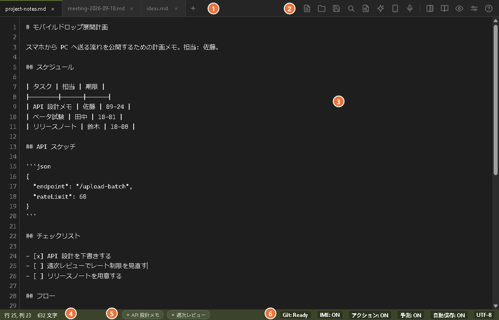
- タブバー 開いているノート。未保存の変更は点で示され、＋で新しいノートを開きます
- ツールバー 右側に、ファイルを開く・フォルダを開く・保存・検索・スクラップ検索・AIに質問・Mobile Drop・音声入力・分割/プレビュー・Zen モード・全画面・設定・ヘルプのアイコンが並びます。Windows では、音声入力（マイク）の右に、クイックキャプチャのボタンもあります（macOS にはありません）
- エディタ 左端に行番号。中身は普通のMarkdownテキストです。長い行が折り返されて何行にも見えるときも、行番号は、その行の最初の1行にだけ付きます
- ステータスバー（左） カーソルの行・列と文字数
- 関連ノートのピル 開いたフォルダの中から、いま書いている内容に近いノート。クリックで開きます
- ステータスバー（右） Git同期・アクション・予測・自動保存・文字コードのバッジ
集中したいときは Zen モード（Shift + F11、macOS: Ctrl + Cmd + Z）。ツールバー・タブ・ステータスバーが隠れ、ノートだけが残ります。ウィンドウの大きさは変わりません。画面いっぱいにしたいときは 全画面表示（F11、macOS: Ctrl + Cmd + F）を使います。タイトルバーもタスクバーも隠れ、もう一度押すと元の大きさに戻ります。Zen モードと組み合わせると、画面全体にノートだけが残ります。どちらもツールバー右側のアイコン（法輪のマークが Zen モード、四隅が全画面）から切り替えられます。Zen モードの解除は Esc か、もう一度 Shift + F11 です。
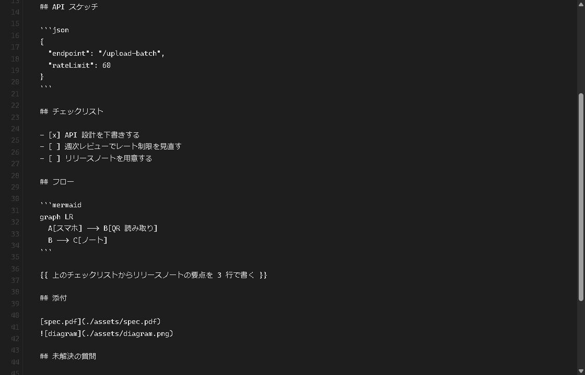
ステータスバーの各表示は、次の ステータスバーの見かた で説明しています。
制限・詳しい仕様（折り返した行の行番号）
- 折り返された2行目以降は、行番号が空欄になります。このため、行番号は、ノートの本当の行の数と一致します。
- 拡大・縮小、ウィンドウやペインの幅の変更、分割表示の2つ目のエディタにも、この表示は追随します。
- 12万文字を超えるノートでは、従来どおりの通し番号（1, 2, 3...）になります。行が折り返されると、番号がずれることがあります。
- macOS でも同じ動作になる想定ですが、macOS の実機での確認は、まだ済んでいません。
ステータスバーの見かた
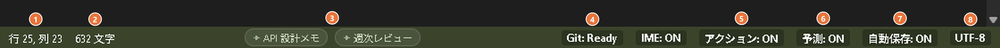
- カーソル位置 行と列
- 文字数 ノート全体の文字数
- 関連ノートのピル 最大2つ
- Git 同期 スクラップフォルダの状態。クリックで同期
- アクション アクション候補（Quick Actions）の ON / 手動 / OFF。クリックで切り替え
- 予測 ゴーストテキストの ON / OFF。クリックで切り替え
- 自動保存 ON / OFF。クリックで切り替え
- 文字コード クリックで UTF-8 / Shift_JIS を切り替え
| 位置 | 表示 |
|---|---|
| 左 | カーソルの行・列、文字数、選択の長さ（文字を選んでいるときだけ） |
| 中央 | 関連ノートのピル、LLM・処理中の表示、各種メッセージ |
| 右 | 実行中タスクのバッジ（クリックでタスクパネル、Alt + T）、Git同期（クリックで同期）、IME、アクション（クリックで ON → 手動 → OFF）、予測（ゴーストテキスト）、自動保存、文字コード（クリックで切り替え） |
関連ノートのピルを出すには
- フォルダを開くCtrl + Shift + O でノートのフォルダを開きます。次回起動時も覚えています
- そのまま書き続ける入力を止めて1.2秒ほど待ちます
- ピルが出るいまの内容に近いノートが、最大2つ表示されます
- クリックして開く新しいタブで開きます。マウスを乗せると、タイトル・パス・冒頭が見えます
フォルダを開いていないとき、または近いノートがないときは、ピルは出ません。
制限・詳しい仕様（探索の範囲とスコア）
- フォルダを開くと「ワークスペース読込完了: N 件のメモ」と表示されます。
- 探索するのは
.md・.markdown・.txtだけで、深さは3階層までです。 .で始まるフォルダ、node_modules、vendor、appdata、$recycle.bin、system volume information、windowsは飛ばします。- 300ノート、1500ファイル、2.5秒のどれかに達すると探索を打ち切ります。とても大きなフォルダでは、後ろのノートが対象に入らないことがあります（通知はありません）。
- 各ノートは、最初の見出し（なければファイル名）をタイトル、最初の1行をスニペットとして持ちます。
- 入力が止まって1.2秒後に、カーソルのある行と、カーソル前の250文字から、キーワード（2文字以上、最大8個）を取り出します。
- ほかの全ノートに点数を付け、上位2件をピルにします。
| 一致した場所 | 点数 |
|---|---|
| タイトル | 3 |
| スニペット（冒頭の1行） | 1.5 |
| パス | 1 |
インストール & 起動
Releases ページから md-memo-windows-x64.zip をダウンロードし、任意のフォルダに展開して md-memo.exe を実行します。md-memo-cli.exe が入ったリリースからは、同じ zip に、コマンドラインのコンソール版（スクリプト・エージェント・CI 用）も入っています（Headless CLI コマンドを参照）。
- Microsoft Edge WebView2 ランタイムが必要です（Windows 11 には標準で入っています）
- ランタイムがないと MD-Memo は起動できません
brew install --cask youshinh/tap/md-memo- macOS 10.15 以降
- 初回だけ、下の「初回起動について」の操作が必要です
配布物はアドホック署名のみでApple公証を受けていないため、MD-Memo.app は初回にGatekeeperにブロックされます。「…マルウェアが含まれていないことを検証できませんでした」というダイアログが出ます。
macOS 15（Sequoia）以降: ダイアログの「完了」を押します（「ゴミ箱に入れる」は押さないでください）。次に、システム設定 → プライバシーとセキュリティ を開き、下の「セキュリティ」までスクロールして、MD-Memo がブロックされたという表示の 「このまま開く」 を押し、ログインパスワードを入力します。このボタンは、アプリを開こうとしてから約1時間だけ表示されます。
macOS 14 以前: Finderでアプリを右クリック（Controlクリック）して「開く」を選びます。
どのバージョンでも: アプリのあるフォルダでターミナルを開き、xattr -dr com.apple.quarantine "MD-Memo.app" を一度実行しても開けます。
制限・詳しい仕様（ほかの入手方法・アップデートの確認）
- zip で入れる: Releases ページ から zip をダウンロードして、任意のフォルダに展開します。
- ユニバーサルバイナリ: 次回リリースからmacOSビルドはユニバーサルバイナリになり、Apple SiliconとIntel Macの両方に対応します。
- Macがなくても試せます: このリポジトリへのプッシュのたびに、GitHub上のmacOSランナーが
MD-Memo.appをビルドします。Actions タブを開く（または CI ワークフローを Run workflow で手動実行する）→ 最新の CI 実行を開く → Artifactsからmd-memo-macos-<commit-sha>をダウンロードします。これもアドホック署名なので、上記と同じ初回起動の操作が必要です。 - アップデートの確認: 起動してしばらくすると、GitHub に新しいリリースがないかを確認します（
api.github.comへの1回のリクエストのみで、ノートの内容は送信されません）。新しいバージョンがあると、ヘルプ（?）ボタンに小さなバッジが表示されます。
トレイ常駐と瞬時召喚 (Ctrl+Alt+M)
- メニューバーの常駐アイコンはなく、ウィンドウを閉じるとDockに残ります（メモリは同様に圧縮されます）
- Dockアイコンのクリック、またはホットキーで元に戻ります
- 終了するには Cmd+Q
ホットキーを押すと、どのアプリを開いていても最前面に瞬時に現れ、カーソルも直前の位置に復帰します。
もう一度押しても、ウィンドウは隠れません。バックグラウンドへ戻すには、ウィンドウを閉じてください。
IME Guardian：コード入力時の全角誤爆の完全排除
インラインコード（`...`）やコードブロック（```）、URLの入力で全角の ｃａｔ や ｆｉｎｄ が混ざり、実行エラーになるストレスをなくします。
- レキシカルスコープ保護: コードブロック内では自動的に半角英数モードへと誘導されます（入力遅延わずか11µs）。
- 直接入力のローマ字自動修復: 半角直接入力モードで「konnitiha」と打ってしまった場合、自動でひらがな変換へ救済します。
デイリースクラップ思想（日報メモ）
MD-Memoは自動的に日付ごとのスクラップファイル（scraps/YYYY-MM-DD.md）を作成します。
後述の Ctrl+Shift+F を使えば、過去数年分のデイリースクラップをミリ秒単位で全文検索できます。
無題ノートの名前の付き方
新しいノートには、まだファイル名がありません。タブには本文から取った名前が表示され、保存するまで入力に合わせて変わります。名前は、次のうち最初にあるものです。
- 最初の見出しノート内で最初の
#見出し（何段目でも可）。新規ノートの先頭に入る日付の見出し（# 2026-09-25 07:51）は数えません。 - なければ、最初に中身のある行空行、コード、コメント、表などの行は飛ばします（下の「詳しい仕様」を参照）。
- それもなければ、日付日付の見出ししかないノートは、その日付（
2026-09-25 07-51）が名前になります。
名前を付けて保存。 最初に出るファイル名は YYYY-MM-DD_<名前>.md です（例: 2026-09-25_週次計画.md）。日付はノート自身の日付見出しのもので、見出しがなければ今日の日付になります。タブの表示は日付なしの名前のままで、ダイアログではいつもどおり名前を書き換えられます。
詳しい仕様（飛ばす行と、名前の整え方）
- 飛ばすもの: 空行、フロントマター（先頭の
---で囲まれたブロック）、コードブロック、HTML コメント（MD-Memo 自身の結果マーカーも）、表の行と区切り行、水平線、スロットやタスク記法だけの行（{{ }}、[[ ]]、[? ]、[! !]、[>> ]、【? 】）。読むのは先頭 200 行までです。 - 取り除く Markdown 記法: 引用の
>、箇条書きの記号と番号、タスクのチェックボックス、太字・斜体の記号、コードのバッククォート、末尾の#。リンクは文字だけ、画像は代替テキストだけを残し、HTML タグは取り除きます。 - ファイル名として安全に: Windows でファイル名に使えない文字（
\ / : * ? " < > |）と制御文字は、消さずに空白へ置き換えます（単語がくっつかないように）。末尾のドットと空白は取り除き、CONやNULのような Windows の予約名は先頭に_を付けます。 - 長さ: 約 40 文字。空白か閉じ括弧の後ろで区切り、開いたままの括弧は残しません（その括弧の手前までにします）。絵文字の途中では切らず、
...も付けません。
02 機能別 操作ガイド
迷ったらこの表
| やりたいこと | 入口 | どんな機能か |
|---|---|---|
| 書く 選択した文を直したい・書いてほしい |
Ctrl + L （macOS: Cmd + L） |
内蔵のLLMが数秒で答えます。選択範囲（なければ現在の行）が対象で、答えは対象の下に入ります。元の文は書き換わりません。 |
| 実行する コマンドを走らせたい |
コマンドバー Ctrl + E （macOS: Cmd + E） |
選択したテキストをシェルコマンドに通し、その出力を下に挿入します（設定で置き換えに変えられます）。待ち時間はコマンド次第で、ほぼ即座です。Tab で AI モードに切り替えると、AIがコマンドを書いてくれます。 |
| 任せる・おまかせ 調査や実装をまるごと頼みたい。書いた1行の意図をくんでほしい |
自動セレクター Ctrl + Enter （macOS: Cmd + Enter） |
1行書いて押すと、内容を見て、LLM への指示・エージェントへの依頼・コマンドに振り分けます。エージェント（Claude Code、Codex、Hermes、Antigravity など）は、バックグラウンドで数分かけて作業します。結果は指示行の下に入ります。ノートに {{ 指示 }} と書いて実行する従来の方法も使えます。 |
| 何をすべきか分からない | Ctrl + J （macOS: Cmd + J） |
いま書いている内容に合う次の一手を最大3件提案します（アクション候補）。各カードは「書く」「実行」「任せる」のいずれかに対応します。 |
3つの動詞の見分け方
- 対象は「いま目の前にある文章」
- 選択してから Ctrl + L（選択がなければ現在の行）
- 数秒で、対象の下に答えが入ります
- 「コマンドの結果が欲しい」とき
- AIを待つ必要はありません
- ほぼ即座に返ります
- 自分では手を動かしたくない調べ物・実装や、書いた1行の意図をくんでほしいとき
- 行の内容から、LLM・エージェント・コマンドへ自動で振り分けます
- エージェントは数分かかります。その間もノートの編集を続けられます
書き留める・取り込むための入口（3つの動詞とは別の、手軽な入口です）
書く｜AIに質問 (Ctrl+L)
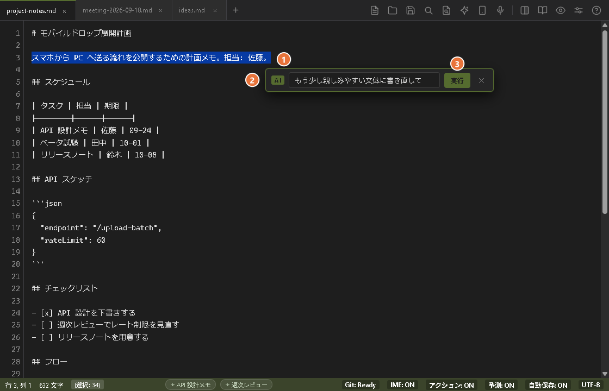
- 選択した文 指示の対象です。選ばなければ現在の行、空行ならメモ全体が対象になります
- 質問バー 対象にしてほしいことを入力します
- 対象の表示 AIが読む範囲です。「選択範囲: N文字」「現在の行」「メモ全体」のどれかが出ます
- 実行ボタン Enter でも実行、Esc で閉じます。答えは対象の下に入ります
- 文を選ぶ直したい・訳したい・要約したい部分を選びます。選ばなければ、カーソルのある行が対象です
- Ctrl + L を押して指示を書くカーソルのすぐ下に、質問バーが出ます（macOS: Cmd + L）
- Enter で実行対象の下に答えが入ります。元の文はそのまま残ります
- 待てないときは取り消す依頼はタスクパネル（Alt + T）に並びます。ここから中断できます
指示の例
- 「このエラーメッセージの原因と修正法を教えて」
- 「日本語に自然に翻訳して」
- 「箇条書きの議事録に要約して」
ツールバーのAIボタン、右クリックの「AIに質問...」、コマンドパレットの「AIに質問」でも、同じバーが開きます。
普通の文章の行で Ctrl + Enter を押しても、同じバーが開きます。このときヒントは「指示は [[ @llm ... ]] としてメモに残ります」に変わり、書いた指示が対象の下に残って、答えはその下の結果ブロックに入ります。詳しくは 自動セレクター をご覧ください。
よく使う指示はコマンドパレットに（Ctrl + Shift + P）。次の3つを選ぶと、質問バーに定型の指示が入った状態で開きます。
- UNIX Pipe: 文章推敲・リファクタ — 選択範囲を簡潔で論理的な文章に整えます。
- UNIX Pipe: 箇条書き要約 — 要点を構造化されたMarkdownの箇条書きにまとめます。
- UNIX Pipe: 未完了タスク抽出 — 文章からTODOを拾い出し
- [ ]形式のチェックリストにします。
制限・詳しい仕様（対象・答えの入る場所・エラー・取り消し）
- 対象の決まり方: 選択範囲があればそれ、なければカーソルのある行、行が空ならメモ全体の順です。ノートが空のときは「対象テキストなし（自由な質問）」と表示され、入力した指示だけがAIに送られます。
- 答えの入る場所: 対象の最後の行の下に、空行を1つずつはさんで入ります。空行にカーソルがあるときは、その空行に入ります。選択範囲や行そのものは書き換わりません。
- LLM が未設定のとき: 質問バーは開きません。「LLMが未設定です（設定 → AIモデル）」と出て、ノートは変わりません。モデルか接続先が空のとき、または Gemini・OpenAI などのクラウドサービスで API キーが空のときです（Ollama などのローカルは、キーなしで使えます）。
- 待っている間: ノートに
[AI 生成中: 指示の先頭20文字...]という行が入り、答えが届くと、その行が答えに置き換わります。 - 失敗したとき: 答えの代わりに、
[LLMエラー: 原因]という1行が入ります。原因は、改行を除いて300文字までに縮められます。 - 取り消し: 依頼は、タスクパネル（Alt + T）にエージェント名「LLM」で並びます。ここで取り消すと、待機中の行が消えてノートは元の状態に戻り、「LLMへの依頼を中断しました」と表示されます。AIへの通信そのものは止められないので、あとから届いた答えは捨てられます。
- 使うモデル: 設定 → AIモデル の、テキストLLMです。
- 日本語入力（IME）: 変換を確定する Enter では、送信されません。確定したあとにもう一度 Enter を押すと実行します。
- 回答のフェンスの扱い: モデルが回答全体を1つの
```markdown/```mdフェンスで囲んで返してきた場合、MD-Memoは挿入前にそのフェンスを自動で外します。コードブロックで囲むのではなく、Markdownそのものが挿入されるようにするためです。実際のコード回答（```pythonなど）や、他の文章の中にフェンスコードブロックを含むだけの回答は、そのまま挿入されます。 - 以前のキー: 以前のバージョンで、この機能を Ctrl + K で使っていた場合は、設定を読み込むときに Ctrl + L へ自動で移り、お知らせが1回だけ出ます（別画面だったプロンプト入力は、この質問バーに統合されました）。
書く｜ゴーストテキスト（予測入力）
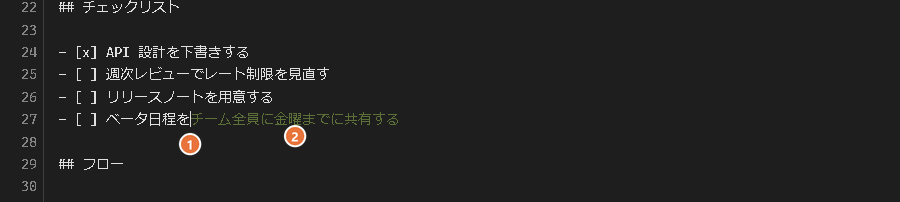
- カーソル ここまでに入力した内容です
- ゴーストテキスト 灰色の予測です。Tab（または →）で採用、Ctrl + → で1単語だけ採用します
制限・詳しい仕様
- 提案を出すのは、ローカルLLM（Ollama / Gemma 4）またはクラウドAPIです。設定は 設定 → AIモデル の「入力予測」にあります。
- 表示までの待機時間の既定は500msです。設定画面では200〜2000msですが、実際の下限は300msです。
- ステータスバーの「予測」バッジをクリックすると、ON / OFF を切り替えられます。
書く｜AI 文章校正・誤字脱字修正 (Alt+C)
- 文章を選ぶ議事録や報告文など、仕上げたい部分を選びます
- Alt + C を押すmacOS: Cmd + Shift + C。プロンプトの入力は要りません
内容を書き換えるのではなく整えるための機能なので、議事録や報告文の仕上げに向いています。オン / オフは 設定 → 一般 の「AI入力間違い・誤字脱字の自動補正 (Alt+C)」で切り替えられます。
書く｜画像貼り付け OCR 文字起こし (Ctrl+V)
- 画像をコピーするスクリーンショットや設計図の画像をクリップボードへ
- MD-Memoで Ctrl + VGemini Vision OCR が起動します
- Markdownが貼られる画像内のテキスト・表・コードが、構造化されたMarkdownとして入ります
フォルダに画像を入れるだけで読み取る ホットフォルダ や、画面を撮って読み取る 画面キャプチャ（Windows のみ）もあります。画像を PC の外に出したくないときは、設定 → 同期 の「画像をこのPCの外に出さない」をオンにします（Windows のみ。精度は下がります）。この設定は、ホットフォルダなどの読み取りに効くもので、Ctrl + V の貼り付けの OCR には関係しません。
制限・詳しい仕様（必要な設定）
- 設定 → AIモデル → 画像解析 で、Geminiなどの画像モデルとAPIキーを設定します。
- 「画像ペースト(Ctrl+V)時に自動で画像マークダウン化 (Vision OCR) を実行」のスイッチが必要です（既定でオン）。
- クリップボードに画像しかないときだけ働きます。テキストと画像の両方があるときは、テキストが貼り付けられます。
- ローカルのビジョンモデル（OllamaやLM Studio）なら、APIキーなしでもOCRできます。
- OCRを使わず画像のまま貼りたいときは、そのまま貼る（Ctrl + Shift + V）で assets に保存します。スイッチがオフのとき、または画像モデルのAPIキーが未設定のときは、Ctrl + V でも、同じように assets に保存してリンクを貼ります（理由がトーストに出ます）。
書く｜スマート貼り付け (Ctrl+V / Ctrl+Shift+V)
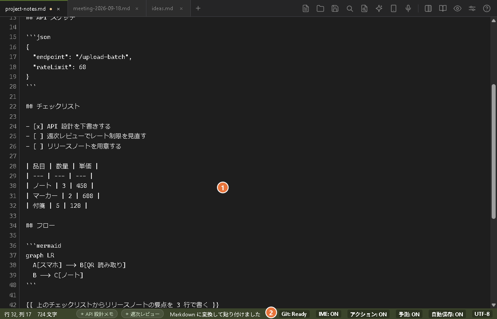
- 貼り付けた表 HTMLの表が、Markdownの表に変換されています
- トースト ステータスバーに「Markdown に変換して貼り付けました」と出ます
- 構造のあるHTML: Webページ・Word・Google Docs・Excelの表や見出し、リスト、リンクを、Markdownに変換して貼ります。トーストに「Markdown に変換して貼り付けました」と出ます
- 構造のない内容（エディタやターミナルからのコードとログ、1セルだけのコピー）は、そのまま貼ります
- 画像だけのとき: 画像OCR のビジョンモデルがMarkdown / Mermaidに文字起こしします
- OCRには、「貼り付けた画像を自動で文字起こしする」設定とAPIキーが必要です（設定 → AIモデル → 画像解析）。どちらかが足りないときは、OCRに送らず、Ctrl + Shift + V と同じく画像を assets に保存してリンクを貼ります（Mobile Drop の写真と同じ扱い）
- テキスト: 装飾を取り除いたプレーンテキストで貼ります。HTMLの変換はしません
- 画像だけのとき:
./assets/YYYY-MM-DD-HHmmss.pngとして保存し、カーソル位置にを挿入します。OCRには送られません - ExcelやWordのように、テキストと画像が両方あるときは、テキストが貼られて画像は無視されます
制限・詳しい仕様
変換されるもの（内蔵コンバータ。外部依存なし）
- 見出し（h1〜h6）、段落、改行、水平線
- 太字・斜体・取り消し線、インラインコード、言語付きのフェンスコードブロック
- 入れ子の引用、
startを保持した入れ子のリスト、タスクリストのチェックボックス - タイトル付きリンク、画像
- 列揃えを保ったGFMテーブル（セル内の
|はエスケープ） - Google Docs特有のラッパー構造にも対応します
安全のため取り除かれるもの: <script>・<style>・<iframe>・<svg> の中身、javascript: と data: のリンク、data: 画像。
画像の保存名: 拡張子は実際の画像形式に合わせて .png / .jpg / .gif / .webp になり、名前が重複すると -2、-3… が付きます。
./assets/ の保存先: メモが保存済みならそのメモの隣、そうでなければ現在のワークスペースフォルダ、ワークスペースも無ければアプリのデータフォルダです。最後のケースでは、挿入されるリンクは相対リンクではなく、絶対パスの file:/// リンクになります。
変換の対象: 表・見出し・リスト・リンク・画像・引用・区切り線・太字や斜体などが含まれるHTMLだけを変換します。段落と改行だけのHTML、VS Code のエディタからのコピー、1セルだけのExcelのコピーは、変換せずにそのまま貼ります。
役割を元に戻す: 設定 → 一般 の「Ctrl+V で Web・Word・Excel の内容を Markdown にして貼る」をオフにすると、以前の割り当てになります。Ctrl + V がプレーンテキスト、Ctrl + Shift + V がHTMLの変換です（このとき、貼り付けイベントにHTMLが含まれないアプリでは、非同期クリップボードAPIにフォールバックします。組み込みブラウザが、初回のみ独自の許可プロンプトを表示することがあります）。
トースト: 「Markdown に変換して貼り付けました」（変換成功時）、または「画像を assets に保存しました」（画像のみのクリップボードを ./assets/ に保存したとき）。
Ctrl + Shift + V は固定のキーで、設定 → ショートカット では変更できません。以前はプレビューを横に開くコマンドでしたが、そちらは Ctrl + Alt + V（macOS: Cmd + Option + V）に変わりました。
書く｜音声入力 (Ctrl+Shift+R)
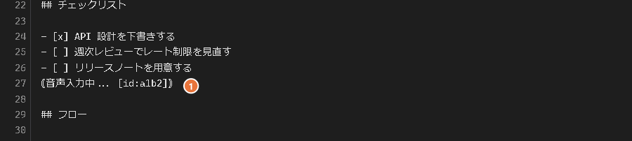
- 録音中のマーカー 録音が終わると、文字起こしの結果に置き換わります（Esc で録音を破棄）。マーカーの文字は、UIの言語にかかわらず日本語です
- 録音を始めるCtrl + Shift + R（macOS: Cmd + Shift + R）。カーソル位置に
⦅音声入力中... [id:xxxx]⦆が入ります。録音中も、別の場所をクリックして入力を続けられます - 止める画面左下の 停止 ボタンをクリック、もう一度 Ctrl + Shift + R、または5秒の無音（1〜30秒で変更可）で自動停止します。Esc なら破棄で、マーカーは消えて何も送信されません
- 結果を待つマーカーが
⦅文字起こし中... [id:xxxx]⦆に変わり、終わるとテキストに置き換わります
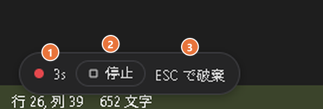
- 録音中の印 赤い点と、録音してからの経過時間です
- 停止ボタン クリックすると録音を止めて、文字起こしを始めます（ショートカットをもう一度押すのと同じです）
- ESC で破棄 Esc を押すと、録音を破棄します
録音を始める4つの方法
話した内容を整える（推敲）と、声での書き換え
文字起こしのあと、2 段目のモデル（既定は gemini-flash-lite-latest）が文章を整えてから入れます。「えーと」などのフィラーと言い直しを取り除き、いまの行の書式（箇条書き・タスク・番号付きリスト・表）に合わせます。既定でオンです。
- 声での書き換え: テキストを選択してから録音すると、話した内容を編集の指示として選択範囲に適用します（例:「もっと丁寧に」）。指示として読み取れないときは、選択範囲はそのままです。選択範囲は 8000 文字までで、選択したテキストは Gemini に送られます。
- 整えずに入力する: Ctrl + Shift + Alt + R（macOS: Cmd + Shift + Option + R）で録音すると、その 1 回だけ整えません。選択範囲は、話した内容そのものに置き換わります。
- オン/オフの切り替え: ステータスバーの「音声: 推敲ON / そのまま」をクリックするか、Ctrl + Alt + R（macOS: Cmd + Option + R）を押します。どちらも設定 → ショートカットで変更できます。
- 失敗したとき: 時間内に終わらない、または失敗したときは、文字起こしをそのまま入れます。書き換えに失敗したときは、選択範囲を元に戻します。
文字起こしに失敗したとき
録音は消えません。音声はアプリのデータフォルダの voice_cache に保存され、マーカーが次のように変わります。
⦅文字起こし失敗: [再試行(id:xxxx)] [音声保存] [破棄]⦆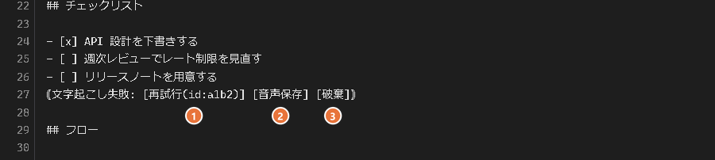
- [再試行] 保存した音声を、もう一度文字起こしに送ります
- [音声保存] 音声をノートの
./assets/に移し、[audio](...)リンクを挿入します - [破棄] 保存した音声を削除し、マーカーを消します
このリカバリは、アプリを再起動した後でも使えます（保存済みの音声とマーカーのidは再起動後も残ります）。
失敗の理由が 話し声が検出されませんでした のときは、APIは動いていて、録音に話し声がほとんど入っていません。マイクの選択と音量（Windows の設定 → システム → サウンド）を確認してください。応答がまったく返らないときは、待ち時間（既定の30秒＋20秒）を過ぎるとマーカーが [再試行] の形に変わり、アプリを閉じている間に応答が途切れた古い「文字起こし中」の表示は、ノートをクリックすると片付きます。
設定（設定 → AIモデル の「音声入力 / Voice input」。画像OCR（ビジョン）の設定のすぐ下にあります）
| 項目 | 既定 | 説明 |
|---|---|---|
| 音声モデル | gemini-3.5-transcribe |
候補は gemini-3.5-transcribe、gemini-flash-lite-latest。 |
| API 形式 | 自動 | 自動 / Interactions API / generateContent。自動は、モデル名に「transcribe」を含めば Interactions API、それ以外は generateContent を使います。 |
| 言語コード | 空欄 | BCP-47 をカンマ区切りで指定します（例 ja-JP, en-US）。空欄なら自動判定で、言語の混在にも対応します。 |
| モード | スマート | スマート＝フィラーを除いて、読みやすく整形。逐語＝そのまま書き起こします。 |
| カスタム語彙 | 空欄 | 1行に1語（人名・専門用語）。最大1000語ですが、100語程度までがいちばん効きます。 |
| 無音タイムアウト (秒) | 5 | 1〜30。この秒数だけ無音が続くと自動で停止します。 |
| 文字起こしプロンプト | 既定の指示文 | generateContent 形式のモデルでだけ使われます。 |
| 文字起こしを 2 段目のモデルで整える | オン | オフにすると、文字起こしをそのまま入れます（声での書き換えも使えません）。 |
| 推敲モデル | gemini-flash-lite-latest |
Gemini のモデルだけ使えます。カスタム語彙も、整えるときの表記の手がかりに使われます。 |
| 推敲のタイムアウト (秒) | 5 | 1〜30。この秒数で終わらなければ、文字起こしをそのまま入れます。 |
| APIキー / Base URL | 空欄 | 空欄なら、画像OCR（ビジョン）の設定を使います。専用の入力欄はありません。 |
設定 → AIモデル には、この下に「音声認識エンジン(フォルダ監視・Discord)」もあります。Whisper（このPC内）を選んでも、効くのはホットフォルダと Discord 連携だけです。この画面での音声入力（Ctrl + Shift + R）は、これまでどおり Gemini を使います。詳しくは ホットフォルダ をご覧ください。
メッセージとエラー
状況に応じたメッセージが、ステータスバーに6〜9秒ほど表示されます。
| メッセージ | 意味と対処 |
|---|---|
| マイクを準備中... | キーを押した直後に表示されます。 |
| マイクの許可待ちです。... | 5秒たっても応答がないときに表示されます。初回はWebView2が独自の許可の確認を出すので「許可」を選びます。MD-Memoが無断でマイクを許可することはありません。 |
| マイクの使用が許可されていません。... | Windows の設定 → プライバシーとセキュリティ → マイク で、デスクトップアプリのアクセスを許可します。 |
| マイクが見つかりません | マイクが接続されていません。 |
| マイクを開けません。... | ほかのアプリがマイクを使用中かもしれません。 |
| マイクを使用できませんでした | 上のどれにも当てはまらない場合の汎用メッセージです。 |
| 音声入力はエディタ表示で使えます | レンダリングされたプレビュー表示中に押したときに出ます。エディタ表示に戻してください。 |
制限・詳しい仕様（モデル・プライバシー・必要なもの）
- モデル: 既定は
gemini-3.5-transcribeです。この画面での音声入力は、Geminiモデル限定で、オフラインやGemini以外のモデルは選べません（オフラインの Whisper を選べるのは、ホットフォルダと Discord 連携の文字起こしだけです）。 - 呼び出し方: Google の Gemini 3.5 Transcribe を Interactions API（
POST {base}/v1beta/interactions、ヘッダーx-goog-api-key）で呼びます。gemini-flash-lite-latestなどそれ以外の Gemini モデルは、プロンプト付きの generateContent 形式で動きます。 - ライブ版は使えません:
gemini-3.5-transcribe-liveはストリーミング（Live API）版で、録音した音声には使えません（指定すると、その旨のエラーが出ます）。 - プライバシー: MD-Memoは常に
store: falseを送ります。Google側に録音や文字起こしは保存されません。 - キー: APIキーとBase URLが空なら、画像OCR（ビジョン）の設定を使います。設定ファイルには
voice.apiKey/voice.baseUrlというキーもありますが、設定画面に入力欄はありません。 - 日本語IME: IMEをオンにしたままでも、ショートカットは使えます。
- マイクの許可: 許可の確認を出すのはOSではなく組み込みブラウザ（WebView2）自身で、初回録音時に一度だけです。
- macOS: マイク使用の説明文は組み込み済みですが、macOSでの動作はまだ十分に検証されていません。
実行する｜コマンドバー: CLI モード (Ctrl+E)
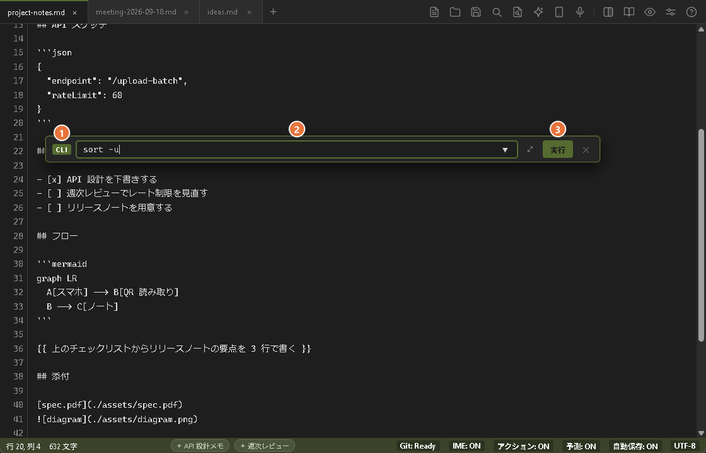
- モードのバッジ 「CLI」と出ています。クリックするか Tab を押すと AI CLI モードに切り替わります。選んだモードは、次に開くときも使われます
- コマンド欄 シェルコマンドを入力するか、ドロップダウンから、履歴やプリセット（
sort -u、jq .、git statusなど）を選びます - 実行（Enter） 選択範囲（選択がなければノート全体）をコマンドに送り、出力が返ってきます
- テキストを選ぶ選ばなければ、ノート全体が対象になります
- Ctrl + E でバーを開く入力欄に、よく使うコマンドの候補が並びます。AI モードで開いたときは、Tab で CLI モードに切り替えます
- コマンドを入力して Enter選んだテキストの下に、コマンドの出力が入ります（選んだテキストは残ります）。Esc で閉じます
Ctrl + E で開くのは、ひとつのコマンドバーです。前回使ったモードで開き、Tab か、バー左端のバッジ（CLI / AI CLI）のクリックで、いつでも切り替えられます。コマンドを自分で書けるなら CLI モード、書き方が分からないなら AI モード です。
モードごとに直接開くキー（「コマンドバー: コマンド実行モード」「コマンドバー: AIがコマンドを作るモード」）は、既定では割り当てられていません。設定 → ショートカット の「コマンドバー」グループで割り当てられます。
コマンドの例
jq .: JSONの整形・インデントsort -u: 重複行を排除してアルファベット順に並び替えtr a-z A-Z: 大文字に一括変換duckdb -box: SQLをインライン実行して表形式で出力
制限・詳しい仕様
- 結果の扱い: 設定 → 連携 の「コマンド（実行する）」にある「コマンドの出力の入れ方」と「実行結果を新しいタブで開く」で決まります。選んだテキストがあるとき、出力は既定で、その最後の行の下に入り、選んだテキストは残ります。コマンドが元と同じテキストを返したとき（たとえば、すでに並んでいる行への sort）は、二つ目のコピーを作らないよう何も追加せず、その旨をメッセージで知らせます。「選択範囲を置き換える」にすると、従来のフィルタのように、選んだテキストが出力に置き換わります。「実行結果を新しいタブで開く」がオン（既定）のときは、結果を新しいタブでも開きます。オフでは新しいタブを開かず、選択がなければ出力をノートの末尾に加えます（「置き換える」なら、ノート全体が出力に置き換わります）。
- 出力が空のとき: コマンドが成功しても何も出力しなかった場合、結果のタブに「(no output)」と表示されます。
- 作業ディレクトリ: コマンドは、MD-Memoアプリ自身の作業ディレクトリで実行されます。
- プリセット（入力欄の候補）: 履歴が先頭に並び、続けて、agents.yaml の
snippets:に書いた自作の command のひな形、固定のフィルタ（sort、sort -u、jq .、tr、wc -l、duckdb -boxなど）、組み込みの command のひな形の順です。ひな形は、そのまま実行できるもの（${selection}や$0などのプレースホルダを含まないもの）だけが並びます。組み込みはgit status、git diff --stat、現在の日時、ファイル一覧などで、実行中の OS に合う版だけです。詳しくは 自動セレクター の「ひな形」をご覧ください。
実行する｜コマンドバー: AI モード (Ctrl+E → Tab)
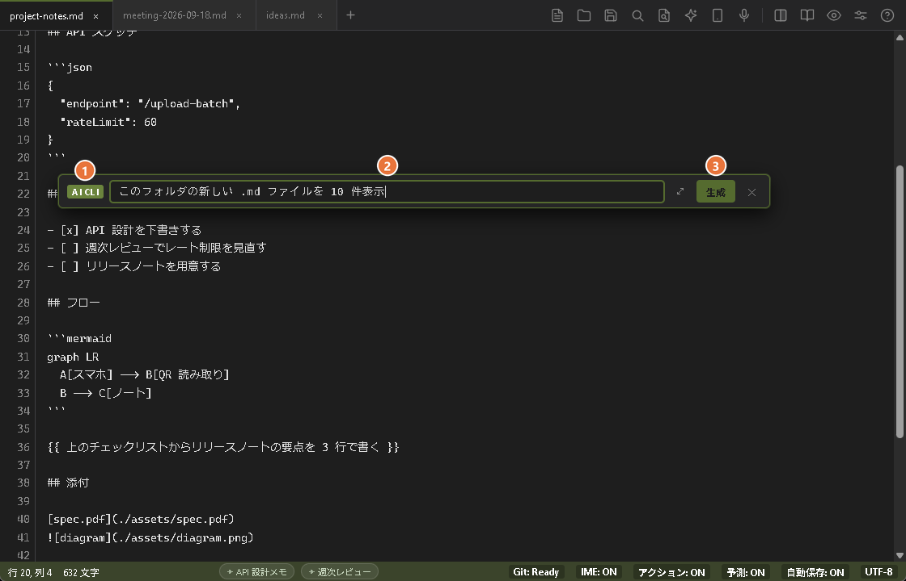
- モードのバッジ 「AI CLI」と出ています。クリックするか Tab を押すと、通常の CLI モードに戻ります
- 依頼欄 コマンドを書く代わりに、やりたいことを普通の言葉で書きます
- 生成（Enter） AIがコマンドを欄に書き込むので、内容を確認します。もう一度 Enter で実行します
- Ctrl + E でバーを開き、Tab で AI モードにするバー左端のバッジが
AI CLIになります。前回 AI モードだったときは、最初からこのモードで開きます - やりたいことを日本語で書く例：「今日更新されたファイルを探して」「ポート8080を使っているプロセスを終了して」
- Enter で生成AIが対応するシェルコマンドを作り、バーに入れます
- 内容を確認して Enter で実行実行前に必ず内容を読んでください
生成されたコマンドは、実行前に安全性チェックを通ります。システムを破壊しうるコマンドは実行が拒否され、注意が必要なコマンドには警告が表示されます。
任せる｜自動セレクター (Ctrl+Enter)
4つのキーの役割（macOS では Ctrl を Cmd に読み替えます）
行き先は、ネットワークを使わない決まりごとで判定します。外れることもありますが、迷うときは質問バーが開くだけで、ノートは勝手に変わりません。
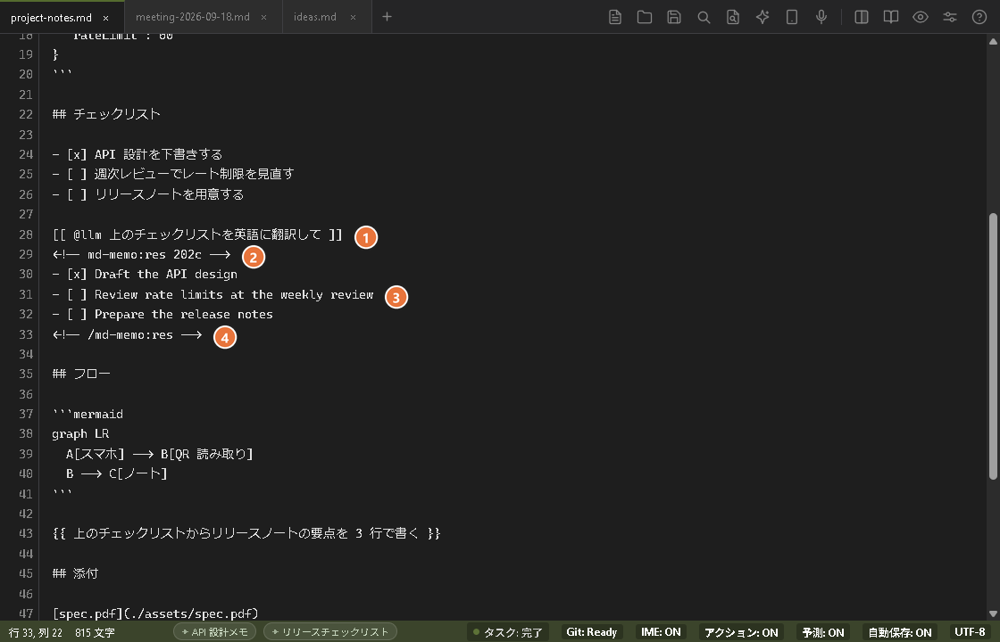
[[ @llm ... ]] に変わり、答えが下の結果ブロックに入ったところ- 指示の行
[[ @llm ... ]]に書き換わり、そのまま残ります - 結果ブロックの始まり
md-memo:resのコメント行です。ノートの中の文字として残ります - 答え 2つのコメント行の間に入ります
- 結果ブロックの終わり 閉じるコメント行です
- 1行で書く「上のチェックリストを英語に翻訳して」のような依頼や、
git statusのようなコマンドを、ふつうに書きます - Ctrl + Enter を押すLLM への指示なら、すぐ実行します。エージェントやコマンドなら、行を書き換えて止まります（macOS: Cmd + Enter）
- 止まったら、もう一度 Ctrl + Enter書き換えた行が実行されます（行の右の 実行 ボタンでも同じです）。やめるときは Ctrl + Z で書き換えを取り消します
- 結果を受け取る指示行の下に結果ブロックが入ります。指示行でもう一度 Ctrl + Enter を押すと、結果を作り直せます
- 待てないときは中断するタスクパネル（Alt + T）の「中断」で、実行中の目印が消えます。書き換えた指示行は、そのまま残ります
エージェントやコマンドは、書き換えたところで止まります。もう一度 Ctrl + Enter で実行します。設定で、止めずにすぐ実行することもできます（設定 → 連携 の「自動セレクター」）。
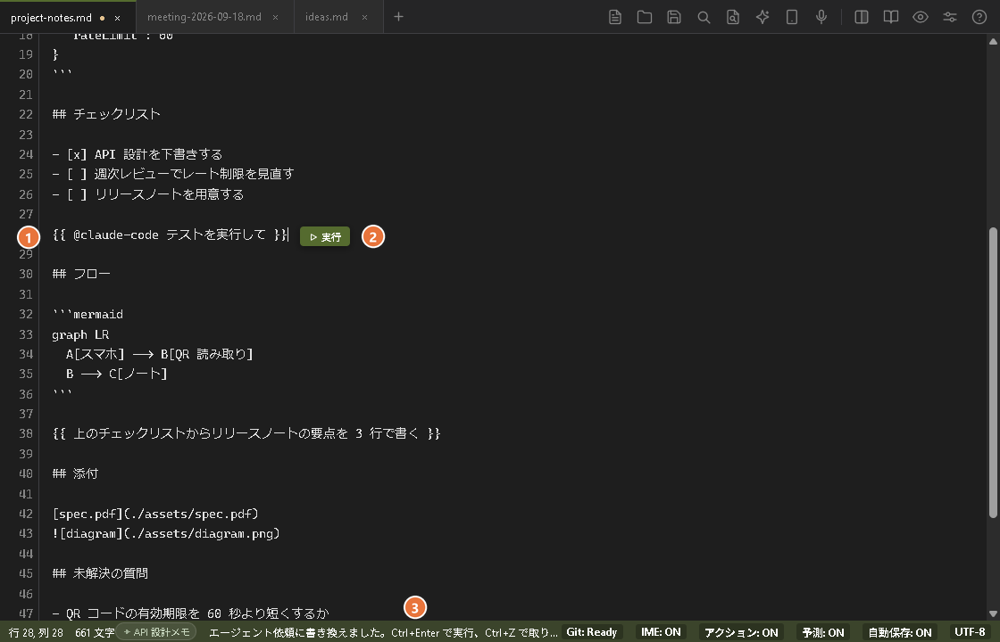
- 書き換わった行
{{ @claude-code ... }}になりました。まだ実行していません - 実行ボタン もう一度 Ctrl + Enter を押すのと同じです
- メッセージ 「エージェント依頼に書き換えました。Ctrl+Enter で実行、Ctrl+Z で取り消し」と出ています
普通の文章は、質問バーに回します。指示に見えない行では、質問バーが開きます。書いた指示は、対象の下に [[ @llm ... ]] として残り、すぐ実行されます。対象の行そのものは変わりません。
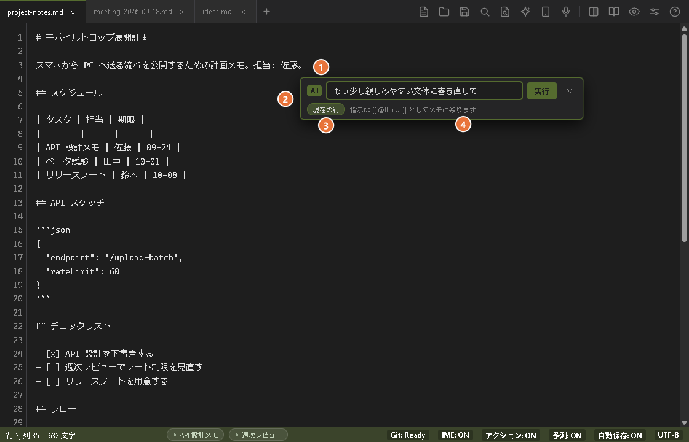
- 対象の行 指示の対象です。選択がなければ、カーソルのある行です
- 質問バー Ctrl + L と同じバーです。AIにしてほしいことを書いて、Enter で実行します
- 対象の表示 「現在の行」と出ています。選択したときは「選択範囲: N文字」です
- ヒント 書いた指示は、
[[ @llm ... ]]としてノートに残ります
{{ ... }}- 結果が、指示ごと置き換わります
- 元に戻すのは、結果が入った直後の Esc か Ctrl + Z
- プロファイル（
code:など）と@skillは、こちらのままです
[[ ]] / {{ @エージェント }}- 指示は、そのまま残ります
- 結果は、指示行の下の結果ブロックに入ります
- もう一度実行すると、結果ブロックだけが置き換わります
ひな形（スニペット） よく使う指示やコマンドの型を、ひな形として挿入できます。入口は、コマンドパレットの「タスクのひな形を挿入」、{{ を打ったときのクイックセレクター、;sum のような短縮語 + Tab の3つです。自作もできます（下の「ひな形」）。
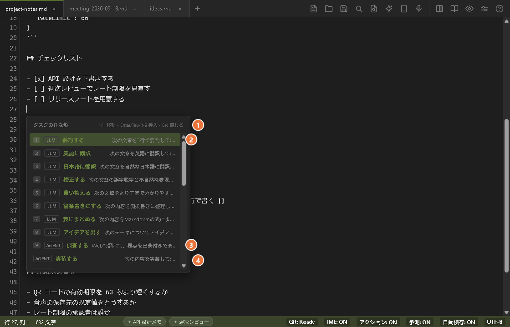
- 見出しとキー ↑↓ で移動、Enter・Tab・1〜9 で挿入、Esc で閉じます
- ひな形の1行 数字キー、種類のタグ、名前、本文の1行プレビューが並びます。上から9行は、数字キーで挿入できます
- 種類のタグ LLM は内蔵AI、AGENT はエージェント、CMD はコマンド、TEXT はそのまま入るテキストです
- 続きの一覧 下にスクロールすると、コマンドとテキストのひな形、agents.yaml に書いた自作のひな形が続きます
記法と結果ブロック（書き方・結果の形・再実行・中止）
| 記法 | 実行先 | 結果の入る場所 |
|---|---|---|
[[ @llm 指示 ]] | 内蔵LLM（設定 → AIモデル のテキストLLM） | 指示行の下 |
[[ $ コマンド ]] | シェルコマンド。コマンドバーと同じ安全チェックを通ります。標準入力はありません | 指示行の下（コードブロック） |
{{ @エージェント名 指示 }} | agents.yaml のエージェント。名前は、キーか別名（大文字小文字は区別しません） | 指示行の下 |
{{ ... }}（従来） | 従来どおり（プロファイルの {{ }} や {{ @skill ... }} を含みます） | スロットを結果で置き換え |
- 書き方の決まり:
[[ ... ]]は、中身が@llmか$で始まるときだけ記法として扱います。ウィキリンク（[[Wiki Link]]）には触れません。1つの記法は1行に収めます。- [[ @llm ... ]]や> {{ @claude ... }}のように、リストや引用の記号の後ろにも書けます。 - @名前の探し方:
{{ @名前 ... }}の名前は、まずエージェント（キー、別名の順）として探し、どれでもなければ、従来どおりスキル指定として扱います。既定の別名は、claude-codeにclaude・cc、agyにantigravity・geminiです。hermesとcodexには、既定の別名がありません。 - エージェント指名の前提指示:
{{ }}プロファイルの「コードブロックだけ返す」という前提の指示は、付きません（調査などが壊れるためです）。指示が空で、そのエージェントが指示を引数に取る（argsに{instruction}がある）ときは、CLI を起動せず、結果に「指示が空です。{{ @名前 指示 }} の形で書いてください」と入ります。
結果ブロックの形
[[ @llm 英語に翻訳して ]]
<!-- md-memo:res a1b2 -->
結果の本文
<!-- /md-memo:res -->- 実行中: 指示行の直下に、1行の目印
<!-- md-memo:run a1b2 -->が入ります。終わると、結果ブロックに置き換わります。a1b2の部分は、英数字の短い id です。 - 指示行と結果: 指示行そのものは、実行しても書き換わりません。結果は、前後の空白を落として入ります。ブロックの中に、空行は足されません。
- コマンドの結果: 出力に含まれるバッククォートの連続より長いフェンスで囲んだ、コードブロックです。失敗したときは、出力・標準エラー・
exit code Nの行が、同じブロックに入ります。 - LLM・エージェントの失敗: LLM は
[LLMエラー: メッセージ]、エージェントは[エージェント名 エラー: メッセージ]の1行が入ります。メッセージは1行にまとめられます。 - コメント行: 結果ブロックの前後のコメント行は、ノートの中の普通の文字です。エディタには見えますが、MD-Memo のプレビューでは隠れます。消しても、ほかには影響しません（実行中に消したときは、答えがノートの末尾に追加されます）。
- 再実行: 実行済みの指示行で Ctrl + Enter を押すと、下の結果ブロックを置き換えます（クラッシュなどで残った目印も同じです）。積み重なりません。実行中に押すと、「このスロットはすでに実行中です」と出ます。
- 中止: タスクパネル（Alt + T）の「中断」で、実行中の目印が消えます（指示行は残ります）。LLM は提供元に中止を伝えられないので、目印を消し、遅れて届いた答えを捨てる動きです。コマンドとエージェントは、実行を止めます。再実行の途中で中止すると、置き換えた古い結果は戻りません。
- 文脈（
ctx=above）: 質問バーで記録した指示の目印には、ctx=above n=行数が付きます（例:<!-- md-memo:res a1b2 ctx=above n=1 -->）。再実行では、指示行の真上にある、空白でない行（最大 n 行）を、対象のテキストとして再び送ります。間に別の指示行や結果ブロックがあれば、飛び越えます（最大80行・8000文字）。手書きの指示、ひな形から作った指示、行の書き換えで作った指示には付かず、書いた文言だけが送られます。周りの文章を、暗黙に送ることはありません。 - 結果ブロックの中: カーソルが結果ブロックの中にあるときは、「これは実行結果のブロックです。指示はブロックの外に書いてください。」と出て、何も起きません。結果に
{{ }}が含まれていても、実行されません。
結果を探す・扱う
- 緑のバー: 結果ブロックは、行番号の横のガターに、細い緑のバーで表示されます。始まりのコメント行は明るい緑、答えの行は薄い緑、終わりのコメント行は濃い緑です。閉じられていないブロック（実行が終わらなかったもの）は、始まりの行に明るい緑のバーだけが付きます。結果ブロックのないノートには、何も出ません。本文そのものに色は付きません。
- コマンド: コマンドパレット（Ctrl + Shift + P）で「結果」と入力すると、次の結果ブロックへ移動、前の結果ブロックへ移動（ノートの端まで行くと反対側に戻ります）、この結果をコピー（前後のコメント行を除いた答え）、この結果を削除（コメント行ごとブロック全体）、この結果を確定が出ます。コピー・削除・確定は、カーソルのあるブロックが対象です（前後のコメント行も、ブロックの中として扱います）。削除と確定は、取り消し1回で元に戻せます。初期状態では、どれにもキーは割り当てられていません。設定 → ショートカット の「結果ブロック」で、好きなキーを付けられます。プレビューがエディタを覆っている間は、メッセージが出るだけです。
- 確定: 答えは通常のテキストとして残り、前後の2つのコメント行が消えます。答えの中に
[[ @llm ... ]]や{{ @エージェント ... }}の記法があると、結果ブロックの外に出るので、また実行できる状態に戻ります（その行で Ctrl + Enter を押すと実行されます）。
判定のしくみ（順番・振り分け・設定がないとき・限界）
Ctrl + Enter を押したときの判断の順番（ネットワークを使わず、押した瞬間に決まります）
- 日本語入力の変換を確定する Enter のときは、何もしません。押しっぱなしでも、繰り返しては実行しません。
- カーソルが結果ブロックの中なら、「これは実行結果のブロックです。指示はブロックの外に書いてください。」と出して、何もしません。
- カーソルの位置に、新しい記法のタスクがあれば、そのタスクだけを実行します。選択があるときは、選択の先頭にあるタスク、なければ選択した行の最初のタスクです。複数行を一度に走らせることはありません。
- カーソルが従来の
{{ }}系のスロットの中なら、従来どおり実行します（結果で置き換わります）。 - 自動判定がオフ、または行が空白なら、従来の動きです。カーソルより後ろの次のスロット、なければノートの最初のスロットを実行し、どれもなければ「実行できるスロットが見つかりません」と出ます。コードブロックの中では、何も起きません。
- 対象は、選択範囲、なければ現在の行です。選択が行の一部だけのとき、選択が複数行のとき、行が指示に見えないとき、迷うときは、質問バーを開きます。行のテキスト全体を選んだときは、選択なしと同じ、その行の判定になります。
- 行全体が指示に見えるときは、次の表のとおりに動きます。
| 判定 | 動き |
|---|---|
| LLMへの指示 | 行を [[ @llm 行の内容 ]] に書き換えて、すぐ実行します。LLM が未設定なら、ノートに触れず、「LLMが未設定です（設定 → AIモデル）」と出します。 |
| エージェントへの依頼 | 行を {{ @エージェント名 行の内容 }} に書き換えて、止まります。「エージェント依頼に書き換えました。Ctrl+Enter で実行、Ctrl+Z で取り消し」と出ます。エージェント名は、行頭に @名前（別名も可）があればそれ、なければ既定のエージェント（設定 → 連携）です。 |
| コマンド | 行を [[ $ 行の内容 ]] に書き換えて、止まります。「コマンドに書き換えました。Ctrl+Enter で実行、Ctrl+Z で取り消し」と出ます。実行するときに、安全チェックを通ります。 |
設定 → 連携 の「自動判定したエージェント／コマンドは実行前に確認する」（既定はオン）をオフにすると、エージェントとコマンドも、書き換えと同時に実行します。
質問バーからの記録: 質問バーで指示を入力して Enter を押すと、対象の下の新しい行に [[ @llm 入力した指示 ]] が書かれて、すぐ実行されます。対象のテキスト自体は変わりません。LLM には、指示と対象のテキストの両方が渡されます。LLM が未設定のときは、バーを開かずにメッセージを出し、ノートは変わりません。
「指示に見える」ものの目安
- 指示と見なす: 依頼の言い回し（「〜して」「〜してください」「〜教えて」、翻訳・要約・校正 など）、疑問語のある質問、英語の命令形（translate、summarize など）。
- 指示と見なさない: 見出し、表の行、URL、コードらしい行、ふつうの文、4行以上、約240文字より長い文。質問バーが開きます。
- 行き先: 翻訳・要約・校正・言い換え・箇条書き・表・アイデアなどは LLM です。実装・リファクタリング・テストの実行・ビルド・コミットや PR などの Git 操作・調査・エラーログ、コードやバグの言葉が重なる修正などは、エージェントです（「テストを実行して」「npm test を実行して」もエージェントです）。
git status、ls -la、cat a.txt | sortのように、既知のコマンド名で始まり引数が付く行は、コマンドです。どれでもなければ LLM です（文字の答えだけで済む、安全側の選び方です）。 - 行頭の指定が優先: 行頭に
@llm、@エージェント名（別名も可）、$があれば、それに従います。 - コマンドの自動判定: 書き込みや削除をするコマンド（
rm、>での保存など）は、自動ではコマンドと判定されません。実行したいときは、[[ $ ... ]]と自分で書きます。 - 外れる例: 「資料は事前に共有してください」のような丁寧な依頼文も、LLM への指示と判定されます。
設定や環境が足りないとき
| 状況 | 動き |
|---|---|
| LLM が未設定（モデルか接続先が空。Gemini などのクラウドで API キーが空） | 「LLMが未設定です（設定 → AIモデル）」と出て、ノートは変わりません。Ollama などのローカルは、キーなしで動きます。 |
| エージェントが見つからない（agents.yaml・PATH） | 行は書き換わりますが、「エージェント「名前」が見つかりません（agents.yaml と PATH を確認）。書き換え済み、Ctrl+Z で取り消し」という警告が出ます。実行すると、ふつうの起動エラーになります。 |
| コマンドが危険 | コマンドバーと同じ安全チェックが拒否し、「セキュリティ制限: 理由」と出ます。注意レベルのコマンドは、確認ダイアログが出ます。拒否や取りやめのときは、結果は入りません。 |
| コマンドが終わらない | コマンドは30秒で打ち切られ、失敗として扱われます。応答が届かないまま40秒たつと、「コマンドから応答がありませんでした (タイムアウト)」と出ます。 |
| 待っている間にノートが変わった・閉じた | 答えを書けないときは、「ノートが変更されました。もう一度キーを押してください。」と出ます。ノートを閉じたときは、答えを捨てます。 |
できないこと
- 判定は決まりごとで、外れることがあります。迷うときは質問バーが開き、ノートは勝手に変わりません。
- 1つのタスクは1行に収めます。1回の Ctrl + Enter で走るのは、1つのタスクだけです。
- コマンドに標準入力はありません（選択範囲をコマンドに流したいときは、コマンドバー Ctrl + E を使います）。
- LLM への通信そのものは止められません（中止は、答えを捨てる動きです）。
ひな形（スニペット）（入口・一覧・プレースホルダ・自作と別名）
入口は3つ
{{のクイックセレクター:{{を打つと出る候補に、従来のプロファイルとレシピのあと、ひな形が並びます（種類のタグ LLM / AGENT / CMD / TEXT、名前、本文の1行プレビュー）。数字キーの 1〜9 は、先頭の9行に付きます。プロファイルが先に並ぶので、これまでの手の動きは変わりません。Enter・Tab・数字で挿入、Esc で閉じます。打った{{は、ひな形に置き換わります。- コマンドパレット: 「タスクのひな形を挿入」で、ひな形だけの一覧が、カーソルの位置に開きます（上の図）。
- 短縮語 + Tab: 行頭か空白の後ろで、
;sumのような短縮語を打って Tab を押すと、ひな形に展開します。短縮語が完全に一致するときだけです。それ以外の Tab は、これまでどおりです。
[[ を打っても、何も出ません（ウィキリンクの入力を邪魔しないためです）。command のひな形のうちプレースホルダを含まないものは、コマンドバー Ctrl + E の候補にも出ます。
組み込みのひな形（OS ごとに版があるものは、実行中の OS の版だけが出ます。コマンドは、Windows は PowerShell 版、macOS・Linux は sh 版です）
| 種類 | 短縮語 と 名前 |
|---|---|
| LLM | ;sum 要約する / ;en 英語に翻訳 / ;ja 日本語に翻訳 / ;proof 校正する / ;rephrase 言い換える / ;bullets 箇条書きにする / ;table 表にまとめる / ;ideas アイデアを出す |
| エージェント | ;research 調査する / ;impl 実装する / ;test テストを実行 / ;review レビューする / ;refactor リファクタリング |
| コマンド | ;date 現在の日時 / ;gst Git: 変更状況 / ;gdiff Git: 差分の要約 / ;glog Git: 直近のコミット / ;grep 単語を検索 / ;rg 単語を検索 (ripgrep) / ;wc 行数を数える (ファイル) / ;uniq 重複を除いて並べ替え (ファイル) / ;jq JSON を整形 (jq) / ;big 大きいファイルを探す / ;ls ファイル一覧 |
| テキスト | ;llm LLM タスク (空) / ;agent エージェントタスク (空) / ;cmd コマンドタスク (空)。空の [[ @llm ]]、{{ @既定のエージェント }}、[[ $ ]] を、そのまま挿入します |
展開するときのプレースホルダ
${selection}: 選択範囲。コマンドパレットから挿入するときに入ります（{{や短縮語から挿入するときは空です）。${selection:文}: 選択範囲が空（空白だけのときも含む）なら「文」を入れ、あるときは選択範囲を入れます。${selection?前置き}: 選択範囲があるときは「前置き」と選択範囲を続けて入れ、空のときは何も入れません（前置きも出ません）。たとえばこの文章を要約して${selection?: }は、選択がなければ「この文章を要約して」、あれば「この文章を要約して: （選択した文）」になります。${line}、${date}、${agent}も同じ書き方ができます。文の中の}は\}、バックスラッシュは\\と書きます。文の中にプレースホルダは書けません。- 組み込みの文: LLM とエージェントの組み込みは、末尾が
${selection?: }です。選択がなくても、文として完結します。 ${line}: 現在の行（打った語や選択範囲を除いた残り）。${date}: 今日の日付（YYYY-MM-DDの形）。${agent}: 既定のエージェント。$0: 展開したあとの、カーソルの位置。- 文字どおりの
$0や${は、$$0、$${と書きます。 - 安全: 展開される値は1行にまとめられ、
[[ ]]や{{ }}を壊しません。コマンドでは、引用符・$・;・|などが取り除かれます。${selection}と${line}は、タスクでは2000文字、コマンドでは300文字までです。
自作のひな形と別名（agents.yaml）
- snippets: 項目は
id、label、kind（llm/agent/command/text）、trigger（任意）、body、os（win/unix/any。command 用）、agent（kind が agent のときの指名先。省略時は既定のエージェント）です。組み込みと同じidを書くと差し替え、新しいidは追加になります。 - YAML のバックスラッシュ: 二重引用符の中では、YAML がバックスラッシュを特別な文字として読むため、
\\}と書きます（\}だけだとファイル全体が読めなくなります）。一重引用符の中や|のブロックでは、\}のまま書きます。 - trigger: 空白を含まない2〜30文字です。大文字と小文字、全角と半角を区別せず、完全に一致したときだけ展開します。組み込みは
;で始まり、下の例は/weeklyです。どちらの書き方も使えます。 - aliases: エージェントごとに、
{{ @cc 指示 }}のような短い名前（別名）を付けられます。名前は、agents のキーかaliasesのどれかで、大文字と小文字は区別しません。キーは、別のエージェントの別名より優先されます。書かなくても、claude-codeとagyには、既定の別名が付きます。 - 反映:
{{の一覧、コマンドパレットの一覧、短縮語の展開は、MD-Memo を再起動したあとに新しい内容になります。{{ @別名 ... }}の実行と、コマンドバーの候補は、再起動しなくても新しい内容を使います（実行のときと、バーを開くたびに、agents.yaml を読みます）。設定 → 連携 の「agents.yaml を開く」で開くファイルがなければ、コメントアウトした例と説明が入った雛形が生成されます。
snippets:
- id: "weekly"
label: "今週の振り返り"
kind: "llm"
trigger: "/weekly"
body: "この内容を今週の振り返りとして3点に要約して${selection?: }"agents:
claude-code:
command: "claude"
args: ["-p", "対象ノート: {file}\n指示: {instruction}"]
aliases: ["claude", "cc"]任せる｜エージェントに任せる ({{ }})
{{ 指示 }} と書いて Ctrl + Enter。外部のエージェントCLIがバックグラウンドで作業し、結果が {{ }} ごと置き換わります。{{ @名前 指示 }} なら、指示が残って結果は下に入ります。 エージェントCLIが別途必要この記法をスロットと呼びます。1行書いて Ctrl + Enter だけで振り分ける使い方は、自動セレクター をご覧ください。
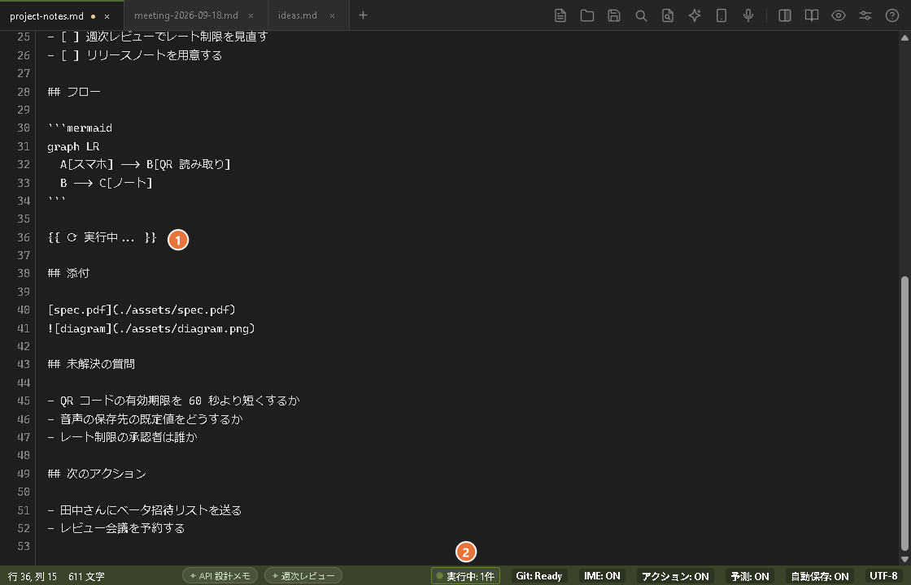
{{ }} が「実行中」の表示に置き換わり、ステータスバーにタスクのバッジが出ます- 実行中の表示 エージェントが作業している間、スロットの代わりに入っています。終わると結果に置き換わります（この表示の文字は、UIの言語にかかわらず日本語です）
- タスクのバッジ 実行中のエージェントタスクの数です。クリックか Alt + T で、タスクパネルが開きます
- 数秒で返ります
- 答えは対象の文の下に入ります
- 数分かけて、Web調査やファイル操作を行います
- その間もノートの編集を続けられます
{{ }} だけ覚えてください
記法は他にもあります（エージェントを名前で呼ぶ {{ @名前 指示 }} や、LLM・コマンド向けの [[ ]]）。迷ったら {{ }} に日本語で書けば動きます。
使い方の手順
{{と入力するカーソルの真下にクイックセレクターが開き、使える記法が並びます（記法のあとに、ひな形も並びます）- 記法を選ぶ↑ ↓ で選び、Tab か Enter で確定。1〜9 なら一発で確定。Esc で閉じます
- 指示を書く
{{ code:…}}が挿入され、カーソルは指示を書く位置に入ります - Ctrl + Enter で実行するmacOS: Cmd + Enter。小さな 実行 ボタン（再生の三角のアイコン付き）をクリックしても実行できます
{{ code: このプロジェクトの設定ファイルを読み込むGo関数を書いて }}
[? 2025年のGoのリリースサイクルと最新の安定版は？ ]制限・詳しい仕様（実行キーの挙動・入力の補正）
- 実行するスロットの決まり方: カーソルが
{{ }}などのブロックの中にあれば、Ctrl + Enter はそのスロットを実行します。ブロックの外では、自動セレクターが行の内容を見て動きます。カーソルより後ろにある次のスロットを実行し、それもなければノートの最初のスロットを実行する、という従来の動きになるのは、自動判定がオフのときと、行が空白のときだけです。コードブロックの中では、何も起きません。 - 見つからないとき: 従来の動きになる場面で、ノートにスロットがひとつもないと、ステータスバーに「実行できるスロットが見つかりません（カーソルを {{ }} などのブロック内に置いてください）」と数秒間表示されます。ノートの内容は変わりません。
- 実行中のとき: そのスロットがすでに実行中なら、「このスロットはすでに実行中です」と表示されます。
- 実行ボタン: 再生の三角のアイコンが付いた小さなボタンです。カーソルが、まだ実行していない完結したブロックの中にあると、そのブロックの横に現れます（ホバー時の表示: 「このスロットを実行 (Ctrl+Enter)」。macOS では Cmd+Enter）。押すと、Ctrl + Enter と同じ動きをします。
[[ @llm ]]・[[ $ ]]・{{ @エージェント名 }}のタスクでは、指示行の右に出ます（実行中は出ません）。 - クイックセレクター: そのまま文章を打ち続けても、自動的に消えます。
- 日本語入力のとき:
｛｛や【？と打ってしまっても、自動的に半角の記号へ直されます。 - 誤実行しません: コードブロック・インラインコード・Markdownリンク・URLの中に書かれた記号はスロットとして扱われないため、コード例の中に
{{ }}が出てきても実行されません。
既定の記法一覧
| 記法 | プロファイル名 | 既定のエージェント | 用途 |
|---|---|---|---|
{{ ... }} |
code | claude-code | コード生成。前置きを省き、そのまま動くコードブロックだけを返します。 |
[? ... ] |
research | claude-code | 調査。Web検索を行い、数値と一次ソースURLを添えて簡潔に回答します。 |
【? ... 】 |
writing | hermes | 文章整形。外部通信をせずローカルだけで、読みやすい日本語の箇条書きに整えます。 |
[! ... !] |
adversarial | claude-code | 批判的レビュー。リスク・脆弱性・ボトルネックを3点指摘します。 |
[>> ... ] |
deep-research-and-code（レシピ） | 既定エージェント | 多段実行。調査 → リスク反証 → 実装コード生成を順番に進めます。 |
- 記法ごとに、呼び出すエージェントと前提の指示（システム指示）が決まっています。同じ文章でも、返ってくる形が変わります。
- どの記法も、先頭に役割名を書けます（例:
{{ research: 調べたいこと }}）。この名前は、タスクパネルに表示されるラベルになります。 {{ @エージェント名 指示 }}（@claude、@cc、@geminiなどの別名も使えます）と書くと、そのエージェントに直接頼めます。この形では、指示行が残り、結果が下の結果ブロックに入ります。書き方の詳細は 自動セレクター をご覧ください。- プロジェクト内に
skills/<名前>/SKILL.mdがあれば、{{ @skill-name: 指示 }}と書いて、その内容を追加の指示としてエージェントへ渡せます。@名前は、まずエージェントの名前か別名として探し、なければスキル名として扱います。スキルが見つからないときは、スロットがエラー表示に置き換わります。
実行中の様子とタスクパネル (Alt+T)
実行を開始すると、スロットはその場で {{ ⟳ 実行中... }} に置き換わります（{{ @名前 }} と [[ ]] のタスクは、指示行の下に実行中の目印が入ります）。エージェントはバックグラウンドで動くので、ほかの場所を編集したり、別のスロットを同時に走らせたりできます。
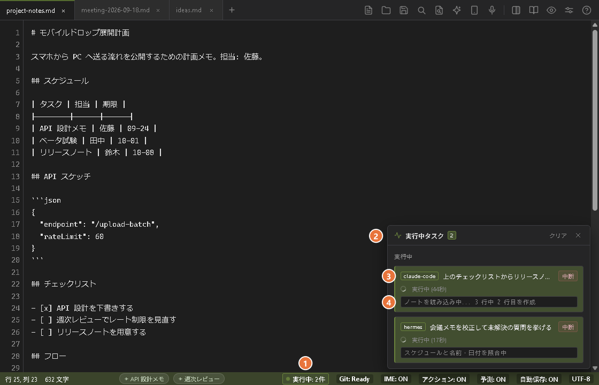
- タスクのバッジ ステータスバーにあります。クリックか Alt + T でパネルが開きます
- パネルの見出し 実行中のタスクの数です。消去ボタンで履歴を空にします
- 実行中のタスク エージェント名・指示・経過時間・中断ボタンが並びます
- ライブ出力 エージェントの最新の出力（Hover Peek）が、実行中は更新され続けます
- タスクパネル: Alt + T（macOS: Option + T）、または画面下のステータスバーの「実行中」表示をクリックすると開きます。実行中のタスクと直近の履歴が一覧できます。
- 途中経過（Hover Peek）: 各タスクカードに、エージェントが出力した最新の1行が1秒ごとに更新されて表示されます。止まっているのか進んでいるのかがひと目で分かります。
- 中断: タスクカードの「中断」ボタンでプロセスを終了できます。スロットは元の指示文に戻ります（いま別のノートを開いていても、実行を始めたノートで戻ります）。
{{ @名前 }}と[[ ]]のタスクでは、実行中の目印が消えます（指示行は残ります）。実行中の表示をノートの中で書き換えてしまった場合は、ノートには手を付けず、ステータスバーにその旨と指示文を表示します。 - LLM・コマンドのタスク: タスクパネルには、エージェントのほかに、AIへの質問（Ctrl + L）と
[[ @llm ]]のタスク（名前は「LLM」）、[[ $ ]]のタスク（名前は「コマンド」）も並びます。 - タイムアウト: 既定は180秒で、超えるとスロットにタイムアウトのメッセージが入ります。設定 → 連携 の「エージェント（任せる）」で10〜600秒に変更できます。ただし
agents.yamlがすでにある場合（「agents.yaml を開く」で作られた場合も）は、ファイルの値のほうが優先されます。
結果の差し込みは、あなたが約0.5秒タイピングを止めるまで待ってから行われます。入力中に横から書き換えられて、カーソルが飛ぶことはありません。
結果の受け取りと取り消し
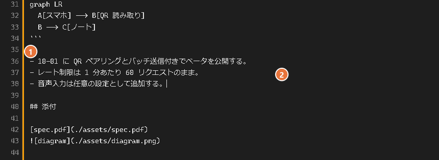
- 左端の琥珀色の線 エージェントの結果でノートが書き換わった目印です。設定した時間がたつと消えます
- 差し込まれたテキスト スロットの代わりに入った、エージェントの結果です。ハイライトの時間内に Esc を押すと、元のスロットに戻ります
- Ghost Diff（左端の線）: 結果が差し込まれた直後、エディタの左端に太さ3pxの琥珀色の線が出ます。線はエディタの高さいっぱいに出るので、変更された行だけに付くわけではありません。
- 表示時間: 設定 → 連携 の「変更箇所のハイライト時間 (ミリ秒)（Ghost Diff）」（既定4000ms、1000〜10000）で変えられます。時間が過ぎると線は消えます。
- 取り消し: この間（設定した時間 + 1秒）に Esc を押すと、そのスロットだけが元の指示文に戻ります。Ctrl + Z でも、直前のスロット実行を同じように取り消せます。
- 1行に収める: 文章の途中に埋め込んだスロット（同じ行に他の文字がある場合）は、結果の改行が取り除かれて1行に収まります。
承認ゲート（レシピの途中確認）
[>> ... ] のようなレシピは、複数のステップを順番に実行します。危険な操作の手前で人間の確認を挟みたいときは、レシピに requires_approval_step を設定します。そのステップの後で実行が一時停止し、ノートに次のような行が挿入されます。
- [ ] 次のステップ（実装コードを生成する）を実行する // approve- 内容を確認する
[ ]を[x]に書き換えます - Ctrl + Enter を押す続きが実行されます。チェックを入れなければ、そこで止まったままです
エージェントCLIは別途インストールが必要です
MD-Memoはエージェント本体を同梱していません。claude、codex、ollama、agy などのコマンドを事前にインストールし、パスが通った状態にしておいてください。
エージェントを実行する前に、MD-Memo は agents.yaml の定義を確かめます。エージェント自身の権限確認を飛ばすフラグ（--dangerously-skip-permissions、--allow-dangerously-skip-permissions、--dangerously-bypass-approvals-and-sandbox、--yolo、--full-auto、--auto-approve）が付いている場合や、指示をコマンドとして実行してしまうシェルの場合（後述の append_instruction）は、エージェント名・フラグとその意味・コマンドラインを示すダイアログが出ます。実行で開始し、そのエージェントのコマンドラインが変わるまでは再び確認しません。キャンセル（最初に選ばれています。Esc でも同じ）なら何も実行せず、ノートもそのままです。
{{ }} スロット、{{ @エージェント }} の依頼、レシピ、自動セレクターの、どの経路で実行する場合も同じです。選択中のエージェントがこのような設定のときは、設定 → 連携にも警告が表示されます。確認は既知のフラグの一覧によるもので、サンドボックスではありません（エージェントは、そのCLIに許された操作をすべて行えます）。組み込みのエージェントには、このようなフラグは付いていません。
制限・詳しい仕様（エラー表示・作業ディレクトリと .env）
コマンドが見つからないと、スロットは次のようなエラー表示に置き換わります。原因を直したあと、同じスロットにカーソルを置いて Ctrl + Enter を押せば再実行できます。
{{ ⚠ エラー: エージェント起動失敗: ... (再試行: Ctrl+Enter) }}- 作業ディレクトリ: ノートのある場所から上へたどって見つかったプロジェクトルートです。
.md-memo/、agents.yaml（agents.yml/agents.jsonでも可）、AGENTS.md、skills/、.git/のいずれかがあるフォルダで、どれも見つからなければノートのあるフォルダです。 - .env: プロジェクトルートに
.envがあれば、その内容が環境変数としてエージェントへ渡されます（読み込まれるのはこのファイルだけです）。
agents.yaml で自分好みにする
記法もエージェントも、すべて agents.yaml で変更・追加できます。
- 「agents.yaml を開く」を押す設定 → 連携 の「エージェント（任せる）」にあります。ファイルがなければ、コメント付きの雛形が自動生成されて開きます
- 記法・エージェント・レシピを書き換えるUTF-8（BOMなし）で保存します
- 次のスロット実行から反映される構文エラーがあると、エラーは出ずに既定の設定に戻ります。記法（
slot_profiles/recipes）や、別名（aliases）・ひな形（snippets）を変えたときは、MD-Memoを再起動してください（{{の一覧・パレット・短縮語の展開が新しくなります。{{ @別名 }}の実行とコマンドバーの候補は、再起動しなくても新しい内容になります）
読み込まれる場所は、上から順に最初に見つかったものです（.yaml / .yml / .md / .json のいずれでも構いません）。
<スクラップフォルダ>/.md-memo/agents.yaml（プロジェクトごとの設定）%APPDATA%\md-memo\agents.yaml（macOS:~/Library/Application Support/md-memo/agents.yaml）
v1.8.0 より後の組み込みエージェントの変更（手元の agents.yaml は書き換えません）
組み込みの定義（「agents.yaml を開く」が書き出す雛形も同じ）は、次のとおりです。
- claude-code:
claude -p "対象ノート: {file}\n指示: {instruction}"。以前は--file {file} --prompt {instruction}でしたが、Claude Code には--promptオプションがなく、--fileはfile_id:pathを受け取るため、指示が届いていませんでした。 - codex:
codex exec {instruction}。以前の--execute --file {file}は Codex CLI にないオプションでした。 - agy:
agy -p "対象ノート: {file}\n指示: {instruction}"。--dangerously-skip-permissionsを外しました。そのため、print モードでは尋ねられない権限が必要になると、agy が止まることがあります。以前の動作にしたい場合は、agents.yaml のargsにこのフラグを書き足してください。実行前に一度だけ確認します。
これらのコマンドラインは、メンテナーの環境では実行して確かめていません。codex exec と agy -p は各CLIの --help に載っている形で、Claude Code はその環境に入っていません。各CLIの --help で確認してください。Codex は Git リポジトリの外では動かないことがあり、そのための --skip-git-repo-check が --help に載っています。
すでにある agents.yaml は、そのまま使われます。以前の定義が残っている場合（以前のバージョンが書き出した雛形には含まれています）は、設定 → 連携に「確認が必要なエージェント定義」が表示され、起動の数秒後にステータスバーにも一度だけ表示されます。新しい定義をコピーで置き換え用の項目（キー・説明・別名はそのまま）がコピーされるので、agents.yaml を開いて古い項目と置き換えるか、項目を削除して組み込みの定義を使ってください。内容が変わるまで表示しないで、この表示を隠せます。指示をコマンドとして実行してしまうシェルのエージェントも、ここで警告されます。
設定例と書き方のルール
version: 2
default_agent: claude-code
timeout_seconds: 180
hover_peek_enabled: true
ghost_diff_duration_ms: 4000
# 1. 呼び出すCLIの定義。{instruction} は指示文、{file} はノートの絶対パスに置き換わります。
agents:
claude-code:
command: "claude"
args: ["-p", "対象ノート: {file}\n指示: {instruction}"]
description: "Claude Code"
my-agent:
command: "my-cli"
args: ["--prompt", "{instruction}"]
description: "社内用エージェント"
# 2. 記法とエージェントの対応。ここに書いた分だけが有効になります。
slot_profiles:
- trigger_open: "{{"
trigger_close: "}}"
name: "code"
agent: "claude-code"
system_instruction: "前置きを省き、そのまま動くコードブロックのみを出力してください。"
- trigger_open: "<<"
trigger_close: ">>"
name: "review"
agent: "my-agent"
system_instruction: "変更点をレビューし、指摘を箇条書きで返してください。"
# 3. 複数ステップをまとめて実行するレシピ。
recipes:
- trigger_open: "[>>"
trigger_close: "]"
name: "deep-research-and-code"
description: "調査 → リスク反証 → 実装"
steps:
- "最新の公式仕様とベストプラクティスを調査する"
- "移行リスクと破壊的変更を指摘する"
- "上記を踏まえて実装コードを生成する"
requires_approval_step: 2
self_refine: true- プレースホルダ:
{instruction}はスロットに書いた指示、{file}は現在のノートの絶対パスに置き換わります。{instruction}をどこにも書かなかった場合は、最後の引数として自動的に追加されます。追加したくないエージェント（{file}だけで動くもの）にはappend_instruction: falseと書きます。 - シェル: シェル（
powershell、pwsh、cmd、sh、bash、zsh、または引数に-Command、/c、-c）では、追加された指示がコマンドとして実行されます。append_instruction: falseを書くか、{instruction}を置く位置を自分で指定するまで、設定 → 連携に警告が表示され、実行前にも確認します。 - 記号の選び方:
trigger_open/trigger_closeには、Markdownの通常の記法（#、*、-など）とぶつからない組み合わせを選んでください。 - 上書きの挙動:
slot_profilesやrecipesを書くと、既定の記法は置き換わります。既定の4種類も残したい場合は、必要なものを書き写してください。一方agentsは、書かなかった既定のエージェント定義が（現在の組み込みの定義で）そのまま残り、書いたエージェントは書いたとおりに使われます。 - aliases: エージェントに
aliases: ["claude", "cc"]のように書くと、{{ @cc 指示 }}と短い名前で呼べます。書かなくても、claude-codeとagyには既定の別名が付きます。 - snippets: 末尾に
snippets:を書くと、自作のひな形が、{{のクイックセレクターやコマンドパレットの「タスクのひな形を挿入」に並びます。書き方は 自動セレクター の「ひな形」をご覧ください。 - self_refine:
trueにすると、レシピの最初のステップで「下書き → 自己批判 → 修正」を最大2回繰り返してから次へ進みます。 - ファイルは UTF-8（BOMなし）で保存してください。
提案｜アクション候補 (Ctrl+J)
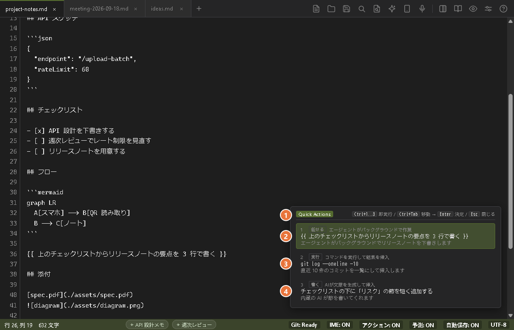
- パネルの見出し キーのヒントです。Ctrl+1〜3 で即実行、Ctrl+Tab で選択を移動、Enter で決定、Esc で閉じます
- 任せる バックグラウンドで動くエージェントに、作業を渡します
- 実行 コマンドを実行して、その出力を挿入します
- 書く 内蔵のAIが文章を書いて、挿入します
カードは、性質の異なる候補になるよう選ばれます。選ぶだけで、その動詞の入口へそのままつながります。
{{ … }}や[? … ]のスロットを挿入して、エージェントへ渡します
git statusのようなシェルコマンドを走らせます
- AIに文章を作らせます
- Jev 以外の外部モデル（OpenRouter のチャットモデルや自前の
/predictサーバー）を設定したときだけ出ます
内蔵のローカル規則（既定）では「任せる」と「実行」のカードが出て、並びは「任せる／実行／任せる」になることが多くなります。
Jev を設定したとき: 出るカードは内蔵のものと同じで、いまのメモに合うものを Jev が選んで上位に並べます。Jev が文章を書くことはありません。設定のしかたと送信先は、下の「送信されるデータ」にあります。
シェルコマンドを実行する候補は、実行前に必ず安全性チェックを通ります。rm や dd、mkfs といった破壊的コマンド、システム重要ディレクトリへの書き込み、フォーク爆弾などを検出すると、候補は実行されずに理由が表示されます。既知の危険パターンを対象とした防御なので、最終的な確認はご自身で行ってください。
制限・詳しい仕様（パネルの挙動・自動提示・バッジ）
- ヒント行: パネルが開いている間は、「Ctrl+1..3 即実行 / Ctrl+Tab 移動 → Enter 決定 / Esc 閉じる」が表示されます。
- Enter だけを押したとき: Ctrl + Tab で選択を動かさないまま Enter を押すと、ただの改行になります（候補は実行されず、パネルは閉じます）。
- 書くことの邪魔になりません: 数字キーだけ・Tab だけ・Ctrl + Enter（自動セレクターとスロットの実行に使われます）は、パネルに横取りされません。
- 自動提示: Ctrl + J で呼び出すほか、入力が一定時間止まったときに自動で提示できます（既定で有効）。気になる場合は、設定 → 連携 の「提案（アクション候補）」で「手動呼び出しのみ」を選びます。待機時間の長さもそこで調整できます。
- キーの変更: ショートカットキー自体は、設定 → ショートカット から自由に変更できます。
- ステータスバーのバッジ: 「アクション」バッジが現在のモードを表し、クリックするたびに ON → 手動 → OFF → ON と切り替わります。表示は「アクション: ON」「アクション: Ctrl+J」（設定したキー。macOS では Cmd+J）「アクション: OFF」のいずれかです。設定 → 連携 → 提案（アクション候補）の2つのチェックボックスと連動しており、OFF の間は Ctrl + J を押しても何も起こりません。
- 出力のないコマンド: 「実行」カード（
shカード）のコマンドが成功して何も出力しなかったときは、> (出力なし)が挿入されます。実行されたことが分かるようにするためで、これはアクション候補だけの動作です（コマンドバーは、結果のタブに「(no output)」と表示します）。この挿入文字列は、英語版・日本語版どちらのビルドでも日本語のままです。 - 作業ディレクトリ: 「実行」カードのコマンドは、MD-Memoアプリ自身の作業ディレクトリで実行されます。たとえば
git status -sは、MD-Memoを起動したフォルダの状態を返します。
制限・詳しい仕様（送信されるデータと Jev の使い方）
- 既定では、内蔵のローカル規則だけで候補を出します。ノートの内容は外部に送信されません。
- 送信されるのは、下のどれかを設定した場合だけです。
- OpenRouter 経由の Jev: Base URL とモデル名を既定のまま（
https://openrouter.ai/api/v1、jev-latest）にして、OpenRouter の API キー（sk-or-v1-…）を入力します。送信先はhttps://openrouter.ai/api/v1/systemoneに固定です。 - TypeSafe の Jev: Base URL を
https://api.typesafe.aiにして、TypeSafe の API キーを入力します。送信先はhttps://api.typesafe.ai/v1/systemoneです。 - OpenRouter のチャットモデル: モデル名を Jev 以外（例:
google/gemini-…）にして OpenRouter のキーを入力します。候補の文面をそのモデルに書かせます（送信先は OpenRouter のchat/completions）。 - 自前のサーバー: Base URL を上のどれでもない URL にすると、
<Base URL>/predictへ送られます。 - キー欄は1つなので、キーの種類は Base URL とキーの形（OpenRouter のキーは
sk-or-で始まります）で判断します。TypeSafe のキーを OpenRouter 用の Base URL のまま入れても、どこにも送られず、内蔵の候補になります。 - Jev は文章を書きません。内蔵の候補をすべて並べて「いまのメモに最も合うのはどれか」を1回だけ尋ね、その答えで並べ替えます。出るのは内蔵の候補だけです。
- Jev が答えられなかったとき（キーの誤り、残高不足、通信エラー、5秒の待ち時間切れ、確信が低いとき）は、内蔵ルールの候補に戻ります。そのキーを別のサービスへ送り直すことはありません。
- 送られるのはキャレット周辺の抜粋で、キャレットの前が最大1,500文字、後ろが最大500文字（合計約2,000文字）です。メモが空のときは送りません。
- Base URL とモデル名の欄には
https://openrouter.ai/api/v1とjev-latestがあらかじめ入力されていますが、API キーが空のままなら外部には送られません。 - 安全性チェックの正体は AST ガードレールです。内部名称の意味は 用語集 にまとめています。
エディタ & スプリット表示 (Ctrl+\)
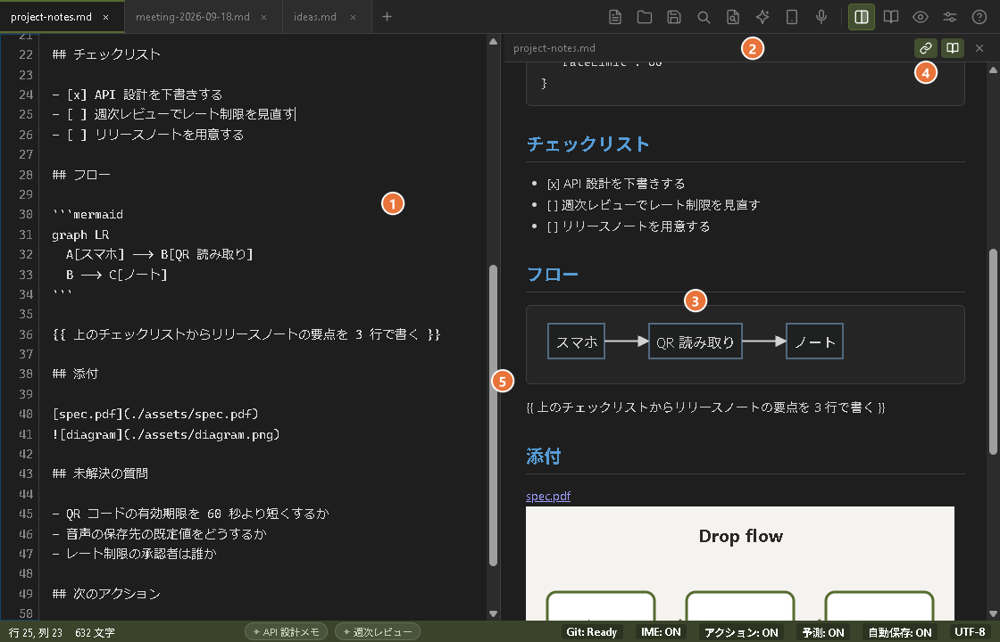
- エディタ Markdownの元のテキストです
- プレビューの見出し ノート名と、ペインのボタンが並びます
- Mermaidの図 ノートのコードブロックから描画された図です
- スクロール同期 左右を一緒にスクロールするかを切り替えます
- 境界線 ドラッグで幅を変え、ダブルクリックで50:50に戻します
- 2ペインに切り替えるヘッダーの分割アイコン、または Ctrl + \（macOS: Cmd + \）
- 右ペインをプレビューにする右ペインのプレビューアイコンで、リアルタイムHTMLレンダリングを表示します
- スクロールは連動します片方をスクロールすると、もう片方も追従します
プレビューだけを横に開くコマンドは Ctrl + Alt + V（macOS: Cmd + Option + V）です。
行をコメントにする (Ctrl+/)
<!-- -->) で隠し、同じキーで元に戻します。隠した文字はプレビューに出ず、コメントの中のタスクやスロットは実行されません。 Ctrl + / 設定不要- 行にカーソルを置くか、行を選択する選択範囲がかかる行がすべて対象です。行の先頭ちょうどで終わる選択では、その行は含みません
- Ctrl + / を押す（macOS: Cmd + /）各行が
<!-- 行 -->になります。字下げは前に残ります。- 項目は<!-- - 項目 -->になります - もう一度押すどの行もすでに 1 行のコメントなら、コメントを外します。1 回の操作が 1 回の元に戻す (Ctrl + Z) です
- まとめて 1 つのコメントにする: 設定 → 一般 →「コメントの切り替えで書く形」を「複数行をまとめて 1 つのコメント」にすると、最初の行の前に
<!--、最後の行の後ろに-->を書きます。同じキーで、そのコメントを外します。 - そのままにする行: 空の行、実行結果のマーカー (
<!-- md-memo:... -->)、すでに-->を含む行（コメントがそこで終わってしまうため）、複数行にわたるコメントの一部の行です。ステータスバーに行番号を表示します。ノートの前の方に閉じていない<!--があるとき（新しい-->がそれを閉じて、間をすべて隠してしまうため）と、行がコードブロックの中にあるとき（そこでは<!--はただの文字）は、メッセージを出して何も変えません。 - コメントにしたタスクは実行されません: コメントの中の
[[ @llm ]]、[[ $ ]]、{{ @agent }}、{{ }}形式のスロット、レシピの承認ゲートは、Ctrl + Enter、実行ボタン、スロットの解析のどれからも無視されます。カーソルがコメントの中にあるときの Ctrl + Enter は何もせず（ほかのスロットを代わりに実行することもありません）、ステータスバーにそう表示します。 - プレビューはコメントを表示しません: コメントだけの行は、前後の段落を分けずに消えます。コードブロックやインラインコードの中の
<!--はコードなので、そのまま表示します。
ファイルリンク & ドラッグ&ドロップ
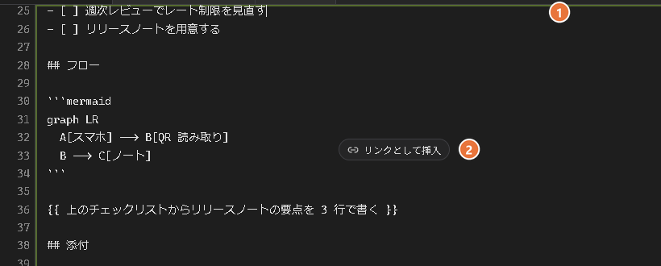
- 明滅する枠 エディタが、ドラッグ中のファイルのドロップ先になっています
- 「リンクとして挿入」のバッジ ドロップすると、ファイルへのMarkdownリンクが入ります。パスで参照できないファイルは、先にノートの assets フォルダへコピーされます
- ファイルをドラッグするエディタの上に運ぶと、枠が明滅して「リンクとして挿入」のバッジが出ます
- 文章の上でドロップするタブバーやヘッダー部分にドロップすると、これまで通り新しいタブとして開きます
- リンクが入るカーソル位置に、画像は
、それ以外は[name](...)。複数ファイルなら1行に1リンクずつ入ります
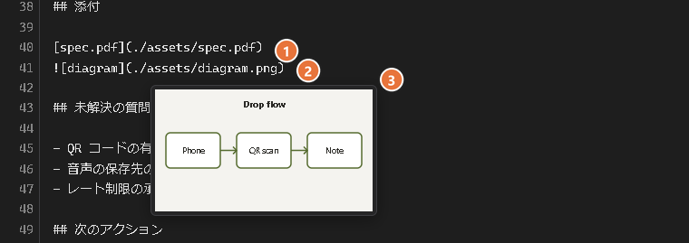
- ファイルのリンク Ctrl+クリックで開き、Alt+クリックでファイルの場所を表示します
- 画像のリンク 0.3秒カーソルを重ねると、サムネイルが出ます
- サムネイル リンク先の画像のプレビューです
エディタでは、リンクはすべて下線で示されます。対象は、Markdownのリンク [文字](...)、画像 （点線。カーソルを重ねるとプレビューも出るためです）、そのまま書いた http:// や https:// のアドレスです。色は、テーマのアクセントカラーを少し明るくしたものです。プレビュー表示は、これまでと変わりません。
Ctrl（macOS: Cmd）や Alt（macOS: Option）を押している間は、ポインタの下のリンクが太くなり、ポインタが手の形になります。0.3秒ほど重ね続けると、ヒントが出ます。ファイルやフォルダのリンクには「Ctrl+クリックで開く / Alt+クリックで場所を表示」、Webのアドレスには「Ctrl+クリックでブラウザで開く」と表示されます。
制限・詳しい仕様
- コピーして取り込みます: 組み込みブラウザではドロップされたファイルの元のパスを取得できません。そのためMD-Memoは、ファイル（1件あたり最大25MB）をメモの隣の
./assets/にコピーし、相対パスでリンクします。元のファイルの場所は記録されません。 - リンクの書式: リンク中のスペースと括弧はパーセントエンコード（
%20、%28、%29）され、Markdownとして正しく保たれます。Ctrl + クリックで開く動作には影響しません。 - 開けるリンク: エディタから Ctrl + クリック で開けるのは、
http://とhttps://のアドレス（ブラウザで開きます）、file://リンク、絶対パス、メモからの相対パス（既定のアプリで開きます）です。mailto:やjavascript:など、ほかの形式のリンクには下線が付かず、エディタからは開けません。 - 下線の更新: 下線は、入力が止まったときに引き直されます。
- 大きなノート: 10万文字を超えるノートでは、下線は付きません。Ctrl + クリックでは、そのまま開けます。
- macOS: 下線と Cmd + クリックは、Windows と同じ動作になる想定です。ただし、macOS の実機での確認は、まだ済んでいません。
クイックキャプチャ (Windows)
macOS にはクイックキャプチャがありません。macOS では、ツールバーのボタンも、設定 → ショートカット の項目も表示されません。
ポップアップは、いつも一番手前に出る小さなバーです。暗い色で角が丸く、少し透けています（不透明度は約85%）。入力欄が1つと、ボタンが3つ（Send・AI Send・Capture）並びます。ボタンの文字は、表示言語が日本語でも英語のままです。Send ボタンの色は、選んでいるテーマのアクセントカラーになります。
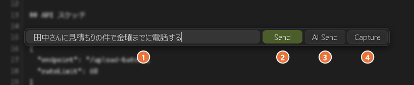
- 入力欄 ここにメモを書きます。空のまま送ると、クリップボードの文字を送ります
- Send 書いたとおりに追記します（Enter）
- AI Send AIで先に校正してから追記します（Ctrl + Enter）
- Capture 画面キャプチャを始めます（Ctrl + Shift + Enter）
- ポップアップを開くCtrl + Shift + Q を押します。どのアプリを使っている最中でも開きます
- ひとこと書く入力欄に、書き留めたいことを打ちます
- Enter で送る入力した文章が今日のスクラップに追記されて、ポップアップは閉じます
ポップアップを開く4つの方法
3つのボタンと、ポップアップの中で使えるキー
| ボタン | キー | 何が起きるか |
|---|---|---|
| Send | Enter | 入力した文章を、入力したとおりに今日のスクラップへ追記します。 |
| AI Send | Ctrl + Enter | エディタの Alt + C と同じ AI 校正を通してから追記します。待っている間、ボタンは「Working...」になります。使うのは、設定 → AIモデル のテキストモデルです。 |
| Capture | Ctrl + Shift + Enter | 画面のウィンドウや範囲を撮って、画像の中の文字を読み取ります。詳しくは 画面キャプチャ をご覧ください。 |
| （ボタンなし） | Esc | ポップアップを閉じます。 |
Send と AI Send は、入力欄が空のとき、クリップボードの文字を代わりに使います。日本語入力の変換中は、Enter と Esc を先に IME が使います。
どのウィンドウから書いたかも残せます
ホットキーで開いて AI Send で送ると、追記される文章の先頭に、直前まで使っていたウィンドウの名前が、次のような1行で付きます。
> [context: ウィンドウのタイトル]
書いた文章ツールバー・トレイ・コマンドパレットから開いたときは、この1行は付きません。手前にあるウィンドウが MD-Memo 自身だからです。Send（Enter）で送る文章にも付きません。
ホットキーを変える・止める
- 設定 → ショートカット の「表示・画面」グループにある「クイックキャプチャ (グローバル・メモ入力ポップアップ)」で変えます。既定は Ctrl + Shift + Q です。
- キーを空にすると、ホットキーは無効になります。ツールバー・トレイ・コマンドパレットからは、そのまま開けます。
- ほかのプログラムがすでに使っている組み合わせは、登録できません。メッセージが出て、前のキーのままになります。
制限・詳しい仕様（保存先・自動で閉じる・AI校正が使えないとき）
- 保存先:
<スクラップフォルダ>/YYYY-MM-DD.mdに追記されます（スクラップフォルダの既定は~/Documents/md-memo/scraps）。追記のたびに、前の内容とのあいだに空行が入ります。そのノートを開いていれば、すぐに表示が更新されます。 - 自動で閉じる: ポップアップは、フォーカスを失って1秒たつと、自分で閉じます。1秒以内にフォーカスが戻れば、そのまま残ります。
- AI Send の途中で閉じても: 「Working...」の間にポップアップを閉じても、メモは失われず、校正が終わったあとに追記されます。
- AI校正が使えないとき: AI校正がオフのとき（設定 → 一般）や、テキストモデルが未設定のときは、入力したとおりに追記します。
- 使えるとき: ホットキーは、MD-Memo が動いている間だけ効きます。ウィンドウを閉じてトレイに常駐している間も使えますが、完全に終了しているときは使えません。
画面キャプチャ (Windows)
macOS 版はまだありません。macOS では使えません。
- ポップアップを開くCtrl + Shift + Q で クイックキャプチャ を開きます。説明を添えたいときは、入力欄に先に書いておきます（その文章が、追記される見出しの下に入ります）
- Capture を押すポップアップの Capture ボタン、または Ctrl + Shift + Enter です。ポップアップが閉じて、画面が少し暗くなります
- 撮りたいところを選ぶウィンドウにマウスを重ねると緑の枠が出ます。クリックで、そのウィンドウを撮ります。ドラッグして離すと、囲んだ範囲を撮ります
- 少し待つ画像の中の文字を読み取っています（数秒）。読み取りの進み具合は、画面には出ません
- ノートを見る画像と、読み取った文字が、今日のノートに追記されています
選んでいる間は、画面全体が少し暗くなり、マウスポインタが十字に変わります。メインのモニターの上には、操作のヒントの帯が出ます。選び終わるまで、画面の写真は撮られず、画面から何も読み取られません。
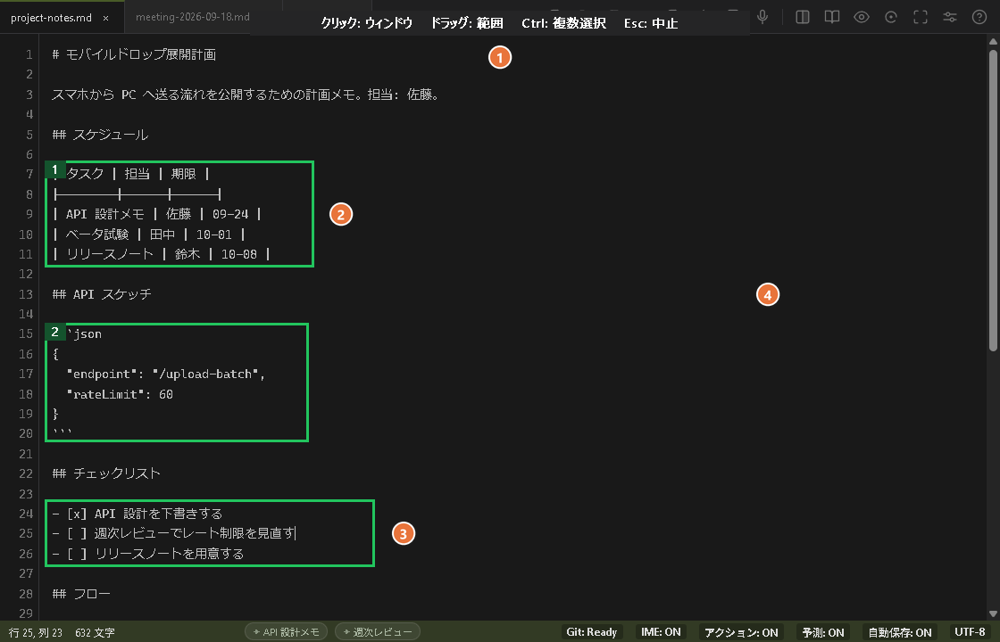
- ヒントバー 操作のキーです。クリックでウィンドウ、ドラッグで範囲、Ctrl で複数選択、Esc で中止
- 番号つきの緑の枠 ここまでに選んだものです。この順にキャプチャされます
- ドラッグ中の緑の枠 マウスを離すと、選んだものに加わります。Ctrl を離すと、まとめてキャプチャされます
- 暗くなった画面 選ぶまで、画面は読み取られません。Esc か右クリックで中止できます
選ぶときの操作
| 操作 | 何が起きるか |
|---|---|
| ウィンドウの上にマウスを重ねる | そのウィンドウに緑の枠が出ます。 |
| クリック | そのウィンドウを撮ります。 |
| ドラッグして離す | 緑の四角が動いてついてきます。離すと、その範囲を撮ります。 |
| Ctrl を押したままクリック・ドラッグ | 複数のウィンドウや範囲を集められます。選ぶたびに番号のバッジが付きます。Ctrl を離すと、まとめて撮ります。選んだウィンドウをもう一度 Ctrl + クリックすると、選びから外れます。 |
| Esc または右クリック | 中止します。何も保存されません。 |
| 何もしないで2分たつ | 自動で中止します。 |
ノートに入るもの
撮るたびに、1つのまとまりが今日のノートの末尾に追記されます。
**[18:12:15] 画面キャプチャ**
入力欄に書いた説明（あれば）
> [context: 直前まで使っていたウィンドウ]
**1. ウィンドウのタイトル**

> 読み取った文字（1行ごとに「> 」が付きます）- 1行目の見出しは、表示言語にかかわらず「画面キャプチャ」です。
- 「context」の行は、ホットキーで開いたときだけ入ります。
- ウィンドウを撮ったときの小見出しは、そのウィンドウのタイトルです。エクスプローラーなら、フォルダのパス全体が入ります。範囲を撮ったときは「1. 選択範囲 (200×100)」のように、幅×高さが入ります。
- 複数を撮ったときは、選んだ順に、番号つきの小見出し・画像・読み取った文字が並びます。
- 文字を読み取れなかったときは、読み取った文字の代わりに
> (OCRでテキストを抽出できませんでした: 理由)という行が入ります。画像は、そのまま残ります。
既定では、撮った画像は、設定 → AIモデル の「画像解析 (Vision OCR)」で設定した画像モデル（Gemini など）に送られて、文字が読み取られます。送りたくないときは、設定 → 同期 の「ホットフォルダ（自動OCR・文字起こし）」にある「画像をこのPCの外に出さない」をオンにします。このPCの中だけで読み取ります（精度は下がります）。詳しくは ホットフォルダ をご覧ください。
制限・詳しい仕様（選べるもの・撮り方・保存・できないこと）
- 選べるウィンドウ: 画面に見えているトップレベルのウィンドウです。最小化されているもの、別の仮想デスクトップにあるもの、デスクトップの背景、24ピクセルに満たない小さなウィンドウ、クリックを通り抜ける透明なオーバーレイは、選べません。緑の枠は、ウィンドウの見える縁に合わせて表示され、見えないリサイズ用の余白は含みません。
- 撮り方: ほかのウィンドウに一部が隠れているウィンドウや、画面から一部がはみ出しているウィンドウは、ウィンドウそのものから撮ります（PrintWindow）。隠している側のウィンドウは写りません。それ以外のウィンドウと、ドラッグで囲んだ範囲は、画面から読み取ります。動画プレーヤーや保護された内容など、一部のアプリは、真っ黒に写ることがあります。
- 画像の保存: 撮った画像は、
<スクラップフォルダ>/assets/にYYYY-MM-DD-HHMMSS-cap<番号>.pngという名前の PNG で保存され、ノートからリンクされます。あとから開いて、ペイントなどで編集できます。 - 文字の読み取り: 選んだ順に、1枚ずつ読み取ります。使う方法は ホットフォルダ と同じです（クラウドの画像モデルが先、端末内OCRが予備。「画像をこのPCの外に出さない」がオンなら端末内OCRだけ）。画像は読み取りの前に保存されるので、読み取りに失敗しても画像は失われません。
- 長いタイトル: ウィンドウのタイトルは、400文字まで、そのまま残します。
- できないこと: Webページの中の、ある部分だけを選んで撮ることはできません（ブラウザの拡張機能が必要になるためです）。macOS 版もありません。
ホットフォルダ: 画像・音声をノートに
Windows と macOS で、使える範囲が少し違います。
| できること | Windows | macOS |
|---|---|---|
| フォルダの監視・画像の文字読み取り・音声の文字起こし | 使えます | 使えます |
| 画像を読み取る方法 | クラウドの画像モデルが先、端末内OCRが予備 | クラウドの画像モデルだけ |
| 「画像をこのPCの外に出さない」 | あります | 表示されません（端末内OCRがないため） |
| 音声を文字起こしする方法 | Gemini（既定）、または Whisper（このPC内・x64 のみ） | Gemini だけ（Whisper の欄には「Windows (x64) のみ対応しています」と出ます） |
| トレイメニューの「Open inbox folder」、エクスプローラーの「送る」 | あります | ありません（macOS にはトレイも「送る」もありません） |
| コマンドパレットの「受信フォルダを開く」 | あります（オンのとき） | あります（オンのとき） |
md-memo ocr コマンド |
使えます | 使えます（クラウドの画像モデルだけ） |
- オンにする設定 → 同期 タブの下のほうにある「ホットフォルダ（自動OCR・文字起こし）」で、「フォルダを監視し、画像はOCR・音声は文字起こしして今日のスクラップに追記する」にチェックを入れます（最初はオフです）
- フォルダを決める「監視するフォルダのパス」に入れます。既定は
~/Documents/md-memo/inboxです。「参照...」で選べます - ファイルを入れるそのフォルダに、画像か音声のファイルを入れます。書き込みが終わるのを待ってから、処理が始まります
- ノートに追記される読み取った文字や文字起こしが、今日のスクラップに追記されます。処理したファイルは、スクラップフォルダの
assetsに移されます
すでにフォルダに入っているファイルは、MD-Memo の起動時に1回だけ処理されます。そのあとは、入ってきたファイルを順に処理します。
ノートに入るもの
# 画像（.png .jpg .jpeg .bmp .gif .webp）
> 画像から読み取った文字（1行ごとに「> 」が付きます）

# 音声（.mp3 .wav .m4a .ogg .flac）
**[18:12:15]**
> 文字起こしされた文章
[会議.m4a](./assets/2026-09-24-181215-会議.m4a)- 処理したファイルは、移動されます（
<スクラップフォルダ>/assets/<日付-時刻>-<元の名前>）。削除はされません。読み取りや文字起こしに失敗したときも、ファイルは残ります。 - 失敗したときは、文章の代わりに、
> (OCRでテキストを抽出できませんでした: 理由)または> (文字起こしに失敗しました: 理由)という行が入ります。
画像は、どう読み取られるか
- 「画像解析 (Vision OCR)」で設定したクラウドの画像モデル（Gemini など）が、先に読み取ります。精度がとても高いです
- うまくいかなかったとき（APIキーがない・通信できない・エラー・文字が見つからない）は、Windows では、端末内OCRに切り替わります
- 端末内OCRだけで読み取ります。画像は、PC の外に出ません
- そのぶん、精度は下がります
- 同じ設定 → 同期 の「ホットフォルダ」の欄にあります。macOS では、この項目は表示されません
この設定は、ホットフォルダのほか、画面キャプチャ、エクスプローラーの「送る」、md-memo ocr コマンドにも効きます。Ctrl + V で貼り付けた画像の OCR（画像貼り付け OCR）は、画像解析で設定したモデルが読み取ります。この設定は関係しません。
音声は、どう文字起こしされるか
エンジンは、設定 → AIモデル の「音声認識エンジン(フォルダ監視・Discord)」（音声入力の設定の下）にある「エンジン:」で選びます。
- 音声はクラウドの Gemini に送られます
- 専用のAPIキーがなければ、画像解析 (Vision OCR) のAPIキーを引き継ぎます
- Windows と macOS で使えます
- 音声を PC の外に送らずに、PC の中で文字にします
- 最初に、必要な部品をダウンロードします（下の手順）
- macOS では使えません
このエンジンの選択が効くのは、ホットフォルダと Discord連携 だけです。画面での音声入力（音声入力、Ctrl + Shift + R）と Mobile Drop は、これまでどおり Gemini を使います。
フォルダをすばやく開く
- Windows: トレイアイコンを右クリックして、「Open inbox folder」を選びます（ホットフォルダがオンのときだけ表示されます。メニューの文字は英語です）。
- Windows と macOS: コマンドパレット（Ctrl + Shift + P）の「受信フォルダを開く」です（ホットフォルダがオンのときだけ表示されます）。
音声をこのPCの中だけで文字起こしする（Whisper・Windows x64 のみ）
Whisper は、音声をインターネットに送らずに、このPCの中で文字にするエンジンです。使うには、2つの部品を、必要なときに一度だけダウンロードします。
- エンジンを切り替える設定 → AIモデル の「音声認識エンジン(フォルダ監視・Discord)」で、「エンジン:」を「Whisper(このPC内・オフライン)」にします
- Whisper 本体をダウンロードする「Whisper 本体(実行ファイル)」の「ダウンロード」を押します（whisper.cpp、約9MB）
- モデルを選んでダウンロードする「モデル」の一覧から選び、「ダウンロード」を押します。最初に選ばれているのは、日本語に特化した kotoba-whisper の量子化版です
- 準備ができたことを確かめる「準備完了: 音声はこのPC内で文字起こしされます。」と出れば、完了です
2つの部品には、それぞれ「ダウンロード」「削除」「中止」のボタンと、進み具合の表示があります。ダウンロードを中止しても、次回は続きから再開します。部品は %LOCALAPPDATA%\md-memo\components に保存されます（設定画面の「保存先:」にも、正確な場所が出ます）。
| モデル | 大きさ | 特徴 |
|---|---|---|
| kotoba-whisper v2.0 量子化版（日本語特化・推奨） | 約513MB | 最初に選ばれているモデルです。フル精度版よりわずかに精度が落ちる代わりに、小さくて速いです。 |
| kotoba-whisper v2.0 フル精度版（日本語特化） | 約1.4GB | いちばん正確です。ディスクとメモリを多く使います。 |
| Whisper large-v3-turbo 量子化版（多言語） | 約547MB | 日本語以外も認識できます。日本語だけなら、kotoba のほうが得意です。 |
| Whisper small 量子化版（軽量） | 約181MB | 速くて小さいモデルです。固有名詞や早口は間違えやすいです。 |
| Whisper base（最軽量・低精度） | 約141MB | 動作確認向けです。実用の精度は低いです。 |
| カスタム | - | PC にある ggml 形式の .bin ファイルを指定するか、https のアドレスからダウンロードします。 |
Whisper の詳細（カスタムモデル・詳細設定・音声の変換）
- カスタム: PC上のモデルファイルを指定: 「参照...」でファイルを選びます。ダイアログで「すべてのファイル」を選ぶと
.binが表示されます。ggml 形式の Whisper モデルが必要です。 - カスタム: URL からダウンロード: 「モデルの URL(https)」に、モデルのアドレスを入れます。「SHA-256(任意)」も入れると、ダウンロードしたあとに照合します（おすすめです）。
- 詳細設定: 「言語」は、空欄で自動判定です（例:
ja、en）。「スレッド数」は、0 で自動です。「初期プロンプト」には、固有名詞や専門用語を入れると、認識が安定します。 - 「Whisper が失敗したら Gemini で再試行する(音声が外部に送信されます)」: 既定はオフです。オンにすると、Whisper が失敗したとき、または準備できていないときに、Gemini で文字起こしし直します。そのとき、音声はクラウドに送られます。
- 音声の形式: m4a や mp3 などの音声は、認識の前に、PC の中で変換されます。再試行の設定をオンにしない限り、音声は外部に送られません。
エクスプローラーの「送る」から、画像を読み取る（Windows のみ）
画像ファイルを右クリックして、その文字を今日のスクラップに追記できます。ウィンドウは開きません。macOS には、この機能はありません。
- 「送る」に追加する設定 → 連携 タブの「OS連携（送る）」で、「「送る」メニュー（画像→OCR）」の「追加」を押します。状態が「設置済み」になります（「解除」で元に戻せます）
- 画像を右クリックするエクスプローラーで画像ファイルを右クリックして、送る → MD-Memo (OCR) を選びます
- ノートに追記される読み取った文字が、今日のスクラップに追記されます
コマンドラインから、画像を読み取る: md-memo ocr
「送る」の中身は、md-memo ocr <画像のパス> というコマンドです。ターミナルから、そのまま使えます（Windows と macOS。macOS ではクラウドのOCRだけです）。画像解析 (Vision OCR) の設定と、スクラップフォルダは、config.json から読みます。ノートに追記されるのは、読み取った文字だけです。画像ファイルは、そのまま残ります。
md-memo ocr memo.png
# OCR text appended to C:\Users\me\Documents\md-memo\scraps\2026-09-24.md
# 文字が見つからなかったときは (no text recognized)
# JSON で受け取る（--json は画像のパスの前に付けます）
md-memo ocr --json memo.png出力をリダイレクトやパイプに流したときも、JSON になります。
制限・詳しい仕様（設定ファイルのキー）
- 設定ファイルのキーは、ホットフォルダが
inbox.enabled（オン / オフ）とinbox.dir（フォルダ）、「画像をこのPCの外に出さない」がvision.ocrMode（空 = 既定のクラウド優先、on-device= 端末内だけ）です。 - 音声のエンジンは
voice.engine（geminiが既定、whisper-local）です。Whisper の設定はvoice.whisperの中にあります。詳しくは AIモデル タブ の表をご覧ください。 - 音声の文字起こしに使うAPIキーとBase URLは、音声入力の設定が空のとき、画像解析 (Vision OCR) のものを使います。
Mermaid 図の自動描画 & 画像生成
```mermaid で書いた図は、プレビューにそのまま描画されます。高解像度のPNG画像として書き出すこともできます。```mermaidで記述したフローチャート、シーケンス図、ガントチャートが対象です- プレビュー画面で、リアルタイムに図としてレンダリングされます
- 図が見づらいときは、図の右上にある半分塗りの円のボタンで、ダークとライトを切り替えられます。ライトの図は白い背景に描かれます。選んだ配色は記憶されます
- 図の上で右クリックして「図の画像化...」を選びます
- Gemini（Nano Banana 2 Lite）と連携して、高解像度PNG画像としてエクスポートします
制限・詳しい仕様（画像化の設定）
- モデル・アスペクト比・解像度は、設定 → AIモデル の「画像生成」で選びます。
- Gemini APIキーの欄が空のときは、Visionのキー、次にテキストのキーの順に引き継がれます。
- 画像は
assets/diagram_<数字>.pngに保存され、が挿入されます。先にノートを保存しておくと、相対リンクになります。 - まだ保存していないノートにはフォルダがないので、リンクにはアプリ専用の
assetsフォルダのフルパスが入ります（macOS では~/Library/Application Support/md-memoの下）。パスの中の空白は%20と書かれ、プレビューが元のパスに戻して読み込みます。 - 図の配色: 各図のボタンでダークとライトを切り替えます。設定 → 一般 の「図 (Mermaid) の配色」では、グレーとグリーンも選べます（どちらも白い背景）。
高速並列スクラップ検索 (Ctrl+Shift+F)
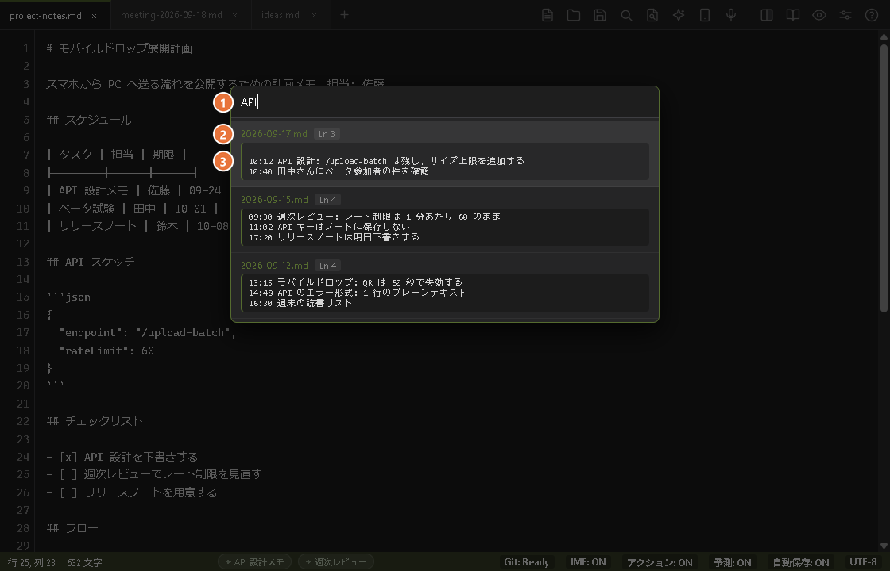
- 検索ボックス 入力するたびに、すべてのデイリースクラップを検索します
- ファイル名と行番号 一致した場所です
- 一致した行 前後の1行つきで表示されます。Enter かクリックで、その行を開き、Tab でその行をノートへ挿入します
- 検索モーダルを開くCtrl + Shift + F（macOS: Cmd + Shift + F）。選択していた文字、選択がなければカーソル直前の単語が、最初から検索ボックスに入り、すぐに検索されます
- 探したい単語を入力する過去のデイリースクラップを串刺しで検索します。最初の推測が違うときは、入力し直します
- 結果の行をクリックするその行へ一瞬でジャンプします（Enter でも同じです）
- または、その行を引用する結果の上で Tab（または Shift + Enter）を押すと、その行が、ノートのカーソル位置に挿入されます。ノートから離れません。選択範囲は、貼り付けのように置き換わり、Ctrl + Z で元に戻せます
制限・詳しい仕様
CPUの全コア（runtime.NumCPU()）を駆使した、マルチスレッド並列Grepで検索しています。
- 検索は1行ずつなので、複数行を選択していたときは、その最初の行で検索を始めます。
- カーソル直前の単語は、カーソルまでの行の最後の単語です。英数字の単語（
ESP32、foo/bar.go）か、カタカナと漢字のひと続きです。単語のあとの句読点や、ひらがなの助詞・語尾は読み飛ばすので、ESP32のピン配置なんだっけ？ならピン配置で検索を始めます。 - プレビューで選択した文字も対象です。Tab はエディタが見えているときだけ使えます。プレビューがエディタを覆っている間は、メッセージが出ます。
- 変換中（未確定）の Enter・Tab・矢印キーは、IME に任せます。
- Ctrl + F（ノート内の検索）も、エディタまたはプレビューで選択した文字から始まります。複数行なら最初の行です。
Mobile Drop｜スマホから送る (Ctrl+Shift+U)
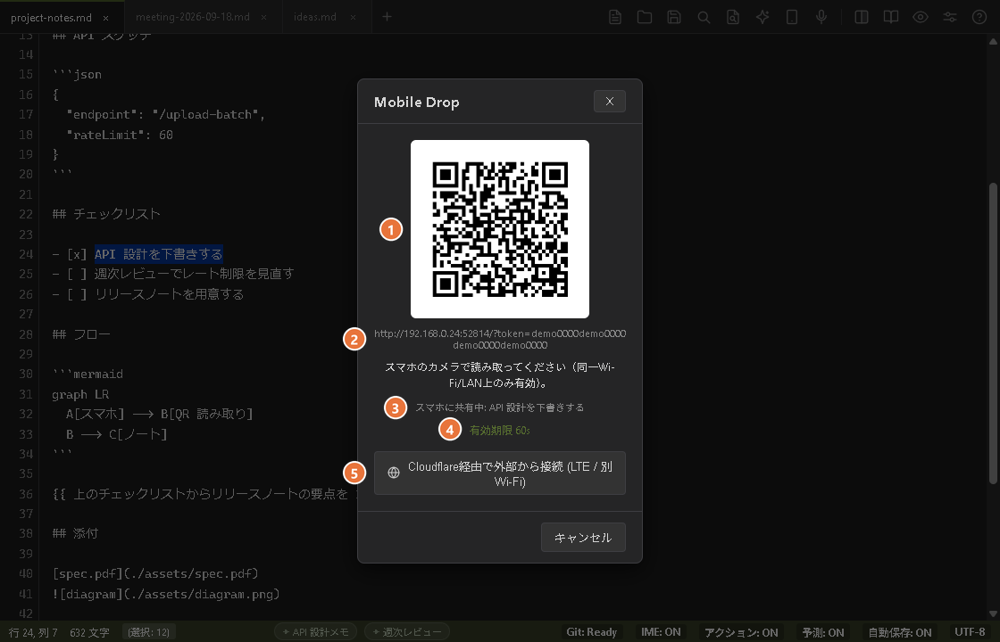
- QRコード スマホのカメラで読み取ります（スマホとPCは同じWi-Fi / LAN に）
- アドレス QRコードの先にある、使い捨てのアドレスです
- スマホに共有中 エディタで選択中のテキストが、スマホに表示されます（「PCからのテキスト」カード）
- カウントダウン 操作がないときのタイムアウトまでの時間です。0になるとダイアログが閉じ、アドレスは使えなくなります（スマホでの操作があると延びます）
- 外部接続への切り替え LTEや別のWi-Fiから使うための、Cloudflareトンネルへのスイッチです（任意）
- ダイアログを開くツールバーのスマホアイコン、Ctrl + Shift + U（macOS: Cmd + Shift + U）、またはコマンドパレットの「Mobile Drop」
- スマホのカメラでQRコードを読み取るスマホはPCと同じWi-Fi（同一LAN）に。コードの下にアドレスも文字で表示されるので、手入力もできます
- 送信トレイに追加する写真・ファイル（最大10件、合計60MBまで）、ボイスメモ、テキストを、好きな組み合わせで
- 「まとめてPCへ送信」を押す1つだけのボタンです。アップロードの進捗が表示されます
- メモに追記されるダイアログが閉じ、アクティブなメモの末尾に追記されます。見出しは項目ごとに
## Mobile Drop [14:20:05] — <ファイル名>
スマホに開くページ
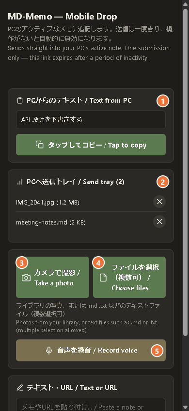
- PCからのテキスト PCで選択中のテキストです。下のボタンで、スマホにコピーできます
- PCへ送信トレイ ここまでに追加した項目（写真とメモのファイル）です。✕ で取り除きます
- カメラで撮影 スマホのカメラで写真を撮ります
- ファイルを選択（複数可） スマホから写真やテキストファイルを選びます
- 音声を録音 スマホの録音アプリが開きます。録音はトレイに追加され、PC側で文字起こしされます
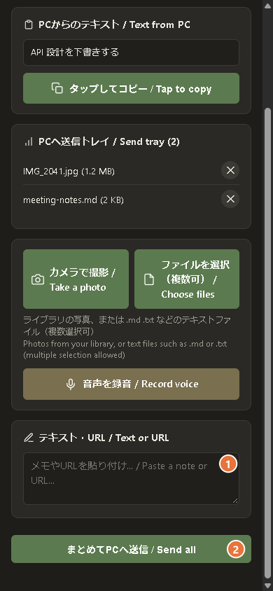
- テキスト・URL 欄 メモやリンクを貼り付けて、テキストとして送ります
- まとめてPCへ送信 トレイとテキストを、PCのアクティブなメモへ一度に送ります（1回のセッションで送れるのは1回です）
| スマホのボタン | メモに入る内容 |
|---|---|
| 写真・ファイル | 写真はビジョンモデルでMarkdownに文字起こしされます。.md と .txt はそのまま、.html・.js・.json・.py などのコードや設定ファイルはコードブロックで囲んで追記します。Shift_JIS のテキストは自動で変換します。 |
| ボイスメモ | 音声入力と同じ方法で文字起こしされ、テキストとして追記されます。 |
| テキスト・URL | 入力・貼り付けた文字をそのまま追記します。URLだけの場合はMarkdownリンクになります。 |
写真とボイスメモの行き先
- 写真: Ctrl + V の画像OCRと同じビジョンモデル（設定 → AIモデル → 画像解析）が、Markdownに文字起こしします。写真そのものは保存されません
- ボイスメモ: 音声入力と同じ方法（同じGeminiモデル）で文字起こしされ、テキストとして追記されます
- ローカル（OllamaやLM Studio）のビジョンモデルなら、キーなしでもOCRされます
- キーがない・モデルが非対応・文字起こしが空・HTTPエラー・タイムアウトのどれでも、写真とボイスメモは失われません
- Ctrl + Shift + V で画像を貼ったときと同じように
./assets/に保存され、リンクと理由の1行が入ります - 何件そうなったかは、トーストで知らせます
制限・詳しい仕様（保存されるときの行と保存先）
保存されるときにノートへ入る行は、状況によって次の4通りです。この行は、UIの言語にかかわらず日本語です。
| 状況 | 写真 | ボイスメモ |
|---|---|---|
| 何も設定されていない |  と > 画像OCRをスキップし、画像として保存しました: <エラー> (設定 → AIモデル → 画像解析) |
[name](./assets/...) と > 文字起こしをスキップし、音声として保存しました: <エラー> (設定 → AIモデル → 音声入力) |
| そのほかの失敗 | > 画像OCRに失敗したため、画像として保存しました: <エラー> |
> 文字起こしに失敗したため、音声として保存しました: <エラー> |
- 保存先:
./assets/YYYY-MM-DD-HHmmss.<拡張子>です。メモの隣、なければワークスペースフォルダ、それもなければアプリのデータフォルダ（この場合はfile://リンク）に保存されます。名前が重複すると-2、-3が付きます。 - 保存にも失敗したとき: assets への保存まで失敗した場合だけ、その項目の見出しに続けて
[Mobile Drop: <ファイル名> の処理に失敗しました: <エラー>]が追記されます。残りの項目は問題なく届きます。
制限・詳しい仕様（送れるものと上限）
- 写真・ファイルは最大10件、合計60MBまでです。
- 1件あたりの上限は、画像20MB、音声25MB、テキストファイル2MBです。それ以外のバイナリは受け付けません。
制限・詳しい仕様（スマホのページと「PCからのテキスト」）
- ページの並び: 上から順に、「PCからのテキスト」カード、「PCへ送信トレイ」（追加した項目ごとに名前・サイズ・削除用の
✕が表示されます）、カメラ／ファイル選択（複数可）／ボイス録音、テキスト入力欄です。送信ボタンは1つだけです。 - 「PCからのテキスト」: PCで選択中のテキスト（ダイアログを開いた時点で選択がなければ、クリップボードのテキスト）が、ワンタップコピー付きで表示されます。2秒ごとに更新され、最大64KBまで表示します。
- PC側の表示: ダイアログには「スマホに共有中: ...」として、80文字に切り詰めて表示されます。
つなぎ方を選ぶ
- スマホとPCが同じネットワークにいる必要があります
- 通信は、そのネットワークの外に出ません
- ボイスメモは、スマホ本体の録音アプリが開きます
- 位置情報は、要求も添付もしません
- ダイアログの「Cloudflare経由で外部から接続」を押します
- アカウント不要の Cloudflare Quick Tunnel を開き、QRコードが一時的な
https://…trycloudflare.comのアドレスに切り替わります - ボイスメモは、ページ内でそのまま録音できます（HTTPS）
- 位置情報は、任意で1回だけ添付できます
- 送信内容は Cloudflare のサーバーを経由します
制限・詳しい仕様（Cloudflareトンネル）
cloudflaredが必要です。MD-Memoが自動でダウンロード・インストールすることはありません。- 未導入の場合は、ダイアログにインストールコマンド（Windows:
winget install --id Cloudflare.cloudflared -e、macOS:brew install cloudflared）と「コピー」ボタンが表示されます。実行してから、もう一度ボタンを押してください。 - トンネルを使っている間、送信内容は Cloudflare のサーバーを経由します。
- 90秒について: トンネルの90秒は、操作がない状態が続いたときのタイムアウトです。スマホでの操作があるたびに延び直します。「発行から90秒だけ有効」という固定の期限ではありません。
制限・詳しい仕様（安全性と制限）
- ダイアログを開いている間だけ動きます。開くとPC内で小さなサーバーが起動し、1回送信されたとき、60秒間操作がなかったとき、ダイアログを閉じる／キャンセルしたときに停止します。スマホでページを開くことや、スマホ側での作業（ファイル追加・録音・入力）はすべて操作に数えられ、このタイマーをリセットします。そのため、大きめのバッチを組んでいても、60秒のアイドルタイムアウトにはかかりません。
- 1つのQRコードで送れるのは1回だけです。続けて送るときは、ダイアログを開き直してください。使い捨てトークンはリクエスト本体を読み込む前にチェックされます。
- コードを持つ人だけが送れます。アドレスにはランダムな使い捨てトークンが含まれ、トークンのないアクセスは、中身を読み込む前に拒否されます。
- 写真とクラウドモデル。ビジョンモデルがGeminiなどのクラウドサービスの場合、写真はそのプロバイダーへ送られます（Ctrl + V で画像を貼り付けたときと同じです）。APIキーが未設定でも写真は失われず、画像として保存されます（上の「未設定、または失敗したとき」）。
- 位置情報は任意で、トンネル使用時のみです。Cloudflareトンネル経由（HTTPS）で接続しているときだけ、スマホは位置情報を1回だけ、1度限りの試行として添付できます。付与されるのは最初の項目の見出しだけで、
## Mobile Drop [14:20:05] — <ファイル名> (34.693, 135.502)のようになります。通常のLAN（HTTP）接続では、位置情報を要求することも添付することもありません。
制限・詳しい仕様（送信が途中で切れないための仕組み）
通常のLAN接続では、ボイスメモを録るとスマホ本体の録音アプリが開きます。その間もセッションが切れないよう、スマホのページは次のように動きます。
- カメラ、ファイル選択、録音アプリへ切り替える直前に、PCへ「セッションをあと120秒まで延ばしてほしい」と依頼します（PC側のセッションは、通常60秒操作がないと終わります。サーバーは、この依頼を最大180秒までに制限します）。
- ページに戻ってくると、PCへ生存確認を送ります。
- 選んだファイルは、その場でメモリにコピーします（録音アプリがまだ書き込み中だったり、アクセス権を取り消したりすることがあるためです）。
- ファイルを読み込んでいる間は、送信ボタンが待機します。
- 送信に失敗したときは、PC側のセッションが生きているかを確認します。生きていれば、自動で1回だけ再送し、それでも失敗したら「通信エラー。もう一度お試しください」と表示します。
- PC側のセッションが終わっていれば、「PCとの接続が切れました。PCでMobile Dropを開き直し、QRコードを読み取り直してください」と表示します。
- 録音アプリを開かず、ページ内で直接録音するには、HTTPSのCloudflareトンネルが必要です。
スマホでページが開かないとき
- 両方が同じWi-Fiにつながっているか確認してください。ゲスト用ネットワークや一部のルーターは、機器どうしの通信を遮断します（AP分離）。PCまたはスマホのVPNが邪魔をすることもあります。
- Windowsでは、初回にMD-Memoのファイアウォールの確認が出ることがあります。プライベートネットワークで許可してください。
- QRコードのアドレスは、既定の通信経路（デフォルトルート）を持つネットワークアダプタのものです（WSLやDockerなどの仮想アダプタは除外します）。スマホがそのネットワークにいない場合は、上のCloudflare経由の接続を使ってください。
ツールバーのアイコンは、設定 → 一般 → ツールバーと右クリックメニューで、隠したり並べ替えたりできます。ショートカットとコマンドパレットからは、どちらの場合も開けます。
Discord連携｜スマホから送る（閉じていてもOK）
初回セットアップ（1回だけ）
- Botを作成するdiscord.com/developers/applications を開き「New Application」で名前を付けて作成。「Bot」タブの「Reset Token」でトークンを取得します（表示されるのはこの1回だけなので、控えておいてください）
- Botを自分のサーバーに招待する「Installation」タブで「ギルドのインストール」にチェックを入れます（Botをサーバーに参加させるDMには必須です）。「OAuth2」タブに移り、スコープで
bot、Botの権限で「メッセージを送る」にチェック。生成されたURLのすぐ上の「連携タイプ」を「ギルドのインストール」に切り替えてからURLを開き、自分のサーバー（この用途だけの非公開サーバーで十分です）を選んでAuthorizeします - 自分のユーザーIDを控えるDiscordの ユーザー設定 → 詳細設定 で「デベロッパーモード」を有効化し、自分の名前を右クリック →「ユーザーIDをコピー」。18桁前後の数字が控えられます（表示名やユーザー名ではありません）
- MD-Memoに設定する設定 → 同期 → 「Discordからのモバイル入力」で、Botトークンと(3)のユーザーIDを貼り付け、チェックを入れて「接続テスト」。成功したら「保存」
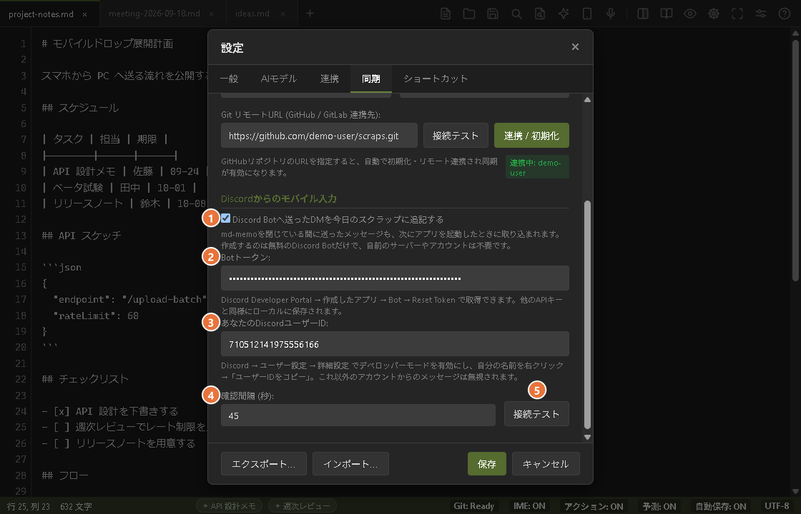
- 有効化 チェックを入れるまでは何も起きません
- Botトークン Developer Portal の「Bot」タブで取得したものを貼り付けます
- DiscordユーザーID 数字だけのID（デベロッパーモードで「ユーザーIDをコピー」）
- 確認間隔 起動中にDiscordを確認する頻度（既定45秒、15〜600秒）
- 接続テスト 保存前にBotトークンとユーザーIDが正しいかを確認します
- ユーザー名を貼ってしまう — 必要なのは画面に出ている名前ではなく、数字だけのユーザーID。接続テストで「"..." はユーザー名のようです」と出たら、これが原因です
- 招待の「連携タイプ」が「ユーザーインストール」のまま — Botをサーバーに参加させて個別DMを許可するには「ギルドのインストール」が必要です。招待URLに
integration_type=1が入っていると、認証時に「提供されているスコープが無効です」と出て失敗します - サーバーのチャンネルでBotに
@メンションしている — MD-Memoが確認しているのはBotとの個別DMだけです。Botのプロフィールから「メッセージを送る」を選び、専用のDM画面が開いたことを確認してから送ってください
使い方
- Botとの個別DMを開くサーバーのメンバー一覧やメンションからBotの名前をクリックし、プロフィールカードの「メッセージを送る」を選びます
- テキスト・写真・音声メモなどを送るDiscordアプリの通常の送信方法（キーボード入力、カメラロール添付、音声メッセージ）がそのまま使えます
- MD-Memo側で反映を待つ起動していれば確認間隔以内（既定45秒）、閉じていた場合は次に開いたときに、送った時点からの分がまとめて届きます
| Discordで送ったもの | スクラップに入る内容 |
|---|---|
| 写真 | Mobile Dropの写真と同じビジョンモデルでMarkdownに文字起こしされます。OCRが未設定・失敗のときは、assets/ に保存されリンクが入ります。 |
| 音声メッセージ・音声ファイル | 設定 → AIモデル の「音声認識エンジン(フォルダ監視・Discord)」で選んだ方法で文字起こしされます（既定は 音声入力と同じ Gemini です。Windows (x64) では、このPC内で動く Whisper も選べます。ホットフォルダを参照）。失敗したときは音声ファイルとして assets/ に保存されます。 |
| テキスト・URL | そのまま追記されます。URLだけの場合はMarkdownリンクになります。 |
それぞれ、その日のスクラップ（scraps/YYYY-MM-DD.md）の末尾に ## Discord [14:20:05] の見出しで追記されます。写真と文章を同時に送ると、2つの見出しに分かれます。
詳しい仕様（許可される送信者・確認の仕組み・失敗したとき）
- 送信者は1人だけ 設定した「あなたのDiscordユーザーID」と一致するメッセージだけを取り込みます。それ以外のアカウントからBotにメッセージが届いても、無視されます。
- 初めて有効化したとき 過去のDM履歴は取り込まれません（その時点を基準に、以降のメッセージだけを見ます）。
- 閉じている間に送った分 Discord側にメッセージが残っているので、次にMD-Memoを起動したときに、基準時点からの分をまとめて取り込みます。失われません。
- ネットワーク断・Botトークンの入れ替え 接続に失敗しても自動で再試行を続けます（少しずつ間隔を空けながら）。設定でトークンを直して保存すれば、その場で新しい設定が使われます。
- Git同期との関係 スクラップフォルダでGit同期が有効なら、Discordからの追記も自動でコミット・プッシュされます。処理できず
assets/に保存された写真・音声ファイルも同じフォルダに入るため、一緒に同期されます。
コマンドパレット (Ctrl+Shift+P)
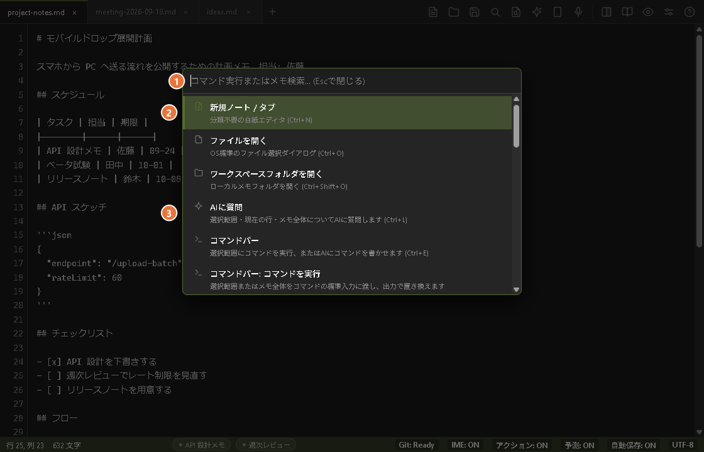
- 入力欄 打つと、コマンドやノートが絞り込まれます
- ハイライト中のコマンド Enter で実行します
- 説明とショートカット 各コマンドに、1行の説明と、割り当てられたキーが表示されます（たとえば「AIに質問」には Ctrl+L）
- パレットを開くCtrl + Shift + P（macOS: Cmd + Shift + P）
- 入力して絞り込むコマンド名やノートのタイトルの一部を打ちます（部分一致）
- 選んで実行するコマンドは実行され、ノートは開きます
制限・詳しい仕様
- 検索の対象は、21 個のコマンドと、開いているワークスペースフォルダのノートです。これに加えて、Windows では「クイックキャプチャ」（クイックキャプチャを開きます）が、ホットフォルダをオンにしているときは「受信フォルダを開く」（Windows と macOS）が、コマンドに加わります。
- 「AIに質問」「コマンドバー」も、パレットから開けます。「コマンドバー: コマンドを実行」「コマンドバー: AIにコマンドを書かせる」は、モードを指定して開く項目で、既定のキーはありません。
- 「タスクのひな形を挿入」（説明: Ctrl+Enter で実行できる LLM・エージェント・コマンドのひな形）は、ひな形の一覧を、カーソルの位置に開きます。同じ一覧は、
{{を打っても出ます。詳しくは 自動セレクター の「ひな形」をご覧ください。 - 照合は単純な部分一致です。曖昧検索（ファジー検索）ではありません。
- 設定項目は検索できません。設定画面は Ctrl + ,（macOS: Cmd + ,）で開きます。
03 設定リファレンス (Settings Deep Dive)
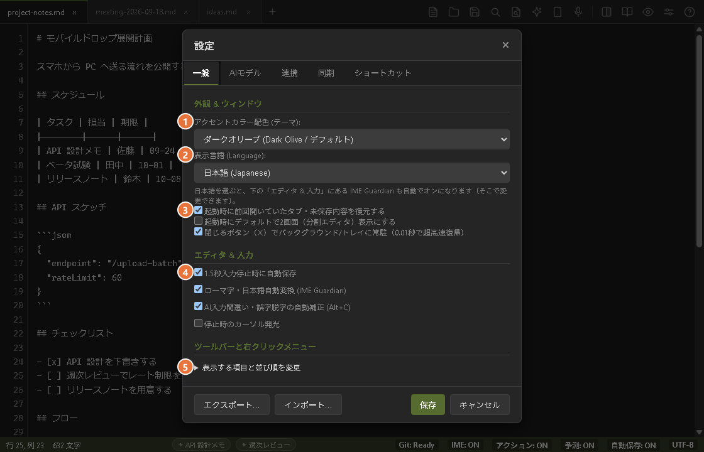
- テーマ アクセントカラーの配色です
- 表示言語 日本語 / English を切り替えます
- 起動とウィンドウ 前回のタブと未保存メモの復元、分割表示での起動、トレイ常駐
- エディタと入力 自動保存、IME Guardian、AI校正、カーソルの発光
- ツールバーと右クリックメニュー 表示する項目と並び順を選びます（下の手順を参照）
1. 一般タブ (General)
| 項目 | 既定値 | 説明 |
|---|---|---|
| アクセントカラー配色 (テーマ) | ダークオリーブ | Dark Olive, VS Code Blue, Forest Teal, Charcoal Monochrome から選択。 |
| 図 (Mermaid) の配色 | ダーク | ダーク、ライト、グレー、グリーンから選択。後ろの3つは白い背景に図を描くので、暗いプレビューで図が見づらいときに役立ちます。プレビューの各図にあるボタンで、ダークとライトをすぐに切り替えられます。 |
| 表示言語 (Language) | 日本語 / English | UI全体の表示言語を切り替えます。 |
| 前回開いていたタブの復元 | 有効 (ON) | 再起動時に、未保存のバッファや開いていたタブを完璧に復元します。 |
| 起動時に分割エディタで表示 | 無効 (OFF) | 常に2ペイン状態で起動したい場合はチェックを入れます。 |
| トレイに常駐 | 有効 (ON)（Windows） | Windowsでは、閉じるボタンで終了せずトレイに潜み、Ctrl+Alt+M でミリ秒起動します。macOSにはトレイがなく、ウィンドウを閉じても常にDockに残ります。この項目はmacOSでは無効化され、「現在この OS では未対応のため、この設定は反映されません。」と表示されます。 |
| 1.5秒入力停止時に自動保存 | 有効 (ON) | 既存ファイルを開いて編集した際、タイピング停止から1.5秒で自動保存します。 |
| IME Guardian | システム言語が日本語のときだけ有効 (ON)（macOSでは既定で無効 (OFF)） | コードブロック内での全角英数誤爆を自動補正します。macOSでは入力ソースの自動切り替えにまだ対応していないため、既定でオフになり、設定画面にその旨の案内が表示されます。 |
| AI入力間違い・誤字脱字の自動補正 (Alt+C) | 有効 (ON) | Alt + C の校正コマンドのオン/オフを切り替えます。 |
| 停止時のカーソル発光 | 有効 (ON) | タイピングが止まった際、カーソル周辺に穏やかな光のアフォーダンスを表示します。 |
| Ctrl+V で Web・Word・Excel の内容を Markdown にして貼る | 有効 (ON) | 表・見出し・リスト・リンクなど、構造のあるHTMLだけを Markdown に変換します（コードとログはそのまま）。Ctrl + Shift + V は常に加工なしで貼ります。オフにすると、Ctrl + V がプレーンテキスト、Ctrl + Shift + V が変換になります。 |
| コメントの切り替えで書く形 | 1 行ずつコメント | Ctrl + / が書く形です。1 行ごとに <!-- --> を書くか、選択した行をまとめて 1 つのコメントにします。行をコメントにするを参照してください。 |
| ツールバーと右クリックメニュー | すべて表示 | ツールバーのアイコンと右クリックメニューの項目を、表示・非表示と並び順で整えられます。手順は下の「ツールバーと右クリックメニューを整える」を参照してください。 |
ツールバーと右クリックメニューを整える
- セクションを開く設定 → 一般 の「ツールバーと右クリックメニュー」（「表示する項目と並び順を変更」）を開きます
- 表示する項目を選ぶツールバーのアイコンと右クリックメニューの項目を、チェックで選びます。矢印でグループ内の並びを変えられます
- 変更はすぐ反映される「キャンセル」で元に戻ります。「初期設定に戻す」で、元の並びに戻ります
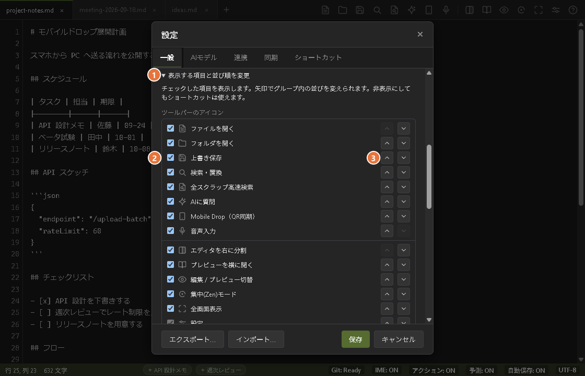
- セクションの見出し 表示する項目と並び順を選びます
- チェックボックス チェックで表示、外すと非表示です（設定アイコンだけは常に表示されます）
- 上へ・下への矢印 グループの中で、項目を動かします
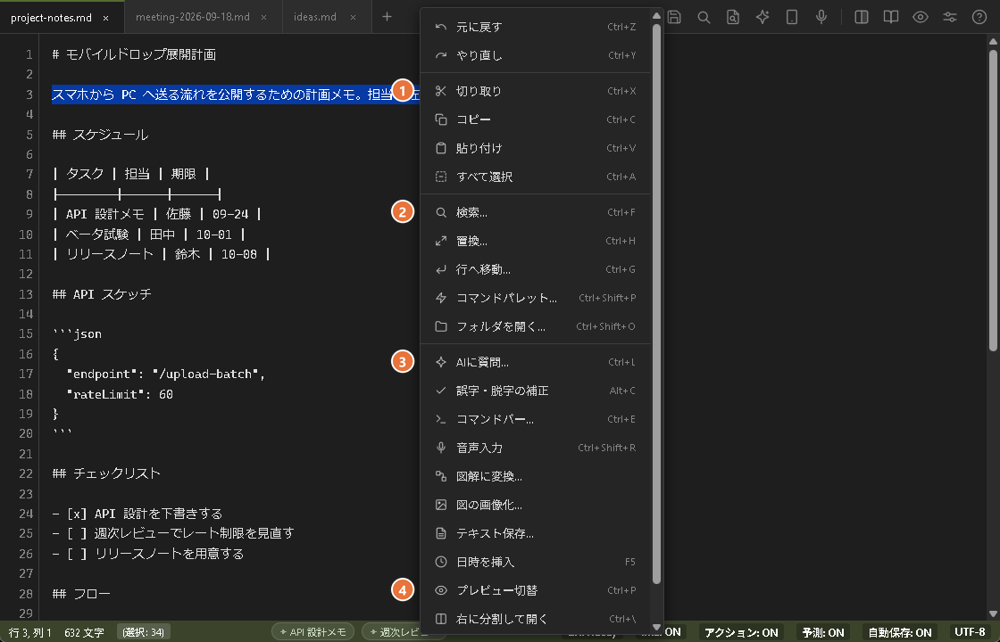
- 編集コマンド 元に戻す・やり直し・切り取り・コピー・貼り付け・すべて選択
- 移動 検索・置換・行へ移動・コマンドパレット・フォルダを開く
- AIとコマンドバー AIに質問・誤字・脱字の補正・コマンドバー・音声入力など
- 表示 プレビューの切り替えと、右に分割して開く（メニューをスクロールすると Zen モードと全画面表示もあります）。表示する項目は、設定で変えられます
- 設定アイコンは並べ替えだけできて、非表示にはできません（設定画面へ戻れるよう、常に表示されます）。
- 非表示にした項目も、ショートカットとコマンドパレットからは使えます。
設定画面の下にある「エクスポート...」「インポート...」は、設定・エージェント定義・スキルを 1 つのパッケージ（.mdmemopack）で持ち運ぶ機能です。詳しくは 6. 設定のエクスポート / インポート。
2. AIモデル タブ (AI Models)
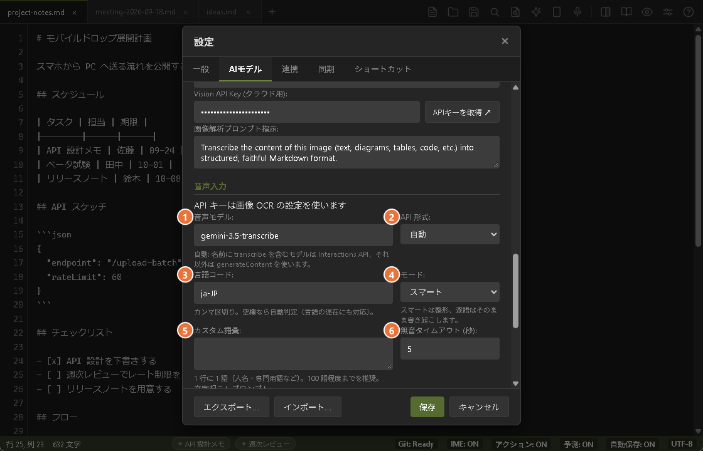
- 音声モデル 文字起こしに使うモデルです
- API 形式 「自動」ならモデル名から選び、固定もできます
- 言語コード カンマ区切りで指定します。空欄なら自動判定です
- モード スマートは整形、逐語はそのまま書き起こします
- カスタム語彙 人名や専門用語を、1行に1語書きます
- 無音タイムアウト 何秒の無音で、録音を自動で止めるかを決めます
- 機能 → 使われるモデル設定: タブの先頭にあるカードで、機能ごとにどのモデル設定が使われるかが一覧できます。たとえば「書く」・チャット・AIに質問はテキストLLMを使い、入力予測や画像OCRはそれぞれ専用の設定を持ち、提案（アクション候補）は連携タブで設定します。
- ローカルAI (Ollama): 状態バッジと、Ollama の「起動」「停止」ボタン、そして「Gemma 4 導入」ボタンがあります。「Gemma 4 導入」は、Ollama が未導入なら導入したうえで
gemma4:e2bモデルを取得します。 - テキストLLM & AI CLI (執筆・対話・コマンド生成): API Base URL、モデル名、API Key、システムプロンプトを設定できます。接続方式は URL から自動で判定され、URL の下に表示されます（Ollama / Gemini 互換 / OpenAI 互換）。
- 入力予測 (インライン補完): 専用の URL・モデル・キーを持ち、表示までの待機時間（既定500ms。設定画面では200〜2000ですが、実際の下限は300ms）と最大予測トークン数（既定30、10〜100）を調整できます。
- 画像解析 (Vision OCR): Gemini Flash Lite や Qwen 2.5 VL などの画像モデルとキーを指定します。「画像ペースト(Ctrl+V)時に自動で画像マークダウン化 (Vision OCR) を実行」のスイッチもここにあります（既定でオン）。スイッチがオフのとき、またはAPIキーが未設定のときは、貼り付けた画像を assets に保存してリンクで貼ります（Ctrl+Shift+V と同じ）。
- 画像生成 (Mermaid・図解・イラスト): 図を画像として書き出すときに使うモデル・アスペクト比・解像度を指定します。Gemini API Key の欄が空のときは、Vision のキー、次にテキストのキーの順に引き継がれます。
- 音声入力 (Voice input): 画像解析（Vision OCR）の設定のすぐ下にあります。使い方は 音声入力 を参照してください。設定項目は次の表のとおりです。
- 音声認識エンジン(フォルダ監視・Discord): 音声入力の設定の下にあります。「エンジン:」で、「Gemini(クラウド)」（既定）か「Whisper(このPC内・オフライン)」を選びます。選んだエンジンが効くのは、ホットフォルダと Discord連携 の文字起こしだけです。画面での音声入力とMobile Dropは、これまでどおり Gemini を使います。Whisper は Windows (x64) のみ で、macOS では「このPC内 Whisper は、現在 Windows (x64) のみ対応しています。」と表示されます。ダウンロードの手順とモデルの一覧は、ホットフォルダの Whisper の項目にあります。
音声入力 (Voice input) の設定項目
| 項目 | 設定ファイルのキー | 既定 | 説明 |
|---|---|---|---|
| 音声モデル | voice.model |
gemini-3.5-transcribe |
候補は gemini-3.5-transcribe、gemini-flash-lite-latest。gemini-3.5-transcribe-live（ストリーミング版）は録音した音声には使えず、指定するとエラーになります。 |
| API 形式 | voice.apiStyle |
自動 (auto) |
自動 / Interactions API / generateContent。自動は、モデル名に「transcribe」を含めば Interactions API、それ以外は generateContent を使います。 |
| 言語コード | voice.languageCodes |
空欄 | BCP-47 をカンマ区切りで指定します（例 ja-JP, en-US）。空欄なら自動判定で、言語の混在にも対応します。Interactions API のときだけ使われます。 |
| モード | voice.mode |
スマート (smart) |
スマート＝フィラーを除いて、読みやすく整形。逐語 (verbatim)＝そのまま書き起こし。Interactions API のときだけ使われます。 |
| カスタム語彙 | voice.customVocabulary |
空欄 | 1行に1語（人名・専門用語）。最大1000語ですが、100語程度までがいちばん効きます。Interactions API のときだけ使われます。 |
| 無音タイムアウト (秒) | voice.silence_timeout_sec |
5 | 1〜30。この秒数だけ無音が続くと、録音を自動で止めます。 |
| 文字起こしプロンプト | voice.prompt |
既定の指示文 | generateContent 形式のモデルでだけ使われます。 |
| APIキー / Base URL | voice.apiKey / voice.baseUrl |
空欄 | 空欄なら、画像解析（Vision OCR）のキーとBase URLを使います。設定画面に専用の入力欄はなく、設定ファイルに直接書いたときだけ別のキーを使えます。 |
音声認識エンジン (フォルダ監視・Discord) の設定項目
| 項目 | 設定ファイルのキー | 既定 | 説明 |
|---|---|---|---|
| エンジン | voice.engine |
Gemini(クラウド) (gemini) |
Gemini(クラウド) / Whisper(このPC内・オフライン) (whisper-local)。ホットフォルダと Discord 連携にだけ効きます。Whisper は Windows (x64) のみです。 |
| モデル | voice.whisper.model |
kotoba-whisper v2.0 量子化版 | 一覧のモデル、またはカスタム（custom-path / custom-url）です。 |
| モデルファイル(ggml 形式の .bin) | voice.whisper.modelPath |
空欄 | カスタム「PC上のモデルファイルを指定」のときの、ファイルの場所です。 |
| モデルの URL(https) / SHA-256(任意) | voice.whisper.customUrl / voice.whisper.customSha256 |
空欄 | カスタム「URL からダウンロード」のときの、モデルのアドレスと、照合用の SHA-256 です。 |
| 言語 | voice.whisper.language |
空欄（自動判定） | 例: ja、en。 |
| スレッド数 | voice.whisper.threads |
0（自動） | 認識に使うスレッドの数です。 |
| 初期プロンプト | voice.whisper.prompt |
空欄 | 固有名詞や専門用語を入れると、認識が安定します。 |
| Whisper が失敗したら Gemini で再試行する | voice.whisper.cloudFallback |
オフ | オンにすると、Whisper が失敗したとき、または準備できていないときに、Gemini で文字起こしし直します。音声が外部に送信されます。 |
3. 連携 タブ (Agent & CLI)
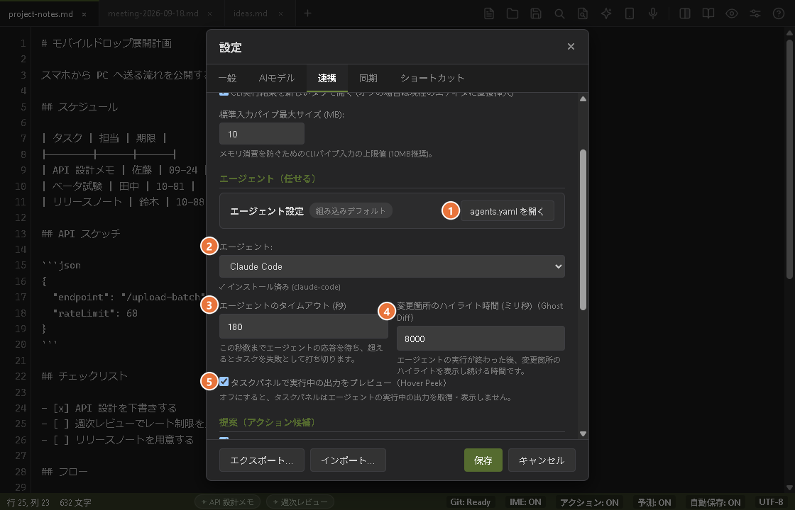
- agents.yaml を開く エージェントと記法を定義するファイルを開きます
- エージェント 既定のエージェントです。コマンドがインストールされているかを示すバッジが付きます
- エージェントタイムアウト 実行を打ち切るまでの秒数です
- 変更箇所のハイライト時間（Ghost Diff） ミリ秒で指定します
- ホバー覗き見（Hover Peek） タスクパネルに、エージェントの最新の出力を表示します
コマンド（実行する） — コマンドバーの設定です。
- CLIコマンド生成モデル: コマンドバーの AI モード（Ctrl+E → Tab）でコマンドを書かせるモデル名。空欄ならAIモデルタブの設定を引き継ぎます。
- コマンドの出力の入れ方: 既定は「選択範囲の下に挿入する」です。選んだテキストが残り、その最後の行の下に出力が入ります（コマンドを実行した元のテキストと同じ出力のときは、何も追加しません）。「選択範囲を置き換える」にすると、従来のフィルタのように、選んだテキストが出力に置き換わります。
- 実行結果を新しいタブで開く: オン（既定）のときは、上の入れ方でノートに入れたうえで、結果を新しいタブでも開きます（選択がなければ、新しいタブだけが開きます）。オフのときは新しいタブを開かず、選択がなければ出力をノートの末尾に加えます（「置き換える」なら、ノート全体が出力に置き換わります）。
- 標準入力パイプ最大サイズ: この欄を変えても効果はありません。
cat log | md-memoで流し込める上限は、10MBに固定されています。巨大ファイルによるメモリ圧迫を防ぐための上限です。
エージェント（任せる） — スロットから呼び出すエージェントの設定です。
- agents.yaml を開く: 記法・エージェント・レシピを定義する設定ファイルを開きます。まだ無ければコメント付きの雛形を生成します。
- エージェント: 記法で指定がない場合に使う既定のエージェント。自動セレクターが、行をエージェントへの依頼に書き換えるときの名前にも使われます。一覧は読み込まれた
agents.yamlの内容から作られます。その下には、選択中のエージェントが権限の確認を飛ばす設定のときの警告と、置き換え前の組み込み定義のままのエージェントや、指示をシェルのコマンドとして実行してしまうエージェントを並べる「確認が必要なエージェント定義」（新しい定義をコピー / 内容が変わるまで表示しない）が表示されます（任せる を参照）。 - エージェントタイムアウト: 実行を打ち切るまでの秒数（既定: 180秒、10〜600秒）。
agents.yamlがすでにある場合（「agents.yaml を開く」で作られた場合も）は、ファイルの値が優先され、この欄の値は使われません。 - Ghost Diff のハイライト時間: 結果が差し込まれた直後に、エディタの左端へ琥珀色の線が表示される時間です（既定: 4000ms、1000〜10000）。この間と、その後の1秒間は Esc で取り消せます。設定画面では「変更箇所のハイライト時間 (ミリ秒)（Ghost Diff）」と表示されます。
- ホバー覗き見 (Hover Peek): タスクパネルでエージェントの最新出力行を表示します。
- agents.yaml の
aliases: エージェントごとに、{{ @cc 指示 }}のような短い名前（別名）を付けられます。書かなくても、claude-codeにはclaude・cc、agyにはantigravity・geminiが付きます。 - agents.yaml の
snippets: 自作のタスクやコマンドのひな形（id・label・kind・trigger・bodyなど）を書けます。{{のクイックセレクターと、コマンドパレットの「タスクのひな形を挿入」に並びます。どちらも書き換えたあとは、MD-Memoを再起動すると新しい内容になります（コマンドバーの候補は、バーを開くたびに読み直します）。書き方は 自動セレクター の「ひな形」にあります。
自動セレクター (Ctrl+Enter) — 自動セレクターの設定です。エージェントの設定の下にあります。
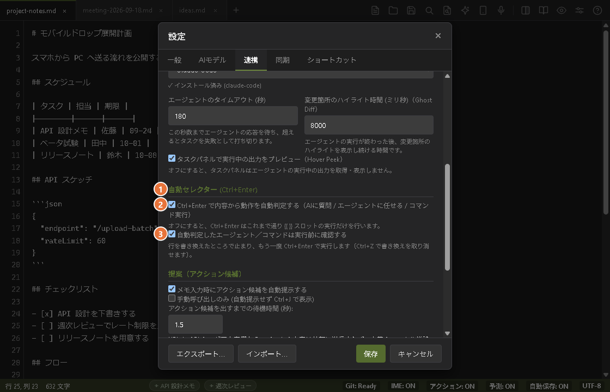
- 自動セレクターのグループ エージェント（任せる）の設定の下にあります
- Ctrl+Enter で内容から動作を自動判定する 既定はオンです。オフにすると、Ctrl+Enter はこれまで通り
{{ }}スロットの実行だけを行います - 自動判定したエージェント／コマンドは実行前に確認する 既定はオンです。行を書き換えたところで止まります
- Ctrl+Enter で内容から動作を自動判定する（AIに質問 / エージェントに任せる / コマンド実行）: 既定はオンです。オフにしても、手書きの
[[ @llm ]]・[[ $ ]]・{{ @名前 }}は、Ctrl+Enter で実行できます（判定をやめるだけです）。 - 自動判定したエージェント／コマンドは実行前に確認する: 既定はオンです。行を書き換えたところで止まり、もう一度 Ctrl+Enter で実行します（Ctrl+Z で書き換えを取り消せます）。オフにすると、書き換えと同時に実行します（確認なしで動くエージェントは、この場合も行を書き換える前に確認します）。上のチェックがオフの間は、グレー表示になります。
提案（アクション候補） — アクション候補（Ctrl+J）の設定です。
- メモ入力時に自動提示する: 入力が止まったときに候補を出すかどうか。
- 手動呼び出しのみ: 自動提示をやめ、Ctrl+J を押したときだけ出すようにします。
- 入力停止から自動提示までの待機時間（秒）: 自動提示までの間合いを調整します。
- API Base URL / モデル名 / API Key: 候補に使う Jev（またはほかのモデル）の接続先。API Key を空のままにし、Base URL を既定値（
https://openrouter.ai/api/v1、モデル名はjev-latest）のままにしておくと内蔵のローカル規則を使い、キーを入力するか URL を変更するまで何も送信されません。OpenRouter のキーなら既定のまま、TypeSafe のキーなら Base URL をhttps://api.typesafe.aiにします。詳しくは アクション候補 の「送信されるデータ」にあります。
OS連携（送る）（Windows のみ） — エクスプローラーの「送る」メニューの設定です。提案の設定の下にあります。macOS には、この項目も、「送る」メニューもありません。
- 「送る」メニュー（画像→OCR）: 状態が「設置済み」か「未設置」かで表示されます。「追加」を押すと、エクスプローラーの「送る」メニューに MD-Memo (OCR) が入ります。「解除」で、元に戻ります。
- 使い方: エクスプローラーで画像ファイルを右クリックして、送る → MD-Memo (OCR) を選びます。画像の文字が読み取られて、今日のスクラップに追記されます。ウィンドウは開きません。
- 中身: 実際に動くのは、
md-memo ocr <画像のパス>というコマンドです。読み取りの方法は、設定 → AIモデル の「画像解析 (Vision OCR)」と、設定 → 同期 の「画像をこのPCの外に出さない」に従います。詳しくは ホットフォルダ をご覧ください。
4. 同期 タブ (Sync: Scraps & Git)
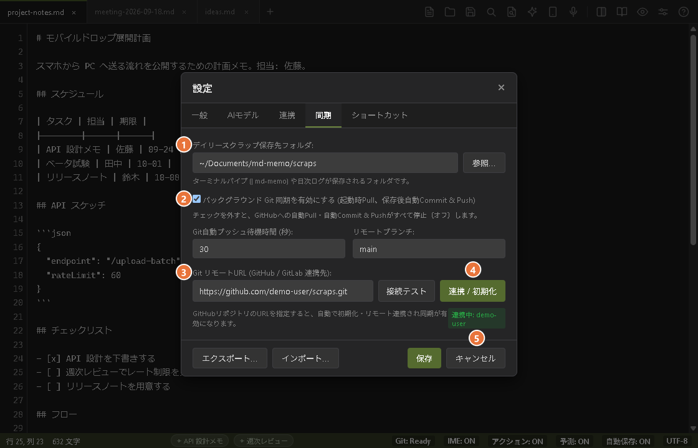
- デイリースクラップ保存先フォルダ スクラップを保存するフォルダです
- バックグラウンドGit同期 ON / OFF を切り替えます
- GitリモートURL スクラップ用リポジトリのURLです
- 連携 / 初期化 フォルダをリモートにつなぎます
- リポジトリの状態バッジ いまのGitの状態を示します
- デイリースクラップ保存先フォルダ: スクラップファイルが保存されるディレクトリ。「参照...」ボタンで選べます。ObsidianのVaultフォルダやDropboxフォルダに直接指定することも可能です。
- バックグラウンド Git 同期を有効にする: 起動時に
git pull --rebaseを行い、編集後に入力が止まると自動でgit add/commit/pushをバックグラウンド実行します。スクラップフォルダがGitリポジトリのときに動作します。リモートは必須ではありませんが、リモートがないとpushは失敗します。 - Git自動プッシュ待機時間 (秒): 最後の編集からプッシュするまでの待ち時間です（既定30秒、5〜3600）。
- リモートブランチ: 同期先のブランチ名です（既定は
main）。 - Git リモートURL・「接続テスト」・「連携 / 初期化」: 空のGitHubリポジトリURL（
https://github.com/user/scraps.git）を入力して「接続テスト」で疎通を確認し、「連携 / 初期化」を押すだけで、必要ならgit init、originの設定、最初のコミット、push -uまでを自動で行います。 - Discordからのモバイル入力: 同じタブの下の方にあります。Botトークン、DiscordユーザーID、確認間隔、接続テストを設定します。詳しい手順はDiscord連携を参照してください。
- ホットフォルダ（自動OCR・文字起こし）: Discord の設定のさらに下にあります。使い方はホットフォルダを参照してください。
- フォルダを監視し、画像はOCR・音声は文字起こしして今日のスクラップに追記する: オン / オフです。最初はオフです。
- 監視するフォルダのパス: 既定は
~/Documents/md-memo/inboxです。「参照...」で選べます。処理したファイルは、スクラップフォルダのassetsに移されます（削除はされません）。 - 画像をこのPCの外に出さない: 端末内OCRだけで読み取る(精度は下がります): オフ（既定）のときは、「画像解析 (Vision OCR)」で設定した画像モデルが先に読み取り、失敗したときだけ端末内OCRを使います。オンにすると、端末内OCRだけを使い、画像は PC の外に出ません。ホットフォルダ・画面キャプチャ・「送る」・
md-memo ocrに効きます。macOS では、この項目は表示されません（端末内OCRがないためです）。
Git同期は、スクラップフォルダで git add .・commit・push を実行します。そこに置いた .env や .md-memo/agents.yaml もコミットされるので、秘密の情報は置かないでください。
5. ショートカット一覧
| 機能 / アクション | Windows | macOS |
|---|---|---|
| グローバル瞬時召喚（呼び出し専用。隠す機能はありません） | Ctrl + Alt + M | Option + Cmd + M |
| クイックキャプチャ（グローバル。メモ入力ポップアップを開く。Windows のみ） | Ctrl + Shift + Q | なし（macOS にはこの機能がありません） |
| 高速スクラップ並列検索 | Ctrl + Shift + F | Cmd + Shift + F |
| コマンドパレット | Ctrl + Shift + P | Cmd + Shift + P |
| AIに質問 | Ctrl + L | Cmd + L |
| AI 文章校正・誤字脱字修正 | Alt + C | Cmd + Shift + C |
| アクション候補を表示 | Ctrl + J | Cmd + J |
| コマンドバー（前回使ったモードで開く） | Ctrl + E | Cmd + E |
| Mobile Drop（QRでスマホから送信） | Ctrl + Shift + U | Cmd + Shift + U |
| 自動セレクター（行の内容から動作を判定 / スロットを実行） | Ctrl + Enter | Cmd + Enter |
| タスクパネルの開閉 | Alt + T | Option + T |
| 左右分割（スプリットビュー） | Ctrl + \ | Cmd + \ |
| プレビューを横に開く | Ctrl + Alt + V | Cmd + Option + V |
| そのまま貼る（プレーンテキスト・画像はファイル保存） | Ctrl + Shift + V | Cmd + Shift + V |
| 音声入力 | Ctrl + Shift + R | Cmd + Shift + R |
| リンクを開く | Ctrl + クリック | Cmd + クリック |
| リンクを表示（エクスプローラー / Finder） | Alt + クリック | Option + クリック |
| Zenモード | Shift + F11 | Ctrl + Cmd + Z |
| 全画面表示 | F11 | Ctrl + Cmd + F |
| ゴーストテキスト単語採用 | Ctrl + → | Option + → |
| 現在の日時を挿入 | F5 | Cmd + Shift + I |
| コメントの切り替え（行を <!-- --> で隠す） | Ctrl + / | Cmd + / |
「クイックキャプチャ」のキーは、MD-Memo を使っていないときにも効く、OS 全体のキーです（Windows のみ）。設定 → ショートカット の「表示・画面」グループにあり、キーを空にすると無効になります。ほかのプログラムがすでに使っている組み合わせは、メッセージが出て登録できず、前のキーのままになります。ポップアップの中のキーは、クイックキャプチャ をご覧ください。
「コマンドバー: コマンド実行モード」と「コマンドバー: AIがコマンドを作るモード」には、既定のキーがありません。設定 → ショートカット の「コマンドバー」グループで、好きなキーを割り当てられます。Ctrl + K も、既定では何にも使われていないので、割り当てられます。
ショートカットを割り当て直す（設定 → ショートカット）
- 割り当てるキー欄のボタンをクリックし、割り当てたい組み合わせを押します。記録中は「キーを押して登録 / Backspace で解除 / Esc でキャンセル」と表示されます
- すでに使われているとき「すでに『<操作>』に割り当てられています。上書きしますか？」と確認が出ます。「OK」（Enter）で移動し（元の操作は「未設定」になります）、「キャンセル」か Esc なら何も変わりません
- 割り当てないとき記録中に Backspace（または Delete）を押すと「未設定」になり、何も起きなくなります。Esc なら記録のキャンセルです。「初期設定に戻す」で、すべて既定のキーに戻ります
重複を調べるときは、Ctrl と Cmd は同じキーとして扱われます。
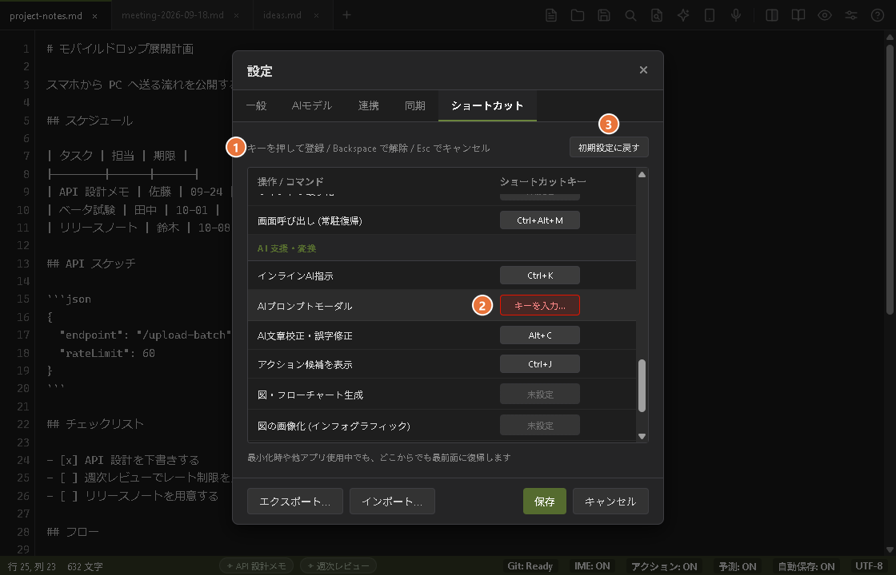
- ヒント行 新しいキーを押します。Backspace で解除、Esc でキャンセルです
- 記録中の行 ここでは「AIに質問」の行です。ボタンが「キーを入力...」の表示のまま、キーの組み合わせを待っています
- 初期設定に戻す すべてのキーを既定に戻します
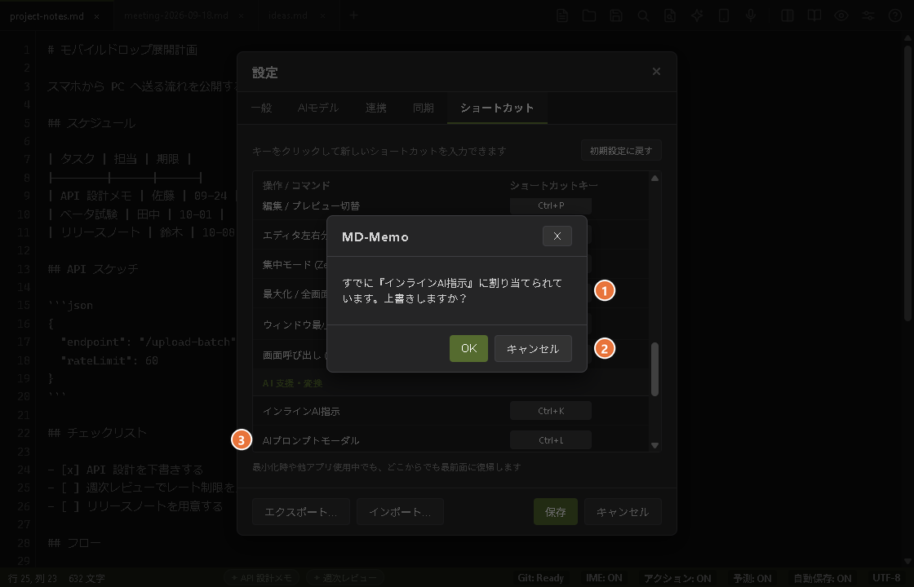
- 確認メッセージ 「すでに『アクション候補を表示』に割り当てられています。上書きしますか？」のように、そのキーを使っている操作が示されます
- OK / キャンセル 「OK」（Enter）で上書きし、「キャンセル」（Esc）ならいまの割り当てを残します
- 割り当て直している操作 ここでは「AIに質問」の行です。この行のキーを記録中に、すでに使われている Ctrl + J を押しました
割り当てできない予約キー
次の組み合わせはアプリが使っているため、割り当てようとすると「アプリ内部で予約されているため割り当てできません」と表示されます。
| 環境 | 割り当てできないキー |
|---|---|
| Windows / Linux | Ctrl + Tab Ctrl + , Ctrl + Shift + V（そのまま貼る） Ctrl + Alt + V（プレビューを横に開く） Alt + T（タスクパネル） Ctrl + →（ゴーストテキストの単語採用） Ctrl + Enter（Shift や Alt を加えた形も。自動セレクターとスロットの実行） Ctrl + C Ctrl + V Ctrl + X Ctrl + A Ctrl + Z Ctrl + Shift + Z Ctrl + Y |
| macOS | Ctrl + Tab Cmd + , Cmd + Q Cmd + H Cmd + Option + H Cmd + M Cmd + Z Cmd + Shift + Z Cmd + X Cmd + C Cmd + V Cmd + A Cmd + Tab Cmd + Space Cmd + Shift + V Cmd + Option + V Option + T Cmd + → Cmd + Enter（Shift や Option を加えた形も） |
設定一覧にない、そのほかの固定のキー
- Ctrl + Enter: 自動セレクターのキーです。カーソル位置のタスクやスロットを実行し、普通の行は内容を見て振り分けます。自動判定がオフのときと、行が空白のときは、従来どおり、カーソル位置のスロット、なければ後ろの次のスロット、それもなければノートの最初のスロットを実行します。コードブロックの中では、何も起きません。Shift や Alt を加えた形も同じ扱いです。そのため、「下に行を挿入」の既定は Shift + Enter（「上に行を挿入」は Shift + Alt + Enter）です。
- Ctrl + クリック / Alt + クリック: リンクを開く / リンクの場所を表示します。
- Esc: 音声入力の録音を破棄します。
- クイックキャプチャのポップアップの中（Windows のみ）: Enter は Send、Ctrl + Enter は AI Send、Ctrl + Shift + Enter は Capture、Esc は閉じます。クイックキャプチャと画面キャプチャをご覧ください。
- そのまま貼る（Ctrl + Shift + V）は固定で変えられません。音声入力のキーは変更できます。
macOS では、上の表のとおり、それぞれ対応するキーになります。
6. 設定のエクスポート / インポート（パッケージ）
.mdmemopack）にまとめて、ほかの PC に持ち運べます。設定画面の下にある「エクスポート...」「インポート...」から使います。 API キーは、最初は入りません書き出す（設定 → エクスポート...）
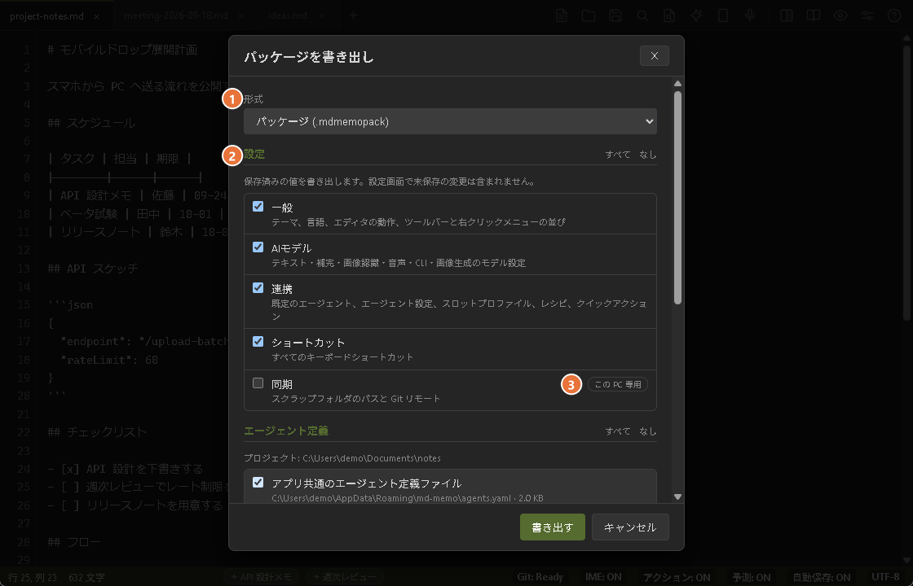
- 形式 パッケージ（.mdmemopack）か、設定だけの JSON かを選びます
- 設定 区分ごとにチェックを付けます。右上の「すべて」「なし」でまとめて切り替えられます
- 同期 「この PC 専用」の印が付き、最初はオフです。スクラップフォルダのパスなど、PC ごとに違う値だからです
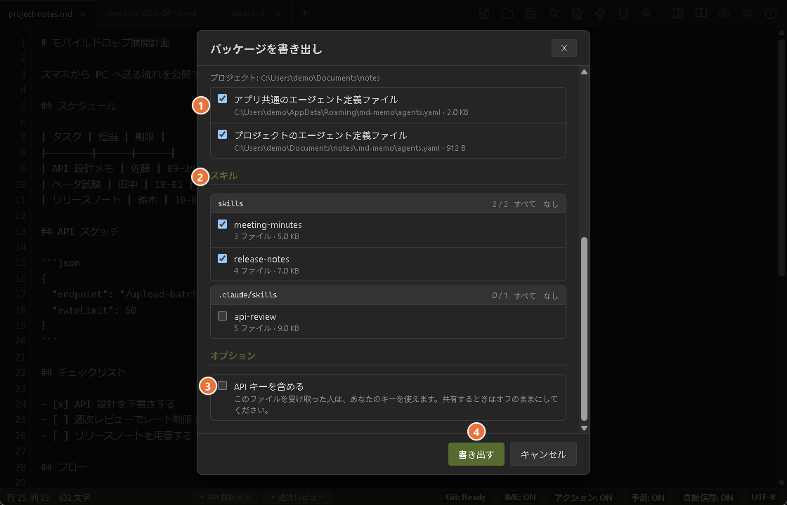
- エージェント定義 アプリ共通と、プロジェクトの 2 つのファイルが、パスつきで並びます。最初はオンです
- スキル いまのプロジェクトのスキルだけが、フォルダごとに並びます。最初はどれもオフです
- API キーを含める 最初はオフです。オンにすると、ファイルを受け取った人があなたのキーを使えます
- 書き出す 保存先を選ぶと、パッケージが作られます
- 「エクスポート...」を押す設定画面の左下にあります。「パッケージを書き出し」が開きます
- 入れるものを選ぶ設定の区分、エージェント定義、スキルにチェックを付けます。「同期」とスキルは、最初はオフです
- 「API キーを含める」はオフのまま人に渡すファイルにキーが入らないようにするためです。自分の別の PC に移すときだけオンにします
- 「書き出す」を押す保存先を選ぶと
md-memo-年月日.mdmemopackが作られ、内訳が表示されます
読み込む（設定 → インポート...）
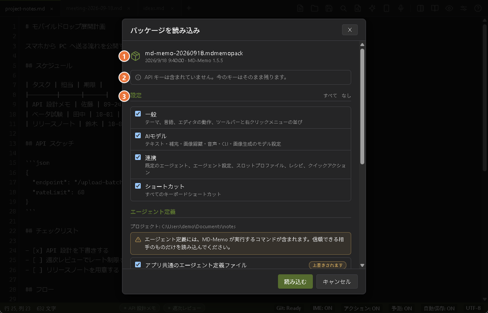
- パッケージ 選んだファイルの名前、作成日時、書き出した MD-Memo のバージョンです
- API キーの有無 「API キーは含まれていません」なら、いまのキーはそのまま残ります。キーが入っているときは、注意の表示になります
- 設定 パッケージに入っている区分だけが並びます。反映したいものにチェックを付けます
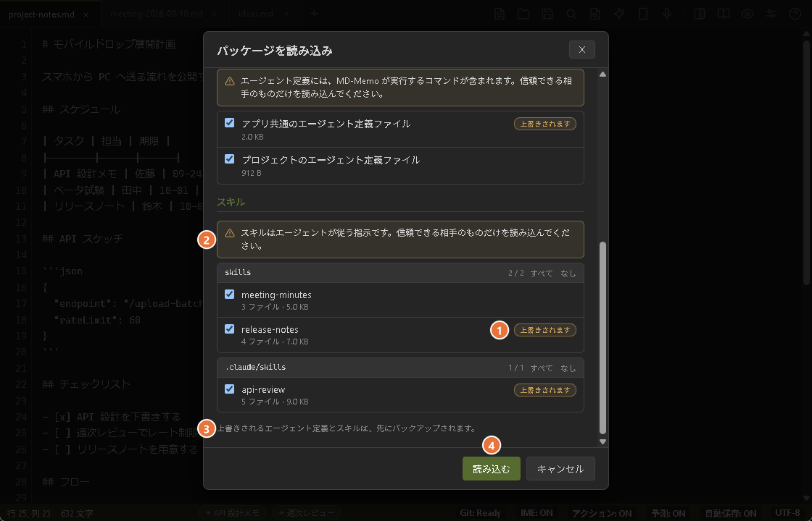
- 上書きされます 同じ名前のものがすでにあり、読み込むと置き換わります。置き換わるものは、先にバックアップされます
- スキルの注意 スキルはエージェントが従う指示です。信頼できる相手のものだけを読み込みます
- バックアップの案内 上書きされるエージェント定義とスキルは、先にバックアップされます
- 読み込む チェックを付けたものだけを反映します
- 「インポート...」を押してファイルを選ぶ
.mdmemopackのほか、以前の設定 JSON も読み込めます - 中身を確かめる「上書きされます」の印が付いた項目は、いまあるものを置き換えます。パッケージの API キー欄が空のときは、いまのキーは消えません
- 読み込むものにチェックを付ける信頼できない相手のエージェント定義とスキルは、チェックを外します
- 「読み込む」を押す設定はすぐ反映されます（一部は再起動後）。エージェント定義とスキルは、次のエージェント実行から使われます
- 設定: 一般・AIモデル・連携・ショートカット・同期・その他（区分ごとに選べます。自動セレクターの設定は「連携」に入ります）
- エージェント定義: アプリ共通と、プロジェクトの
agents.yaml - スキル: いまのプロジェクトの
skills、.claude/skills、.gemini/skills、.codex/skillsにあるもの
- API キー: 「API キーを含める」をオンにしたときだけ入ります
.envファイル: プロジェクトの.envは対象外です- 全体のスキル: ホームフォルダにあるスキルは、選べません
- ノート本体: パッケージは、設定・エージェント定義・スキルだけです
- エージェントの実行確認: 確認なしで動くエージェントに「実行」と答えた記録は、このPCにだけ残ります。移行先では改めて確認します
制限・詳しい仕様
API キーなどの秘密情報
- 「API キーを含める」がオフのとき、名前に
apikey、api_key、api-key、token、secret、password、passwdのどれかを含む設定項目の値を空にします。Git リモート URL のユーザー:パスワード@も取り除きます。 - エージェント定義は、
env:の中にある同じ種類の値を空にします（コメントや並びはそのままです）。安全に書き換えられないときはファイルをそのまま入れ、「秘密情報が残っている可能性があります」と知らせます。共有する前に確かめてください。 - 空にした件数は、書き出しの完了画面に出ます。
読み込んだあとの動き
- 設定は、動いているアプリに統合されて、その場で保存されます。テーマ・言語・ツールバー・ショートカットもすぐ切り替わります。チェックを付けなかった区分は変わりません。
- エージェント定義とスキルは、MD-Memo 自身が書き込みます。
config.jsonを直接書き換えて取り込むことはできません（起動中のアプリが、設定ファイルを持っているためです）。 - 書き込み先は、アプリ共通のエージェント定義が
%APPDATA%\md-memo\agents.yaml（macOS は~/Library/Application Support/md-memo/agents.yaml）、プロジェクトのものが<プロジェクト>/.md-memo/agents.yaml、スキルが<プロジェクト>/<フォルダ>/<名前>です。構文エラーのあるエージェント定義は、理由つきで読み飛ばします。 - 上書きされるエージェント定義とスキルは、先に
%APPDATA%\md-memo\pack_backups\<日時>\（macOS は~/Library/Application Support/md-memo/pack_backups/）へ退避されます。プロジェクトの外なので、スキルのフォルダに余計なファイルは増えません。場所は、読み込み後の画面にも出ます。 - 以前の設定 JSON（1 ファイルに全設定）も読み込めます。対象は設定だけで、API キーが入っていることがあります。書き出しの形式で「JSON（設定のみ）」を選ぶと、同じ形式のファイルができます。
- 設定の一部は、MD-Memo を再起動すると反映されます。読み込み後の画面に案内が出ます。
「プロジェクト」とは
開いているノートのフォルダ（保存前のノートは、開いているフォルダ、それも無ければスクラップフォルダ）から上へたどり、.md-memo、agents.yaml、AGENTS.md、skills、.git のどれかがある最初のフォルダです。ホームフォルダはプロジェクトとして扱いません（全体のスキルを持ち出さないためです）。決まらないときは、プロジェクトの項目に「プロジェクトが必要」と出て、選べません。
上限と安全
- パッケージは 50 MB・3000 ファイルまで、1 ファイルは 10 MB まで、展開後の合計は 100 MB までです。設定は 2 MB、エージェント定義は 1 ファイル 1 MB までです。上限を超えるスキルは、注意を出して書き出しから外します。
- スキルのフォルダにある
.envと.env.*（.env.exampleなどの雛形は入ります）、.git、node_modules、__pycache__フォルダ、シンボリックリンクは入りません。 - 危険なパス（
..・絶対パス・ドライブ文字など）を含むもの、暗号化されたものや壊れたもの、新しい版のパッケージは、読み込めません。目録（マニフェスト）に載っていないファイルは無視します。 - スキルはエージェントが従う指示で、エージェント定義には MD-Memo が実行するコマンドが入ります。信頼できる相手のものだけを読み込んでください。
04 玄人向けハック & プログラマブル制御
UNIX パイプライン連携
| md-memo で流し込むと、今日のスクラップの末尾に追記されます。 設定不要
ミリ秒で起動中のインスタンスに届き、今日のスクラップ（scraps/YYYY-MM-DD.md）の末尾に、タイムスタンプと実行コマンド名付きで追記されます。ウィンドウは自動で前面に出ます。
# コマンドの標準出力を即座にメモへ流し込む
cat build.log | md-memo
# curlの結果をメモに直接記録
curl -s https://api.github.com/zen | md-memo流し込める上限は、10MBに固定されています。
JSON-RPC 2.0 TCP IPC 仕様
127.0.0.1 のTCPソケットを開き、改行区切りの JSON-RPC 2.0 リクエストを送るだけで、MD-Memoを操作できます。- 接続情報を読む起動時に
ipc-session.jsonが書き込まれます（Windows:%AppData%\md-memo\、macOS:~/Library/Application Support/md-memo/）。中身は{pid, port, token, started_at}です - ソケットを開くポートは 49152 が優先されますが、使用中なら空いているランダムなポートが使われます。ポート番号は必ずこのファイルから読み取ってください
- リクエストを送る改行区切りの JSON-RPC 2.0 リクエストを送信します
| メソッド | パラメータ例 | 説明 |
|---|---|---|
buffer.get |
{"tab_id": "..."} |
バッファの内容、ハッシュ（SHA-256 の先頭16桁の16進数）、世代番号、行数を取得。tab_id を省略するとアクティブなタブが対象です。tab_id を受け付けるのは、buffer.get・buffer.get_selection・buffer.replace_selection の3つだけです。 |
buffer.set |
{"content": "...", "expected_hash": "...", "expected_generation": 12} |
バッファ全体を置換。楽観的ロック（expected_hash または expected_generation が現在の値と合わないと競合エラー）に対応し、Undo履歴を保持。常にプライマリペインのアクティブなタブが対象で、tab_id は無視されます。 |
buffer.append |
{"content": "\n- [ ] New Task"} |
現在のバッファ末尾にテキストを追加。常にプライマリペインのアクティブなタブが対象です。 |
buffer.replace |
{"start_line": 1, "start_col": 1, "end_line": 2, "end_col": 1, "content": "...", "expected_hash": "..."} |
指定した行・列の範囲のみを選択的に置換。expected_hash を付けると競合を検知します（expected_generation は受け付けますが、ここでは確認されません）。常にプライマリペインのアクティブなタブが対象です。 |
buffer.get_selection |
{"tab_id": "..."} |
選択範囲のテキストと、開始・終了位置（UTF-16 のオフセット）を取得。選択がなければエラー -32003（no active selection）になります。 |
buffer.replace_selection |
{"content": "...", "tab_id": "..."} |
選択範囲を置換（1回のUndoにまとまります）。選択範囲を読み直して確認するため、読み取り後に選択が変わっていると競合エラー -32001、選択がなければ -32003 になります。 |
tab.list |
{} |
開いている全タブの一覧とアクティブ状態を取得。 |
tab.switch |
{"tab_id": "tab_123"} |
指定タブにフォーカスを切り替え。 |
ui.toggle_split |
{} |
スプリットエディタの開閉をトグル。 |
ui.activate |
{} |
ウィンドウを最前面にフォーカス。 |
ui.eval |
{"expression": "document.title"} |
アプリ内部のWebViewで任意のJavaScript式を実行して結果を返却。 |
セッションファイル内の token は任意です。リクエストにトークン（auth フィールド）を付けたうえでそれが間違っている場合にだけ拒否されます。サーバーは 127.0.0.1 でのみ待ち受けますが、同じPC上で動く任意のプログラムがこれらのメソッドを呼び出せます。アプリ内でJavaScriptを実行する ui.eval も例外ではありません。このポートは、ローカルのすべてのプログラムに開かれているものとして扱ってください。
Headless CLI サブコマンド リファレンス
buffer:get（get --out <ファイル>も）、set、append、replace、replace-selectiontab:list、switch <id>ui:activate、toggle-split、eval <expr>
jev（verifyなど）agent（prune、install-skill）ocr <画像>（画像の文字を読み取って、今日のスクラップに追記）info（MD-Memoが何をどこに置いているか）scrap:path、list、searchconfig get（設定の表示。キーとトークンは隠れます）
- 出力をリダイレクトまたはパイプした場合は、
--textを付けない限りJSONになります。プレーンテキストで保存するにはmd-memo buffer get --text > note.mdのようにします。 md-memo --help（-hでも可）は、全コマンドとそのフラグに加えて、パイプでテキストを渡す方法と、JSON-RPC ポートを直接呼ぶ方法（セッションファイル、メッセージの形式、メソッド、エラーコード）も表示します。md-memo help bufferは1つのコマンドの使い方を、md-memo --versionは版を表示します。いずれも標準出力に書いて終了コード0で終わり、ウィンドウの起動も前面化もしないので、スクリプトやAIエージェントが最初に実行できます。- Windows のスクリプト・エージェント・CI では
md-memo-cli.exeを使います。md-memo.exeはウィンドウ用のプログラムなので、PowerShell やコマンドプロンプトは終了を待たず、終了コードや出力が取れないことがあります。md-memo-cli.exeが入ったリリースからは、zip にmd-memo.exeと並んで入っています。コンソール用のプログラムで、同じコマンドを実行できます（このページのmd-memoをmd-memo-cliに読み替えます）。シェルが終了を待ち、本物の終了コード（jev verifyは 0 が安全、1 がブロック、2 が警告）と出力が得られます。アプリを起動することはありません。引数なし・ファイル名・パイプで渡した文字列の場合は、起動中の MD-Memo に依頼を渡し、起動していなければmd-memo is not runningと表示して終了コード 1 で終わります。MD-Memo を起動するのは、これまでどおりmd-memo.exeです。macOS のmd-memoコマンドは最初から終了を待つので、2つ目のプログラムは要りません。 --jsonは、bufferのすべてのサブコマンドで使えます。md-memo buffer get --out note.mdは、ノートをUTF-8のファイルに書き出し、そのパス・サイズ・ハッシュだけを表示します（--bomを付けない限り、バイトオーダーマークは付きません）。日本語のテキストでは、>や| Set-Contentの代わりにこれを使ってください。Windows PowerShell 5.1 は、パイプで渡したテキストをコンソールのコードページで変換し直すため、文字化けします。ファイルはコマンド自身が書き込み、既存のファイルは1回で置き換えます。保存先のフォルダは、あらかじめ存在している必要があります。info・scrap・configは、フラグを語の前にも後ろにも置けます（md-memo scrap search deploy --limit 5）。読み取り専用で、何も作成・変更せず、MD-Memoが起動中でも停止中でも動きます。--tab <id>が効くのは、buffer get、buffer get --selection、buffer replace-selectionの3つだけです。set・append・replaceは、常にプライマリペインのアクティブなタブが対象です。
# 1. 現在のバッファを表示（ターミナルではプレーンテキスト、リダイレクト時はJSON）
md-memo buffer get
# 2. メタデータ（ハッシュ、世代番号、文字数、行数など）付きのJSONで取得
md-memo buffer get --json
# 3. ターミナルのストリームでバッファを置換
echo "# 新しいノート" | md-memo buffer set
# 4. 読み取り後に変更されていない場合だけ置換（楽観的ロック）
echo "安全な更新" | md-memo buffer set --expected-hash a1b2c3d4e5f60718
# 5. バッファの末尾に追記
echo "- [ ] 新しいタスク" | md-memo buffer append
# 6. 特定の範囲だけを置換（行:桁、どちらも1始まり）
echo "置換テキスト" | md-memo buffer replace --start 2:1 --end 2:10
# 7. 選択範囲だけを表示。選択がなければ終了コード1、標準エラーに "no active selection"
md-memo buffer get --selection
md-memo buffer get --selection --json
# -> {"text": "...", "start": 12, "end": 48}
md-memo buffer get --selection --tab tab_2
# 8. パイプで渡したテキストで選択範囲を置換（1回のUndoにまとまる）
# （読み取り後に選択範囲が変わっていた場合はconflictエラーで拒否されます）
cat formatted.txt | md-memo buffer replace-selection
# 9. コマンドをASTガードレールで検証（終了コード0 = 安全）
md-memo jev verify "git status && npm test"
# [SAFE] Command passed AST validation: git status && npm test
# 10. ブロックされたコマンドは終了コード1で終了。--json なら判定をJSONで出力
md-memo jev verify --json "rm -rf /"
# {
# "isSafe": false,
# "reason": "破壊的コマンド \"rm\" は安全基準により実行を拒否されました (Destructive command blocked)",
# "command": "rm -rf /",
# "rule": "destructive",
# "subject": "rm",
# "level": "block"
# }
# 11. ガードの厳しさをモードで選ぶ: strict（既定。誰もレビューしないワンクリック経路向け）、
# reviewed（実行前に人が確認）、unattended（フック向け）
md-memo jev verify --mode strict "sudo rm -rf /"
# -> ブロック（終了コード 1）。どのモードでも同じ結果です
md-memo jev verify --mode reviewed "git status"
# -> 安全（終了コード 0）
# 12. Markdownファイルを、クエリに関係する部分だけに絞り込む
md-memo agent prune --query "ログインのバグ" --file notes.md
# 13. 画像の文字を読み取って、今日のスクラップに追記（Windows・macOS）
md-memo ocr memo.png
# OCR text appended to C:\Users\me\Documents\md-memo\scraps\2026-09-24.md
# 文字が見つからなかったときは (no text recognized) と出て、何も追記しません
# 14. 結果をJSONで受け取る（--json は画像のパスの前に付けます）
md-memo ocr --json memo.png
# {
# "text": "読み取った文字",
# "appended": true,
# "path": "C:\\Users\\me\\Documents\\md-memo\\scraps\\2026-09-24.md"
# }
# 15. ノートをUTF-8のファイルに書き出す（日本語でも安全）。書き出し先だけを表示します
md-memo buffer get --out note.md
# -> Wrote 1234 bytes to C:\work\note.md (hash 3f2a9c1d5b7e0a44)
md-memo buffer get --selection --out selection.md --json
# -> {"path": "...", "bytes": 84, "hash": "..."}
# 16. MD-Memoが何をどこに置いているか（フォルダ、今日のスクラップ、起動中かどうか）
md-memo info
md-memo info --json
# -> {"version": "1.9.0", "config_dir": "...", "scrap_dir": "...", "today_scrap_path": "...",
# "today_scrap_exists": true, "inbox_dir": "...", "inbox_enabled": false, "autosave": true,
# "gui_running": false}
# 17. アプリなしでスクラップを探す: 日付ごとのファイルのパス、一覧、検索
md-memo scrap path --date 2026-09-24
md-memo scrap list --from 2026-09-01 --to 2026-09-30
md-memo scrap search deploy --from 2026-09-01 --limit 20
# -> 各ヒットに、ファイル、日付、行番号、その行の文字、直前の見出し（とその行番号）が付きます
# 18. キーを見せずに設定を確認する（AIエージェントに渡しても安全）
md-memo config get
md-memo config get scraps.scrapDir --text
md-memo config get text.apiKey
# -> "<set>"（空のときは "<unset>"。キーそのものは表示されません）
# 19. 何が使えるか調べる（表示して終了するだけで、ウィンドウは起動も前面化もしません）
md-memo --help
md-memo help buffer # 1つのコマンド（md-memo buffer --help でも可）
md-memo help rpc # JSON-RPC ポート: セッションファイル、通信形式、メソッド、エラーコード
md-memo help pipe # パイプでテキストを渡す
md-memo --version
# 20. プログラムに内蔵されたエージェント用スキルをインストールする（リポジトリも zip も要りません）
md-memo agent install-skill # Claude Code: ~/.claude/skills/md-memo
md-memo agent install-skill --codex # Codex（$CODEX_HOME/skills。パスは未確認）
md-memo agent install-skill --dir ~/agent-skills # <フォルダ>/md-memo
# -> Installed the md-memo skill: C:\Users\you\.claude\skills\md-memo
# （後でもう一度実行すると、同じ内容なら "already up to date"、編集していない古いコピーは更新、編集したフォルダはそのまま残ります）制限・詳しい仕様（ocr コマンド）
md-memo ocr <画像のパス>は、起動中のMD-Memoがなくても動きます。画像解析 (Vision OCR) の設定とスクラップフォルダは、config.jsonから読みます。エクスプローラーの「送る」（Windows のみ）の中身も、このコマンドです。- 読み取りの方法は、クラウドの画像モデルが先、端末内OCR（Windows のみ）が予備です。設定 → 同期 の「画像をこのPCの外に出さない」がオンなら、端末内OCRだけを使います。macOS では、クラウドのOCRだけです。詳しくは ホットフォルダ をご覧ください。
- ノートに追記されるのは、読み取った文字を引用の形（各行の先頭に
>）にしたものだけです。画像ファイルは、そのまま残ります。 - 出力をリダイレクトまたはパイプしたときは、
--jsonを付けなくても JSON になります。 - 画像のパスがないとき、画像を読めないとき、OCR に失敗したときは、終了コード1で終了します。
制限・詳しい仕様（buffer get --out、info、scrap、config get）
buffer get --out <ファイル>: パスは、コマンドを実行したフォルダを基準に解釈します。フォルダは拒否され、存在しないフォルダは作りません。既存のファイルは置き換えます。--selectionなら選択範囲だけを書き出し、--tabでタブを選べます。JSONの内容は、path、bytes（書き込んだサイズ。バイトオーダーマークを含む）、hash（buffer set --expected-hashに渡す値。選択範囲のときは、その文字のハッシュ）、ノート全体のときはgenerationです。infoは、version、config_dir、config_file、scrap_dir、today_scrap_path（作成はしません）、today_scrap_exists、inbox_dir、inbox_enabled、autosave、gui_running（セッションファイルのポートで起動中のアプリが待ち受けている）を表示します。キー、トークン、リモートURLは表示しません。scrap path [--date YYYY-MM-DD]は、パイプ先でもパスだけを表示するので、$(md-memo scrap path)のように使えます。scrap list [--from D] [--to D] [--lines]は、スクラップフォルダにあるYYYY-MM-DD.mdのファイルを新しい順に並べます（JSON:date、path、size、modifiedの配列。--linesでlinesも付きます）。scrap search <文字> [--from D] [--to D] [--limit N]は、フォルダ以下のすべての.mdを、大文字小文字を区別せずに検索します。日付のファイルを新しい順に、そのあとで他のファイルを調べ、--limit件（既定100）で止まります。JSON:{query, count, truncated, matches: [{file, date, line, text, heading, heading_line}]}。headingは、その行以前で一番近いMarkdownの見出しで、コードブロック内の#の行は数えません。--fromか--toを付けると、日付の名前のファイルだけが対象です。日付の書き方が違うとError: invalid date ...を出して終了コード1で終わります。結果が空でもエラーではありません。config get [キーのパス]は、config.jsonを、apiKey・token・secret・passwordのような名前のキーの下にある文字列をすべて<set>（空なら<unset>）に置き換えて表示します。URLのuser:password@も取り除きます。scraps.scrapDirで1つの値、visionで1つのセクションを選べます。存在しない名前はError: no such keyを出して終了コード1で終わります。--textを付けると、1つの値をそのまま表示します。
制限・詳しい仕様（jev verify の終了コードとモード）
jev verify [--mode strict|reviewed|unattended] <cmd>は、GUIの実行ゲートと同じ、決定論的でローカル完結の常時稼働AST解析を使っています。外部には何も送信されません。- 終了コード:
0安全、1ブロック、2警告（破壊的とは断定できないが、ガードが安全を保証できない）。 - モード: モードはルールそのものを変えるのではなく、誰が見ているかによって判定の重みづけを変えます。
strict（既定）は誰もレビューしないワンクリック経路向け、reviewedは実行前に人が確認する前提、unattendedはフック向けです。 sudo rm -rf /のようなコマンドは、どのモードでもブロックと判定されます。
AI エージェントに設定を任せる
どのファイルを、誰が、いつ編集するか
| ファイル | 場所 | 反映されるタイミング | 編集する人 |
|---|---|---|---|
config.jsonアプリの設定（キー・モデル・ショートカットなど） |
Windows: %APPDATA%\md-memo\macOS: ~/Library/Application Support/md-memo/ |
MD-Memoを再起動したとき。起動時に読み込まれ、設定画面の保存のたびに全体が書き直されます | エージェント。MD-Memoを完全に終了している間だけ |
agents.yamlエージェント・記法・別名（ aliases）・ひな形（snippets）の定義 |
プロジェクトごと: <スクラップフォルダ>/.md-memo/agents.yamlまたは、アプリの設定フォルダ |
次のスロット実行のとき（記法・別名・ひな形の一覧への反映は、MD-Memoの再起動のあと）。構文エラーがあると、エラーは出ずに既定の設定に戻ります | エージェント、またはあなた（起動中でも可） |
プロジェクトの .envエージェントCLIのキー用 |
プロジェクトルート（エージェントに任せるを参照） | スロットを実行するたび。エージェントの実行時に読まれるenvファイルは、これだけです | エージェント |
| 環境変数 | OSのユーザー環境変数 | 設定したあとに起動したプロセスから（詳しくは下の折りたたみ） | エージェント（依頼文で頼んだとき） |
動いている設定を別の PC に移すときは、エージェントに任せず、設定パッケージ（設定のエクスポート / インポート）を使うのが確実です。
- MD-Memoを完全に終了し、ファイルをバックアップするWindowsは、トレイアイコンから終了します（✕で閉じても常駐したままです）。macOSは Cmd+Q。バックアップにはAPIキーが入るので、設定フォルダの中に置きます
- 下の依頼文を、エージェントに渡す先に
skills/md-memo/SKILL.mdを読むよう伝えます。スキルはmd-memo agent install-skill（1.8.0 より新しいもの）でインストールできます。配布 zip（v1.7.1 以降）や GitHub から入手する方法は、下で説明します - エージェントが編集して、検証するJSONとYAMLの構文チェックまで行ってもらいます
- MD-Memoを起動するスタートメニュー、Finder、トレイから、通常どおり起動します
- エージェントが、機能ごとに確認する確認できたこと・できなかったことを報告してもらいます
依頼文 1: Geminiをまとめて設定する（画像OCR・音声入力・Mermaidの画像化）
MD-Memo を Gemini 向けに設定してください（画像 OCR、音声入力、Mermaid の画像化）。
まず skills/md-memo/SKILL.md と skills/md-memo/references/setup-guide.md を読んでください。
config.json を編集する前に、MD-Memo を終了する（トレイ → 終了）ようこちらに依頼し、バックアップを取ってから、渡す Gemini キーは vision.apiKey にだけ入れてください（音声と画像はそれを引き継ぎます）。
音声は voice.model を gemini-3.5-transcribe、apiStyle は auto、languageCodes は ["ja-JP"] に、画像は image.model を gemini-3.1-flash-lite-image にしてください。
これらの機能に必要な環境と前提条件（ネットワーク、マイクの許可、general.pasteImageOcr など）も確認し、足りない設定を整えてください。
インストールや OS のプライバシー設定の変更が必要なときは、実行する前にコマンドを私に見せて、許可を得てください。
キーは表示もコミットもしないでください。
再起動後に各機能をチェックリストで確認し、確認できたこと・できなかったことを報告してください。依頼文 2: エージェントを追加・変更し、APIキーをプロジェクトの .env に入れる
MD-Memo の agents.yaml（設定フォルダ直下のグローバルなもの、またはスクラップフォルダの .md-memo/agents.yaml）に、<エージェント名> を追加してください。
まず skills/md-memo/SKILL.md と skills/md-memo/references/setup-guide.md を読んでください。
バックアップを取り、既存のエージェント、記法（slot_profiles / recipes）、別名（aliases）、ひな形（snippets）はすべて残してください。
<コマンド> --help でフラグを確認し、権限確認をスキップするフラグは付けないでください。
そのエージェントの API キーは、プロジェクトルートの .env に書いてください（KEY=value の形式、UTF-8 の BOM なし）。キーは表示しないでください。
スクラップフォルダで Git 同期が有効なら、先に .env を .gitignore に入れてください。
YAML を検証し、記法（slot_profiles / recipes）を変えた場合は MD-Memo の再起動が必要だと伝えてください。依頼文 3: 全機能の前提条件を点検し、足りない環境変数と設定を整える
MD-Memo の各機能の前提条件を確認し、足りない環境変数と設定を設定してください。
まず skills/md-memo/SKILL.md と skills/md-memo/references/setup-guide.md を読み、setup-guide.md の (e)「機能ごとの前提条件と確認手順」の表にある機能をひとつずつ、必要なもの（インストール、キー、環境変数、設定）が揃っているか確認してください。
足りないものは、適切な場所に設定してください。config.json は MD-Memo を終了してから（バックアップ必須）、エージェントの定義は agents.yaml、エージェント CLI のキーはプロジェクトの .env、それ以外は OS の環境変数です。
MD-Memo 自身の LLM キーは config.json にだけ書きます（GEMINI_API_KEY などの環境変数は MD-Memo には読まれません）。
インストールや、OS のプライバシー・ファイアウォールの設定変更が必要なときは、実行する前にコマンドを私に見せて、許可を得てください。
キーは表示もコミットもしないでください。
最後に、機能ごとに「確認できた／できなかった／未確認」を表にして報告してください。機能ごとの前提条件と確認方法（一覧表）
エージェントは、この表を skills/md-memo/references/setup-guide.md の (e) から読みます。人が手で確認するときにも使えます。
| 機能 | 必要なもの | 設定キー・変数 | 確認方法 |
|---|---|---|---|
| テキストLLM （Ctrl+L・Ctrl+Enter の LLM 指示・Alt+C・プリセット） |
ローカルは、Ollamaと ollama pull qwen2.5:latest（または 設定 → AIモデル の「Gemma 4 導入」）。クラウドは、GeminiまたはOpenAI互換のキー |
text.baseUrl、text.model、text.apiKey（Ollamaはキー不要） |
ローカル: curl http://127.0.0.1:11434/api/tags が200を返し、モデルが並ぶ。画面: 文を選んで Ctrl + L、「英訳して」→ Enter で下に英訳が入る |
| ゴーストテキスト | 上と同じ（小さなモデル推奨） | autocomplete.* |
2文字以上入力して0.5秒止めると薄い提案が出る。ステータスバーが「予測: ON」で、Tab で採用できる |
| Ollamaの自動起動・停止 | MD-Memoは、127.0.0.1:11434 宛の要求で /api/tags が失敗するとOllamaを起動します。text と autocomplete を 11434 から外して設定を保存すると、Ollamaを停止します（その人のOllamaのプロセスがすべて止まります） |
なし | ollama list（インストールによっては、ollama コマンドだけでOllamaアプリが起動します） |
| 画像OCR （画像のCtrl+V・Mobile Dropの写真） |
Geminiのキー、またはローカルのビジョンモデル（ollama pull qwen2.5-vl:latest と、vision.baseUrl を http://localhost:11434 に） |
vision.*、general.pasteImageOcr: true |
画像だけをコピーして Ctrl + V。Markdownに変わる |
| 音声入力 | Geminiのキー（voice.apiKey、なければ vision.apiKey）、モデル gemini-3.5-transcribe、マイクの許可 |
voice.*（環境変数は不要） |
Ctrl + Shift + R でマーカーが出る。話して、もう一度押すかしばらく黙ると、テキストになる |
| マイクの許可 | 初回の録音で、WebView2が許可を求めます。Windowsは、設定 → プライバシーとセキュリティ → マイク で、デスクトップアプリを許可します。macOSは、システム設定のマイクで許可します（macOSでの動作は未検証） | なし | 「マイクを使用できませんでした」と出たら、許可が拒否されたか、OSが止めています。%LOCALAPPDATA%\md-memo\webview は、ユーザーの了解なしに消さないでください |
| クリップボードの許可 | Markdown 化をオフにしたときの Ctrl + Shift + V のフォールバックと、Mobile Dropの「PCからのテキスト」は、非同期クリップボードを読みます。初回にWebView2の確認が出ることがあります | なし | リッチHTMLをコピーして Ctrl + V。Markdownになり、トーストが出る |
| Mermaidの画像化 | Geminiのキー、ネットワーク | image.apiKey（なければ vision.apiKey、text.apiKey）、image.model、image.aspectRatio、image.resolution |
```mermaid ブロックにカーソルを置き、コマンドパレットの「図解: MermaidからGeminiで画像生成」。画像リンクになる（先にノートを保存する） |
| Mermaidをテキストから作る | テキストLLM | text.* |
テキストを選び、コマンドパレットの「図解: 選択範囲をMermaid図に変換」 |
| コマンドバー（Ctrl+E） | パイプで使うツールがPATHにあること（jq、sort、tr、duckdb など） |
なし | 行を選び、sort -u → Enter。コマンドはアプリの作業ディレクトリで実行される |
| コマンドバー AI モード（Ctrl+E → Tab） | テキストLLM（または cli.*） |
cli.model など |
「list files here」→ Enter でコマンドがバーに入る。読んでから Enter で実行 |
| スロットのエージェント | 使う各CLI（claude、codex、ollama、agy など）のインストールとログイン。GUIアプリからPATHが見えること |
キーは <プロジェクトルート>/.env、またはCLI自身のログイン |
設定 → 連携 に、選択中のエージェントが使えるかが出る（PATHの検索。30秒キャッシュ）。{{ say hello }} → Ctrl + Enter で結果が入る。エージェント起動失敗 は、GUIのPATHにコマンドがないという意味 |
| 自動セレクター （Ctrl+Enter） |
LLM への指示にはテキストLLM（この表の1行目）、エージェントへの依頼にはエージェントCLI（上の行）。コマンドは、ほかの設定なしで動きます（コマンドバーと同じ安全チェックを通ります） | autoSelector.enabled、autoSelector.agentConfirm（どちらも既定は true）。agents.yaml の aliases・snippets |
「上のチェックリストを英語に翻訳して」と1行書いて Ctrl + Enter。行が [[ @llm ... ]] になり、下に結果ブロックが入る。「テストを実行して」は {{ @エージェント名 ... }}（既定のエージェント）に書き換わって止まり、もう一度 Ctrl + Enter で実行される |
| アクション候補 | ローカル規則なら不要（外部エンジンは任意） | action.* |
文章のあるノートで Ctrl + J。カードが最大3枚出る。sh カードはアプリの作業ディレクトリで実行される |
| Git同期 | git がPATHにあること。空のリモートリポジトリ。対話なしで通る認証（資格情報マネージャかSSHキー。入力を求める画面は無効） |
scraps.scrapDir、scraps.gitSyncEnabled、scraps.gitRemoteUrl、scraps.gitRemoteBranch |
git -C <scrapDir> remote -v、git -C <scrapDir> ls-remote --heads origin。画面: 設定 → 同期 で「接続テスト」→「連携 / 初期化」。先に .env を .gitignore へ |
| Mobile Drop（同じLAN） | スマホとPCが同じLAN（AP分離やVPNがないこと）。求められたら、Windowsのファイアウォールをプライベートネットワークで許可 | なし | Ctrl + Shift + U でQRコードと http://<LANのIP>:<ポート>/?token=... が出る。写真には vision.*、音声には voice.* が要る |
| Mobile Drop（インターネット経由） | cloudflared を自分でインストール（Windows: winget install --id Cloudflare.cloudflared -e、macOS: brew install cloudflared）。ボタンを押した時点で探すので、再起動は不要 |
なし | cloudflared --version。ダイアログのトンネルのボタンで、15秒以内に https://...trycloudflare.com/?token=... が出る。通信はCloudflare経由なので、ユーザーが求めたときだけ |
| グローバル呼び出しキー | なし | shortcuts.globalSummon |
ほかのアプリから押す。起動時にほかとぶつかっても、エラーは出ません。設定画面で変えてOSに拒否されると、元に戻ってトーストが出る |
| Windowsの前提 | Microsoft Edge WebView2 ランタイム（ないとMD-Memoは起動できません） | なし | アプリを起動する |
| macOSの前提 | macOS 10.15 以降。Appleの公証がないビルドの初回は、macOS 15 以降は システム設定 → プライバシーとセキュリティ →「このまま開く」、14 以前は 右クリック → 開く。どのバージョンでも xattr -dr com.apple.quarantine "MD-Memo.app" で開けます |
なし | トレイはない設計です。Dockアイコンとホットキーで、ウィンドウを戻します |
環境変数について（読まれるもの・読まれないもの）
- MD-Memo自身が読む変数:
TYPESAFE_API_KEY（なければJEV_API_KEY）、OPENROUTER_API_KEY（CLIだけ）、JEV_MODEL、JEV_API_URL、そしてPATHなど。 - 読まれない変数:
GEMINI_API_KEY、GOOGLE_API_KEY、OPENAI_API_KEY、ANTHROPIC_API_KEY、OLLAMA_HOST。MD-Memo自身のLLM機能のキーとURLは、config.jsonからだけ読みます。これらの変数が役に立つのは、それを読む外部のエージェントCLIだけです。 - GUIアプリは引き継ぎません: スタートメニューやFinderから起動したアプリは、シェルのプロファイルの変数を引き継ぎません。macOSでは、MD-Memoが
PATHだけを補正します。ほかの変数は、プロジェクトの.envを使ってください。 - Windowsで保存する:
setx NAME "値"でユーザー環境変数に保存し、MD-Memoをトレイから完全に終了して、起動し直します。 - おすすめの分け方: エージェントのキーは
<プロジェクトルート>/.env、MD-Memo自身のキーはconfig.json、OSの環境変数はPATHの追加とJev関連だけ。
- APIキー、
config.json（とそのバックアップ）、.env、session.jsonを、表示・ログ出力・チャットへの貼り付け・コミットすること。キーは「set (...末尾4文字)」のように伏せます。 - 2つ目のMD-Memoを起動すること、プロセスを強制終了すること。終了はあなたがトレイから行います。
- MD-Memoの起動中に
config.jsonを編集すること。キーを消して「リセット」せず、明示的な既定値を書きます。 md-memo ui evalで設定を読んだり、window.backend.*を呼んだりすること。- スクラップフォルダを、リポジトリ・ホームフォルダ・ドライブの直下に向けること。
.envを、git-ignore なしでスクラップフォルダに置くこと。 - 権限確認をスキップするフラグ（
--dangerously-skip-permissionsなど）をエージェント定義に足すこと。--helpで確かめていないCLIを登録すること。 - あなたの依頼なしに、Cloudflareトンネルを開始する、
cloudflaredをインストールする、OSのマイク・ファイアウォール・プライバシー設定を変える、ollamaコマンドを実行すること。 - 確認の手順を踏まずに、「動きました」と言い切ること。確認できなかったことは「未確認」と書かせます。
エージェントに読ませるフォルダは skills/md-memo です。依頼するときは、まず SKILL.md を読むよう伝えてください。
いちばん簡単なのは、MD-Memo にスキルをインストールさせることです。1.8.0 より新しいプログラムは、スキルを内部に持っています。md-memo agent install-skill を実行すると、フォルダが ~/.claude/skills/md-memo（Claude Code 用。CLAUDE_CONFIG_DIR も尊重されます）にコピーされます。リポジトリも zip も、起動中の MD-Memo も要らないので、Homebrew でインストールした場合もこの方法が使えます。--codex は Codex 用（$CODEX_HOME/skills、なければ ~/.codex/skills に入れます。Codex がそこからスキルを読むかどうかは確認できていないので、読まないときは --dir を使ってください）、--dir <フォルダ> は指定したフォルダに入れます（スキルは <フォルダ>/md-memo になります）。何をどこにインストールしたかは表示されます。MD-Memo を更新したらもう一度実行してください。内容が同じなら「already up to date」と表示され、あなたが編集していない古いコピーは置き換えられ、あなたが編集したフォルダ（またはこのコマンドが作っていないフォルダ）は、違いのあるファイルを表示したうえで、--force を付けない限りそのまま残されます。1.8.0 までのプログラムにはこのコマンドがないので、以下の方法を使ってください。
コマンドを使わない場合、スキルは配布 zip に入っています。v1.7.1 以降は、Releases ページの zip に、プログラムと並んで skills フォルダが入っています（Windows は md-memo.exe の隣、macOS は MD-Memo.app の隣）。その中の skills/md-memo フォルダを使ってください。それ以前の zip や、別の方法（たとえば Homebrew）でインストールした場合は入っていないので、GitHub から入手してください。上のアドレスをエージェントに渡すか、リポジトリ全体をダウンロード（GitHub のページの Code → Download ZIP、または git clone https://github.com/youshinh/md-memo.git）して、その中の skills/md-memo フォルダを使います。Web ページを読めるエージェントなら、SKILL.md からリンクされた references/ の 4 つのファイルも自分で開きます。いつでも使えるようにするには、このフォルダ（Markdown ファイル 5 つ、約 340 KB）を、お使いのエージェントのスキルフォルダにコピーしてください（Claude Code なら ~/.claude/skills/md-memo）。
外部ツール・エディタとの連携レシピ
Neovim / Vim から現在のバッファをMD-Memoへ送信:
" .vimrc / init.vim
command! MDMemoSend :w !md-memoPowerShell からクリップボード内容を追記:
Get-Clipboard | md-memo buffer appendtmux のペイン出力をスクラップへダンプ:
tmux capture-pane -p | md-memo用語集（内部名称と機能の対応）
リリースノートや設定ファイル、CLIのサブコマンドには、開発上の内部名称がそのまま残っています。普段の操作でこれらを覚える必要はありませんが、見かけたときのために意味をまとめておきます。
| 用語 | どの機能のことか | 意味 |
|---|---|---|
| Jev | アクション候補 | TypeSafe AI が提供する外部の判定モデルの名前です（md-memo に内蔵されているものではありません）。設定 → 連携 → 提案（アクション候補）で OpenRouter か TypeSafe の API キーを入力したときだけ使われます。文章は書かず、md-memo に内蔵の候補を並べ替えます。それ以外は内蔵のローカル規則で動作します。md-memo jev verify のように CLI のサブコマンド名としても使われていますが、jev verify（AST 検証）は完全にローカルで動きます。 |
| Slot（スロット） | エージェントに任せる | ノート本文の {{ }} などの記法そのもの、およびそこからエージェントを呼び出す仕組みのことです。設定ファイル内の slot_profiles はこの記法の定義です。 |
| 自動セレクター（Auto selector） | 任せる｜自動セレクター | Ctrl + Enter で、行の内容から動作を判定する仕組みのことです。LLM への指示・エージェントへの依頼・コマンドのどれかに振り分けます。判定は、ネットワークを使わない決まりごとで行います。{{ を打つと出るクイックセレクターとは別のものです。 |
| 結果ブロック（result block） | 自動セレクター | 指示行の下に入る結果のことです。<!-- md-memo:res ... --> と <!-- /md-memo:res --> の2つのコメント行ではさまれています。実行中は、1行の目印 <!-- md-memo:run ... --> が入ります。 |
| スニペット（snippet） | 自動セレクター / コマンドパレット | LLM・エージェント・コマンドの「タスクのひな形」のことです。{{ のクイックセレクター、コマンドパレットの「タスクのひな形を挿入」、;sum のような短縮語 + Tab から挿入します。agents.yaml の snippets: に自作できます。 |
| 別名（alias） | エージェントに任せる | {{ @cc 指示 }} のように、エージェントを短い名前で呼ぶための別名のことです。agents.yaml の aliases: に書きます。大文字と小文字は区別しません。 |
| System 1 | アクション候補 | 「考え込まずに即座に出す」高速推論モードを指す呼び名です。人間の直感的な思考になぞらえた命名で、候補の提示が待たされない理由でもあります。 |
| 3-Beam | アクション候補 | 候補を1つに絞らず、同時に3つまで提示する方式のことです。画面に出る3枚のカードがこれにあたります。 |
| MAP-Elites | アクション候補 | 3枚のカードが似たもの同士にならないよう、性質の異なる候補を選び分けるアルゴリズムです（たとえば「実行」カードと「任せる」カードが並びます）。どの種類が出るかは、書いている内容や、外部モデルを設定しているかどうかで変わります。 |
| AST ガードレール | アクション候補 / md-memo jev verify |
シェルコマンドを実行する前に構文として解析し、破壊的コマンドやシステム領域への書き込みなどを検出したら実行を拒否する仕組みです。既知の危険パターンを対象とした防御であり、すべての危険を検知できるわけではありません。 |
| Ghost Diff | エージェントに任せる | エージェントの結果が差し込まれた直後に、エディタの左端へ太さ3pxの琥珀色の線を、設定した時間だけ表示する仕組みのことです。変更された行だけに印が付くわけではありません。線が出ている間と、その後の1秒間は Esc で取り消せます。 |
| Hover Peek | タスクパネル | 実行中のエージェントが出力した最新の1行を覗き見る表示のことです。 |